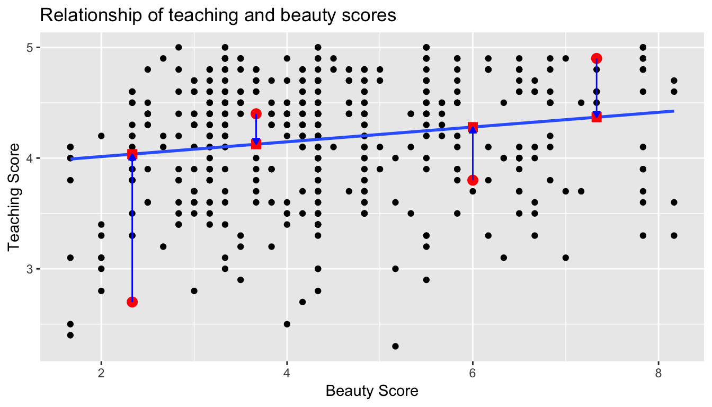
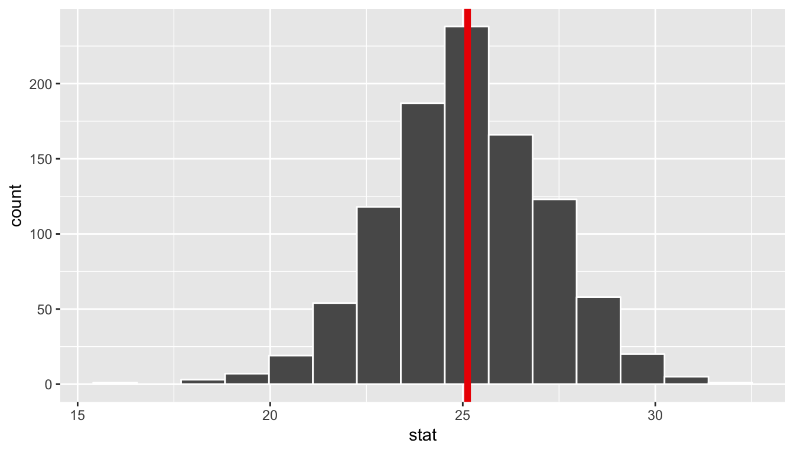
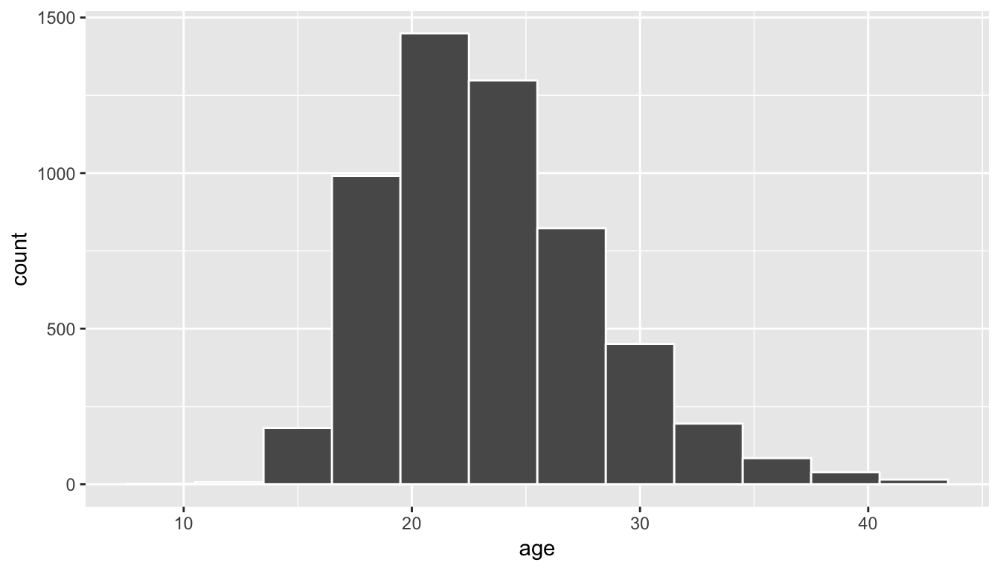

An Introduction to Statistical and Data Sciences via R
Chester Ismay and Albert Y. Kim
January 17, 2018
1 Introduction
Note: This is the development version of ModernDive and is currently in the process of being edited. For the latest released version of ModernDive, please go to ModernDive.com.


Help! I’m new to R and RStudio and I need to learn about them! However, I’m completely new to coding! What do I do? If you’re asking yourself this question, then you’ve come to the right place! Start with our Introduction for Students.
- Are you an instructor hoping to use this book in your courses? Then click here for more information on how to teach with this book.
- Are you looking to connect with and contribute to ModernDive? Then click here for information on how.
- Are you curious about the publishing of this book? Then click here for more information on the open-source technology, in particular R Markdown and the bookdown package.
This is version 0.2.0.9000 of ModernDive published on January 17, 2018. For previous versions of ModernDive, see Section ??.
1.1 Introduction for students
This book assumes no prerequisites: no algebra, no calculus, and no prior programming/coding experience. This is intended to be a gentle introduction to the practice of analyzing data and answering questions using data the way data scientists, statisticians, data journalists, and other researchers would.
1.1.1 What you will learn from this book
We hope that by the end of this book, you’ll have learned
- How to use R to explore data.
- How to answer statistical questions using tools like confidence intervals and hypothesis tests.
- How to effectively create “data stories” using these tools.
What do we mean by data stories? We mean any analysis involving data that engages the reader in answering questions with careful visuals and thoughtful discussion, such as How strong is the relationship between per capita income and crime in Chicago neighborhoods? and [How many f**ks does Quentin Tarantino give (as measured by the amount of swearing in his films)?](https://ismayc.github.io/soc301_s2017/group_projects/group4.html). Further discussions on data stories can be found in this Think With Google article.
For other examples of data stories constructed by students like yourselves, look at the final projects for two courses that have previously used ModernDive:
- Middlebury College MATH 116 Introduction to Statistical and Data Sciences using student collected data.
- Pacific University SOC 301 Social Statistics using data from the fivethirtyeight R package.
This book will help you develop your “data science toolbox”, including tools such as data visualization, data formatting, data wrangling, and data modeling using regression. With these tools, you’ll be able to perform the entirety of the “data/science pipeline” while building data communication skills (see Chapter ?? for more details).
In particular, this book will lean heavily on data visualization. In today’s world, we are bombarded with graphics that attempt to convey ideas. We will explore what makes a good graphic and what the standard ways are to convey relationships with data. You’ll also see the use of visualization to introduce concepts like mean, median, standard deviation, distributions, etc. In general, we’ll use visualization as a way of building almost all of the ideas in this book.
To impart the statistical lessons in this book, we have intentionally minimized the number of mathematical formulas used and instead have focused on developing a conceptual understanding via data visualization, statistical computing, and simulations. We hope this is a more intuitive experience than the way statistics has traditionally been taught in the past and how it is commonly perceived.
Finally, you’ll learn the importance of literate programming. By this we mean you’ll learn how to write code that is useful not just for a computer to execute but also for readers to understand exactly what your analysis is doing and how you did it. This is part of a greater effort to encourage reproducible research (see Chapter ?? for more details). Hal Abelson coined the phrase that we will follow throughout this book:
“Programs must be written for people to read, and only incidentally for machines to execute.”
We understand that there may be challenging moments as you learn to program. Both of us continue to struggle and find ourselves often using web searches to find answers and reach out to colleagues for help. In the long run though, we all can solve problems faster and more elegantly via programming. We wrote this book as our way to help you get started and you should know that there is a huge community of R users that are always happy to help everyone along as well. This community exists in particular on the internet on various forums and websites such as stackoverflow.com.
1.1.2 Data/science pipeline
You may think of statistics as just being a bunch of numbers. We commonly hear the phrase “statistician” when listening to broadcasts of sporting events. Statistics (in particular, data analysis), in addition to describing numbers like with baseball batting averages, plays a vital role in all of the sciences. You’ll commonly hear the phrase “statistically significant” thrown around in the media. You’ll see articles that say “Science now shows that chocolate is good for you.” Underpinning these claims is data analysis. By the end of this book, you’ll be able to better understand whether these claims should be trusted or whether we should be wary. Inside data analysis are many sub-fields that we will discuss throughout this book (though not necessarily in this order):
- data collection
- data wrangling
- data visualization
- data modeling
- inference
- correlation and regression
- interpretation of results
- data communication/storytelling
These sub-fields are summarized in what Grolemund and Wickham term the “data/science pipeline” in Figure 1.1.

Figure 1.1: Data/Science Pipeline
We will begin by digging into the gray Understand portion of the cycle with data visualization, then with a discussion on what is meant by tidy data and data wrangling, and then conclude by talking about interpreting and discussing the results of our models via Communication. These steps are vital to any statistical analysis. But why should you care about statistics? “Why did they make me take this class?”
There’s a reason so many fields require a statistics course. Scientific knowledge grows through an understanding of statistical significance and data analysis. You needn’t be intimidated by statistics. It’s not the beast that it used to be and, paired with computation, you’ll see how reproducible research in the sciences particularly increases scientific knowledge.
1.1.3 Reproducible research
“The most important tool is the mindset, when starting, that the end product will be reproducible.” – Keith Baggerly
Another goal of this book is to help readers understand the importance of reproducible analyses. The hope is to get readers into the habit of making their analyses reproducible from the very beginning. This means we’ll be trying to help you build new habits. This will take practice and be difficult at times. You’ll see just why it is so important for you to keep track of your code and well-document it to help yourself later and any potential collaborators as well.
Copying and pasting results from one program into a word processor is not the way that efficient and effective scientific research is conducted. It’s much more important for time to be spent on data collection and data analysis and not on copying and pasting plots back and forth across a variety of programs.
In a traditional analyses if an error was made with the original data, we’d need to step through the entire process again: recreate the plots and copy and paste all of the new plots and our statistical analysis into your document. This is error prone and a frustrating use of time. We’ll see how to use R Markdown to get away from this tedious activity so that we can spend more time doing science.
“We are talking about computational reproducibility.” - Yihui Xie
Reproducibility means a lot of things in terms of different scientific fields. Are experiments conducted in a way that another researcher could follow the steps and get similar results? In this book, we will focus on what is known as computational reproducibility. This refers to being able to pass all of one’s data analysis, data-sets, and conclusions to someone else and have them get exactly the same results on their machine. This allows for time to be spent interpreting results and considering assumptions instead of the more error prone way of starting from scratch or following a list of steps that may be different from machine to machine.
1.1.4 Final note for students
At this point, if you are interested in instructor perspectives on this book, ways to contribute and collaborate, or the technical details of this book’s construction and publishing, then continue with the rest of the chapter below. Otherwise, let’s get started with R and RStudio in Chapter ??!
1.2 Introduction for instructors
This book is inspired by three books:
- “Mathematical Statistics with Resampling and R” (Chihara and Hesterberg 2011),
- “OpenIntro: Intro Stat with Randomization and Simulation” (Diez, Barr, and Çetinkaya-Rundel 2014), and
- “R for Data Science” (Grolemund and Wickham 2016).
The first book, while designed for upper-level undergraduates and graduate students, provides an excellent resource on how to use resampling to impart statistical concepts like sampling distributions using computation instead of large-sample approximations and other mathematical formulas. The last two books are free options to learning introductory statistics and data science, providing an alternative to the many traditionally expensive introductory statistics textbooks.
When looking over the large number of introductory statistics textbooks that currently exist, we found that there wasn’t one that incorporated many newly developed R packages directly into the text, in particular the many packages included in the tidyverse collection of packages, such as ggplot2, dplyr, tidyr, and broom. Additionally, there wasn’t an open-source and easily reproducible textbook available that exposed new learners all of three of the learning goals listed at the outset of Chapter ??.
1.2.1 Who is this book for?
This book is intended for instructors of traditional introductory statistics classes using RStudio, either the desktop or server version, who would like to inject more data science topics into their syllabus. We assume that students taking the class will have no prior algebra, calculus, nor programming/coding experience.
Here are some principles and beliefs we kept in mind while writing this text. If you agree with them, this might be the book for you.
- Blur the lines between lecture and lab
- With increased availability and accessibility of laptops and open-source non-proprietary statistical software, the strict dichotomy between lab and lecture can be loosened.
- It’s much harder for students to understand the importance of using software if they only use it once a week or less. They forget the syntax in much the same way someone learning a foreign language forgets the rules. Frequent reinforcement is key.
- Focus on the entire data/science research pipeline
- We believe that the entirety of Grolemund and Wickham’s data/science pipeline should be taught.
- We believe in “minimizing prerequisites to research”: students should be answering questions with data as soon as possible.
- It’s all about the data
- We leverage R packages for rich, real, and realistic data-sets that at the same time are easy-to-load into R, such as the
nycflights13andfivethirtyeightpackages. - We believe that data visualization is a gateway drug for statistics and that the Grammar of Graphics as implemented in the
ggplot2package is the best way to impart such lessons. However, we often hear: “You can’t teachggplot2for data visualization in intro stats!” We, like David Robinson, are much more optimistic. dplyrhas made data wrangling much more accessible to novices, and hence much more interesting data-sets can be explored.
- We leverage R packages for rich, real, and realistic data-sets that at the same time are easy-to-load into R, such as the
- Use simulation/resampling to introduce statistical inference, not probability/mathematical formulas
- Instead of using formulas, large-sample approximations, and probability tables, we teach statistical concepts using resampling-based inference.
- This allows for a de-emphasis of traditional probability topics, freeing up room in the syllabus for other topics.
- Don’t fence off students from the computation pool, throw them in!
- Computing skills are essential to working with data in the 21st century. Given this fact, we feel that to shield students from computing is to ultimately do them a disservice.
- We are not teaching a course on coding/programming per se, but rather just enough of the computational and algorithmic thinking necessary for data analysis.
- Complete reproducibility and customizability
- We are frustrated when textbooks give examples, but not the source code and the data itself. We give you the source code for all examples as well as the whole book!
- Ultimately the best textbook is one you’ve written yourself. You know best your audience, their background, and their priorities. You know best your own style and the types of examples and problems you like best. Customization is the ultimate end. For more about how to make this book your own, see About this Book.
1.3 Connect and contribute
If you would like to connect with ModernDive, check out the following links:
- If you would like to receive periodic updates about ModernDive (roughly every 3 months), please sign up for our mailing list.
- Contact Albert at albert@moderndive.com and Chester chester@moderndive.com
- We’re on Twitter at ModernDive.
If you would like to contribute to ModernDive, there are many ways! Let’s all work together to make this book as great as possible for as many students and instructors as possible!
- Please let us know if you find any errors, typos, or areas from improvement on our GitHub issues page.
- If you are familiar with GitHub and would like to contribute more, please see Section ?? below.
The authors would like to thank Nina Sonneborn, Kristin Bott, and the participants of our USCOTS 2017 workshop for their feedback and suggestions. A special thanks goes to Prof. Yana Weinstein, cognitive psychological scientist and co-founder of The Learning Scientists, for her extensive contributions.
1.4 About this book
This book was written using RStudio’s bookdown package by Yihui Xie (Xie 2017). This package simplifies the publishing of books by having all content written in R Markdown. The bookdown/R Markdown source code for all versions of ModernDive is available on GitHub:
- Latest published version The most up-to-date release:
- Version 0.2.0 released on August 02, 2017 (source code).
- Available at ModernDive.com
- Development version The working copy of the next version which is currently being edited:
- Preview of book available at https://ismayc.github.io/moderndiver-book/
- Source code: Available on ModernDive’s GitHub repository page
- Previous versions Older versions that may be out of date:
- Version 0.1.3 released on February 09, 2017 (source code)
- Version 0.1.2 released on January 22, 2017 (source code)
Could this be a new paradigm for textbooks? Instead of the traditional model of textbook companies publishing updated editions of the textbook every few years, we apply a software design influenced model of publishing more easily updated versions. We can then leverage open-source communities of instructors and developers for ideas, tools, resources, and feedback. As such, we welcome your pull requests.
Finally, feel free to modify the book as you wish for your own needs, but please list the authors at the top of index.Rmd as “Chester Ismay, Albert Y. Kim, and YOU!”
2 Getting Started with Data in R
Before we can start exploring data in R, there are some key concepts to understand first:
- What are R and RStudio?
- How do I code in R?
- What are R packages?
If you are already familiar with these concepts, feel free to skip to Section ?? below introducing some of the datasets we will explore in depth in this book. Much of this chapter is based on two sources which you should feel free to use as references if you are looking for additional details:
- Ismay’s Getting used to R, RStudio, and R Markdown (Ismay 2016), which includes video screen recordings that you can follow along and pause as you learn.
- DataCamp’s online tutorials. DataCamp is a browser-based interactive platform for learning data science and their tutorials will help facilitate your learning of the above concepts (and other topics in this book). Go to DataCamp and create an account before continuing.
2.1 What are R and RStudio?
For much of this book, we will assume that you are using R via RStudio. First time users often confuse the two. At its simplest:
- R is like a car’s engine
- RStudio is like a car’s dashboard
| R: Engine | RStudio: Dashboard |
|---|---|
 |
 |
More precisely, R is a programming language that runs computations while RStudio is an integrated development environment (IDE) that provides an interface by adding many convenient features and tools. So the way of having access to a speedometer, rearview mirrors, and a navigation system makes driving much easier, using RStudio’s interface makes using R much easier as well.
Optional: For a more in-depth discussion on the difference between R and RStudio IDE, watch this DataCamp video (2m52s).
2.1.1 Installing R and RStudio
If your instructor has provided you with a link and access to RStudio Server, then you can skip this section. We do recommend though after a few months of working on the RStudio Server that you return to these instructions. If you don’t know what RStudio Server is, then please continue.
You will first need to download and install both R and RStudio (Desktop version) on your computer.
- Download and install R.
- Note: You must do this first.
- Click on the download link corresponding to your computer’s operating system.
- Download and install RStudio.
- Scroll down to “Installers for Supported Platforms”
- Click on the download link corresponding to your computer’s operating system.
Optional: If you need more detailed instructions on how to install R and RStudio, watch this DataCamp video (1m22s).
2.1.2 Using R via RStudio
Recall our car analogy from above. Much as we don’t drive a car by interacting directly with the engine but rather by using elements on the car’s dashboard, we won’t be using R directly but rather we will use RStudio’s interface. After you install R and RStudio on your computer, you’ll have two new programs AKA applications you can open. We will always work in RStudio and not R. In other words:
| R: Do not open this | RStudio: Open this |
|---|---|
|
 |
After you open RStudio, you should see the following:

Watch the following DataCamp video (4m10s) to learn about the different panes in RStudio, in particular the Console pane where you will later run R code.
2.2 How do I code in R?
Now that you’re set up with R and RStudio, you are probably asking yourself “OK. Now how do I use R?” The first thing to note as that unlike other software like Excel, STATA, or SAS that provide point and click interfaces, R is an interpreted language, meaning you have to enter in R commands written in R code i.e. you have to program in R (we use the terms “coding” and “programming” interchangeably in this book).
While it is not required to be a seasoned coder/computer programmer to use R, there is still a set of basic programming concepts that R users need to understand. Consequently, while this book is not a book on programming, you will still learn just enough of these basic programming concepts needed to explore and analyze data effectively.
2.2.1 Basic programming concepts needed
To introduce you to many of these basic programming concepts, we direct you to the following DataCamp online interactive tutorials. For each of the tutorials, we give a list of the basic programming concepts covered. Note that in this book, we will use a different font to distinguish regular font from computer code.
It is important to note that while these tutorials serve as excellent introductions, a single pass through them is insufficient for long-term learning and retention. The ultimate tools for long-term learning and retention are “learning by doing” and repetition, something we will have you do over the course of the entire book and we encourage this process as much as possible as you learn any new skill.
- From the Introduction to R course complete the following chapters. As you work through the chapters, carefully note the important terms and what they are used for. We recommend you do so in a notebook that you can easily refer back to.
- Chapter 1 Intro to basics:
- Console pane: where you enter in commands
- Objects: where values are saved, how to assign values to objects.
- Data types: integers, doubles/numerics, logicals, characters.
- Chapter 2 Vectors:
- Vectors: a series of values.
- Chapter 4 Factors:
- Categorical data (as opposed to numerical data) are represented in R as
factors.
- Categorical data (as opposed to numerical data) are represented in R as
- Chapter 5 Data frames:
- Data frames are analogous to rectangular spreadsheets: they are representations of datasets in R where the rows correspond observations and the columns correspond to variables that describe the observations. We will revisit this later in Section ??.
- Chapter 1 Intro to basics:
- From the Intermediate R course complete the following chapters:
- Chapter 1 Conditionals and Control Flow:
- Testing for equality in R using
==(and not=which is typically used for assignment). Ex:2 + 1 == 3compares2 + 1to3and is correct R syntax, while2 + 1 = 3is not and is incorrect R syntax. - Boolean algebra:
TRUE/FALSEstatements and mathematical operators such as<(less than),<=(less than or equal), and!=(not equal to). - Logical operators:
&representing “and”,|representing “or”. Ex:(2 + 1 == 3) & (2 + 1 == 4)returnsFALSEwhile(2 + 1 == 3) | (2 + 1 == 4)returnsTRUE.
- Testing for equality in R using
- Chapter 3 Functions:
- Concept of functions: they take in inputs (called arguments) and return outputs.
- You either manually specify a function’s arguments or use the function’s defaults.
- Chapter 1 Conditionals and Control Flow:
This list is by no means an exhaustive list of all the programming concepts needed to become a savvy R user; such a list would be so large it wouldn’t be very useful, especially for novices. Rather, we feel this is the bare minimum you need to know before you get started; the rest we feel you can learn as you go. Remember that your knowledge of all of these concepts will build as you get better and better at “speaking R” and getting used to its syntax.
2.2.2 Tips on learning to code
Learning to code/program is very much like learning a foreign language, it can be very daunting and frustrating at first. However just as with learning a foreign language, if you put in the effort and are not afraid to make mistakes, anybody can learn. Lastly, there are a few useful things to keep in mind as you learn to program:
- Computers are stupid: You have to tell a computer everything it needs to do. Furthermore, your instructions can’t have any mistakes in them, nor can they be ambiguous in any way.
- Do not code from scratch: Especially when learning a new programming language, it is often much easier to taking existing code and modify it, rather than trying to write new code from scratch. So please take the code we provide throughout this book and play around with it!
- Practice is the key: You won’t get better if you don’t continue to practice working with the skills you are learning in R. Just as you can’t go months without speaking a new foreign language, you can’t go long periods of time without practice in R and catch on. We recommend you set aside at least a few minutes a day to R practice by doing.
2.3 What are R packages?
An R package is a collection of functions, data, and documentation that extends the capabilities of R. They are written by a world-wide community of R users. For example, among the many packages we will use in this book are the
However, there are two key things to remember about R packages:
- Installation: Most packages are not installed by default when you install R and RStudio. You need to install a package before you can use it. Once you’ve installed it, you likely don’t need to install it again unless you want to update it to a newer version of the package.
- Loading: Packages are not loaded automatically when you open RStudio. You need to load them everytime you open RStudio.
2.3.1 Package installation
(Note that if you are working on an RStudio Server, you probably will not need to install your own packages as that has been already done for you. Still it is important that you know this process for later when you are not using the RStudio Server but rather your own installation of RStudio Desktop.)
There are two ways to install an R package. For example, to install the ggplot2 package:
- In the Files pane:
- Click on “Packages”
- Click on “Install”
- Type the name of the package under “Packages (separate multiple with space or comma):” In this case, type
ggplot2 - Click “Install”
- Alternatively, in the Console pane run
install.packages("ggplot2")(you must include the quotation marks).
Repeat this for the dplyr package.
Note: You only have to install a package once, unless you want to update an already installed package to the latest version. If you want to update a package to the latest version, then re-install it by repeating the above steps.
2.3.2 Package loading
After you’ve installed a package, you can now load it using the library() command. For example, to load the ggplot2 and dplyr packages, run the following code in the Console pane:
Note: You have to reload each package you want to use every time you open a new session of RStudio. This is a little annoying to get used to and will be your most common error as you begin. When you see an error such as
Error: could not find functionremember that this likely comes from you trying to use a function in a package that has not been loaded. Remember to run the library() function with the appropriate package to fix this error.
2.4 Putting it all together
Let’s put everything we’ve learned so far into practice and start exploring some real data! Data comes to us in a variety of formats, from pictures to text to numbers. Throughout this book, we’ll focus on datasets that can be stored in a spreadsheet as that is among the most common way data is collected in the many fields. Remember from Subsection ?? that these “spreadsheet”-type datasets are called data frames in R and we will focus on working with data frames throughout this book.
Let’s first load all the packages needed for this chapter (This assumes you’ve already installed them. Read Section ?? for information on how to install and load R packages if you haven’t already.) At the beginning of all subsequent chapters in this text, we’ll always have a list of packages similar to what follows that you should have installed and loaded to work with that chapter’s R code.
2.4.1 nycflights13 package
We likely have all flown on airplanes or know someone who has. Air travel has become an ever-present aspect in many people’s lives. If you live in or are visiting a relatively large city and you walk around that city’s airport, you see gates showing flight information from many different airlines. And you will frequently see that some flights are delayed because of a variety of conditions. Are there ways that we can avoid having to deal with these flight delays?
We’d all like to arrive at our destinations on time whenever possible. (Unless you secretly love hanging out at airports. If you are one of these people, pretend for the moment that you are very much anticipating being at your final destination.) Throughout this book, we’re going to analyze data related to flights contained in the nycflights13 package (Wickham 2017). Specifically, this package contains five datasets saved as “data frames” (see Section ??) with information about all domestic flights departing from New York City in 2013, from either Newark Liberty International (EWR), John F. Kennedy International (JFK), or LaGuardia (LGA) airports:
flights: information on all 336,776 flightsairlines: translation between two letter IATA carrier codes and names (16 in total)planes: construction information about each of 3,322 planes usedweather: hourly meteorological data (about 8710 observations) for each of the three NYC airportsairports: airport names and locations
2.4.2 flights data frame
We will begin by exploring the flights data frame that is included in the nycflights13 package and getting an idea of its structure. Run the following in your code in your console: it loads in the flights dataset into your Console. Note depending on the size of your monitor, the output may vary slightly.
# A tibble: 336,776 x 19
year month day dep_time sched_dep_time dep_delay arr_time sched_arr_time
<int> <int> <int> <int> <int> <dbl> <int> <int>
1 2013 1 1 517 515 2 830 819
2 2013 1 1 533 529 4 850 830
3 2013 1 1 542 540 2 923 850
4 2013 1 1 544 545 -1 1004 1022
5 2013 1 1 554 600 -6 812 837
6 2013 1 1 554 558 -4 740 728
7 2013 1 1 555 600 -5 913 854
8 2013 1 1 557 600 -3 709 723
9 2013 1 1 557 600 -3 838 846
10 2013 1 1 558 600 -2 753 745
# ... with 336,766 more rows, and 11 more variables: arr_delay <dbl>,
# carrier <chr>, flight <int>, tailnum <chr>, origin <chr>, dest <chr>,
# air_time <dbl>, distance <dbl>, hour <dbl>, minute <dbl>, time_hour <dttm>Let’s unpack this output:
A tibble: 336,776 x 19: atibbleis a kind of data frame. This particular data frame has336,776rows19columns corresponding to 19 variables describing each observation
year month day dep_time sched_dep_time dep_delay arr_timeare different columns, in other words variables, of this data frame.- We then have the first 10 rows of observations corresponding to 10 flights.
... with 336,766 more rows, and 11 more variables:indicating to us that 336,766 more rows of data and 11 more variables could not fit in this screen.
Unfortunately, this output does not allow us to explore the data very well. Let’s look at different tools to explore data frames.
2.4.3 Exploring data frames
Among the many ways of getting a feel for the data contained in a data frame such as flights, we present three functions that take as their argument the data frame in question:
- Using the
View()function built for use in RStudio. We will use this the most. - Using the
glimpse()function loaded viadplyrpackage - Using the
kable()function in theknitrpackage - Using the
$operator to view a single variable in a data frame
1. View():
Run View(flights) in your Console in RStudio and explore this data frame in the resulting pop-up viewer. You should get into the habit of always Viewing any data frames that come your way.
Note the capital “V” in View. R is case-sensitive so you’ll receive an error is you run view(flights) instead of View(flights).
Learning check
(LC2.1) What does any ONE row in this flights dataset refer to?
- A. Data on an airline
- B. Data on a flight
- C. Data on an airport
- D. Data on multiple flights
Learning Check Solutions
(LC2.1) What does any ONE row in this flights dataset refer to? This is data on a flight. Not a flight path! Example:
- a flight path would be United 1545 to Houston
- a flight would be United 1545 to Houston 2013/1/1 at 5:15am
By running View(flights), we see the different variables listed in the columns and we see that there are different types of variables. Some of the variables like distance, day, and arr_delay are what we will call quantitative variables. These variables are numerical in nature. Other variables here are categorical.
Note that if you look in the leftmost column of the View(flights) output, you will see a column of numbers. These are the row numbers of the dataset. If you glance across a row with the same number, say row 5, you can get an idea of what each row corresponds to. In other words, this will allow you to identify what object is being referred to in a given row. This is often called the observational unit. The observational unit in this example is an individual flight departing New York City in 2013. You can identify the observational unit by determining what the thing is that is being measured in each of the variables.
2. glimpse():
The second way to explore a data frame is using the glimpse() function that you can access after you’ve loaded the dplyr package. It provides us with much of the above information and more.
Observations: 336,776
Variables: 19
$ year <int> 2013, 2013, 2013, 2013, 2013, 2013, 2013, 2013, 2013...
$ month <int> 1, 1, 1, 1, 1, 1, 1, 1, 1, 1, 1, 1, 1, 1, 1, 1, 1, 1...
$ day <int> 1, 1, 1, 1, 1, 1, 1, 1, 1, 1, 1, 1, 1, 1, 1, 1, 1, 1...
$ dep_time <int> 517, 533, 542, 544, 554, 554, 555, 557, 557, 558, 55...
$ sched_dep_time <int> 515, 529, 540, 545, 600, 558, 600, 600, 600, 600, 60...
$ dep_delay <dbl> 2, 4, 2, -1, -6, -4, -5, -3, -3, -2, -2, -2, -2, -2,...
$ arr_time <int> 830, 850, 923, 1004, 812, 740, 913, 709, 838, 753, 8...
$ sched_arr_time <int> 819, 830, 850, 1022, 837, 728, 854, 723, 846, 745, 8...
$ arr_delay <dbl> 11, 20, 33, -18, -25, 12, 19, -14, -8, 8, -2, -3, 7,...
$ carrier <chr> "UA", "UA", "AA", "B6", "DL", "UA", "B6", "EV", "B6"...
$ flight <int> 1545, 1714, 1141, 725, 461, 1696, 507, 5708, 79, 301...
$ tailnum <chr> "N14228", "N24211", "N619AA", "N804JB", "N668DN", "N...
$ origin <chr> "EWR", "LGA", "JFK", "JFK", "LGA", "EWR", "EWR", "LG...
$ dest <chr> "IAH", "IAH", "MIA", "BQN", "ATL", "ORD", "FLL", "IA...
$ air_time <dbl> 227, 227, 160, 183, 116, 150, 158, 53, 140, 138, 149...
$ distance <dbl> 1400, 1416, 1089, 1576, 762, 719, 1065, 229, 944, 73...
$ hour <dbl> 5, 5, 5, 5, 6, 5, 6, 6, 6, 6, 6, 6, 6, 6, 6, 5, 6, 6...
$ minute <dbl> 15, 29, 40, 45, 0, 58, 0, 0, 0, 0, 0, 0, 0, 0, 0, 59...
$ time_hour <dttm> 2013-01-01 05:00:00, 2013-01-01 05:00:00, 2013-01-0...Learning check
(LC2.2) What are some examples in this dataset of categorical variables? What makes them different than quantitative variables?
(LC2.3) What does int, dbl, and chr mean in the output above?
Learning Check Solutions
(LC2.2) What are some examples in this dataset of categorical variables? What makes them different than quantitative variables?
Hint: Type ?flights in the console to see what all the variables mean!
- Cateogorical:
carrierthe companydestthe destinationflightthe flight number. Even though this is a number, its simply a label. Example United 1545 is not less than United 1714
- Quantitative:
distancethe distance in milestime_hourtime
(LC2.3) What does int, dbl, and chr mean in the output above?
int: integer. Used to count things i.e. a discrete value. Ex: the # of cars parked in a lotdbl: double. Used to measure things. i.e. a continuous value. Ex: your height in incheschr: character. i.e. text
We see that glimpse will give you the first few entries of each variable in a row after the variable. In addition, the data type (See Subsection ??) of the variable is given immediately after each variable’s name inside < >. Here, int and num refer to quantitative variables. In contrast, chr refers to categorical variables. One more type of variable is given here with the time_hour variable: dttm. As you may suspect, this variable corresponds to a specific date and time of day.
3. kable():
The final way to explore the entirety of a data frame is using the kable() function from the knitr package. Let’s explore the different carrier codes for all the airlines in our dataset two ways. Run both of these in your Console:
At first glance of both outputs, it may not appear that there is much difference. However, we’ll see later on, especially when using a tool for document production called R Markdown, that the latter produces output that is much more legible.
4. $ operator
Lastly, the $ operator allows us to explore a single variable within a data frame. For example, run the following in your console
We used the $ operator to extract only the name variable and return it as a vector of length 16. We will only be occasionally exploring data frames using this operator.
2.4.4 Help files
Another nice feature of R is the help system. You can get help in R by entering a ? before the name of a function or data frame in question and you will be presented with a page showing the documentation. For example, let’s look at the help file for the flights data frame:
A help file should pop-up in the Help pane of RStudio. Note the content of this particular help file is also accessible on the web on page 3 of the PDF document. You should get in the habit of consulting the help file of any function or data frame in R about which you have questions.
2.5 Conclusion
We’ve given you what we feel are the most essential concepts to know before you can start exploring data in R. Is this chapter exhaustive? Absolutely not. To try to include everything in this chapter would make the chapter so large it wouldn’t be useful! However, as we stated earlier, the best way to learn R is to learn by doing. Now let’s get into learning about how to create good stories about and with data. In Chapter ??, we start with what we feel is the most important tool in a data scientist’s toolbox: data visualization.
2.5.1 What’s to come?
In Chapter ??, we will further explore the distribution of a variable in a related dataset to flights: the temp variable in the weather dataset. We’ll be interested in understanding how this variable varies in relation to the values of other variables in the dataset. We’ll see that data visualization is a powerful tool to add to our toolbox for exploring what is going on in a dataset beyond the View and glimpse functions we introduced in this chapter.
(PART) Data Science via the tidyverse
3 Data Visualization via ggplot2
We begin the development of your data science toolbox with data visualization. By visualizing our data, we will be able to gain valuable insights from our data that we couldn’t initially see from just looking at the raw data in spreadsheet form. We will use the ggplot2 package as it provides an easy way to customize your plots and is rooted in the data visualization theory known as The Grammar of Graphics (Wilkinson 2005).
At the most basic level, graphics/plots/charts (we use these terms interchangeably in this book) provide a nice way for us to get a sense for how quantitative variables compare in terms of their center (where the values tend to be located) and their spread (how they vary around the center). The most important thing to know about graphics is that they should be created to make it obvious for your audience to understand the findings and insight you want to get across. This does however require a balancing act. On the one hand, you want to highlight as many meaningful relationships and interesting findings as possible, but on the other you don’t want to include so many as to overwhelm your audience.
As we will see, plots/graphics also help us to identify patterns and outliers in our data. We will see that a common extension of these ideas is to compare the distribution of one quantitative variable (i.e., what the spread of a variable looks like or how the variable is distributed in terms of its values) as we go across the levels of a different categorical variable.
Needed packages
Let’s load all the packages needed for this chapter (this assumes you’ve already installed them). Read Section ?? for information on how to install and load R packages.
3.1 The Grammar of Graphics
We begin with a discussion of a theoretical framework for data visualization known as the “The Grammar of Graphics,” which serves as the basis for the ggplot2 package. Much like how we construct sentences in any language by using a linguistic grammar (nouns, verbs, subjects, objects, etc.), the theoretical framework given by Leland Wilkinson (Wilkinson 2005) allows us to specify the components of a statistical graphic.
3.1.1 Components of the Grammar
In short, the grammar tells us that:
A statistical graphic is a mapping of
datavariables toaesthetic attributes ofgeometric objects.
Specifically, we can break a graphic into the following three essential components:
data: the data-set comprised of variables that we map.geom: the geometric object in question. This refers to our type of objects we can observe in our plot. For example, points, lines, bars, etc.aes: aesthetic attributes of the geometric object that we can perceive on a graphic. For example, x/y position, color, shape, and size. Each assigned aesthetic attribute can be mapped to a variable in our data-set.
Let’s break down the grammar with an example.
3.1.2 Gapminder
In February 2006, a statistician named Hans Rosling gave a TED talk titled “The best stats you’ve ever seen” where he presented global economic, health, and development data from the website gapminder.org. For example, from the 1704 countries included from 2007, consider only the first 6 countries when listed alphabetically:
| Country | Continent | Life Expectancy | Population | GDP per Capita |
|---|---|---|---|---|
| Afghanistan | Asia | 43.83 | 31889923 | 974.6 |
| Albania | Europe | 76.42 | 3600523 | 5937.0 |
| Algeria | Africa | 72.30 | 33333216 | 6223.4 |
| Angola | Africa | 42.73 | 12420476 | 4797.2 |
| Argentina | Americas | 75.32 | 40301927 | 12779.4 |
| Australia | Oceania | 81.23 | 20434176 | 34435.4 |
Each row in this table corresponds to a country in 2007. For each row, we have 5 columns:
- Country: Name of country.
- Continent: Which of the five continents the country is part of. (Note that
Americasgroups North and South America and that Antarctica is excluded here.) - Life Expectancy: Life expectancy in years.
- Population: Number of people living in the country.
- GDP per Capita: Gross domestic product (in US dollars).
Now consider Figure 3.1, which plots this data for all 142 countries in the data frame. Note that R will deal with large numbers using scientific notation. So in the legend for “Population”, 1.25e+09 = \(1.25 \times 10^{9}\) = 1,250,000,000 = 1.25 billion.

Figure 3.1: Life Expectancy over GDP per Capita in 2007
Let’s view this plot through the grammar of graphics:
- The
datavariable GDP per Capita gets mapped to thex-positionaesthetic of the points. - The
datavariable Life Expectancy gets mapped to they-positionaesthetic of the points. - The
datavariable Population gets mapped to thesizeaesthetic of the points. - The
datavariable Continent gets mapped to thecoloraesthetic of the points.
Recall that data here corresponds to each of the variables being in the same data frame and the “data variable” corresponds to a column in a data frame.
While in this example we are considering one type of geometric object (of type point), graphics are not limited to just points. Some plots involve lines while others involve bars. Let’s summarize the three essential components of the grammar in a table:
| data variable | aes | geom |
|---|---|---|
| GDP per Capita | x | point |
| Life Expectancy | y | point |
| Population | size | point |
| Continent | color | point |
3.1.3 Other components of the Grammar
There are other components of the Grammar of Graphics we can control. As you start to delve deeper into the Grammar of Graphics, you’ll start to encounter these topics more and more often. In this book, we’ll only work with the two other components below (The other components are left to a more advanced text such as R for Data Science (Grolemund and Wickham 2016)):
facetting breaks up a plot into small multiples corresponding to the levels of another variable (Section ??)positionadjustments for barplots (Section ??)
In general, the Grammar of Graphics allows for a high degree of customization and also a consistent framework for easy updating/modification of plots.
3.1.4 The ggplot2 package
In this book, we will be using the ggplot2 package for data visualization, which is an implementation of the Grammar of Graphics for R (Wickham and Chang 2017). You may have noticed that a lot of the previous text in this chapter is written in computer font. This is because the various components of the Grammar of Graphics are specified in the ggplot function, which expects at a bare minimal as arguments:
- The data frame where the variables exist: the
dataargument - The mapping of the variables to aesthetic attributes: the
mappingargument, which specifies theaesthetic attributes involved
After we’ve specified these components, we then add layers to the plot. The most essential layer to add to a plot is the specification of which type of geometric object we want the plot to involve; e.g. points, lines, bars. Other layers we can add include the specification of the plot title, axes labels, and visual themes for the plot.
Let’s now put the theory of the Grammar of Graphics into practice.
3.2 Five Named Graphs - The 5NG
For our purposes, we will be limiting consideration to five different types of graphs. We term these five named graphs the 5NG:
- scatterplots
- linegraphs
- boxplots
- histograms
- barplots
We will discuss some variations of these plots, but with this basic repertoire in your toolbox you can visualize a wide array of different data variable types. Note that certain plots are only appropriate for categorical/logical variables and others only for quantitative variables. You’ll want to quiz yourself often as we go along on which plot makes sense a given a particular problem or data-set.
3.3 5NG#1: Scatterplots
The simplest of the 5NG are scatterplots (also called bivariate plots); they allow you to investigate the relationship between two continuous variables. While you may already be familiar with this type of plot, let’s view it through the lens of the Grammar of Graphics. Specifically, we will graphically investigate the relationship between the following two continuous variables in the flights data frame:
dep_delay: departure delay on the horizontal “x” axis andarr_delay: arrival delay on the vertical “y” axis
for Alaska Airlines flights leaving NYC in 2013. This requires paring down the flights data frame to a smaller data frame all_alaska_flights consisting of only Alaska Airlines (carrier code “AS”) flights. Don’t worry for now what this code in doing, we’ll see this in Chapter ??, just run it all and understand that we are taking all flights and only considering those corresponding to Alaska Airlines.
This code snippet makes use of functions in the dplyr package for data wrangling to achieve our goal: it takes the flights data frame and filters it to only return the rows which meet the condition carrier == "AS". Recall from Section ?? that testing for equality is specified with == and not =. You will see many more examples of == and filter() in Chapter ??.
Learning check
(LC3.1) Take a look at both the flights and all_alaska_flights data frames by running View(flights) and View(all_alaska_flights) in the console. In what respect do these data frames differ?
3.3.1 Scatterplots via geom_point
We proceed to create the scatterplot using the ggplot() function:

Figure 3.2: Arrival Delays vs Departure Delays for Alaska Airlines flights from NYC in 2013
In Figure 3.2 we see that a positive relationship exists between dep_delay and arr_delay: as departure delays increase, arrival delays tend to also increase. We also note that the majority of points fall near the point (0, 0). There is a large mass of points clustered there. Let’s break this down, keeping in mind our discussion in Section ??:
- Within the
ggplot()function call, we specify two of the components of the grammar:- The
dataframe to beall_alaska_flightsby settingdata = all_alaska_flights - The
aesthetic mapping by settingaes(x = dep_delay, y = arr_delay). Specifically- the variable
dep_delaymaps to thexposition aesthetic - the variable
arr_delaymaps to theyposition aesthetic
- the variable
- The
- We add a layer to the
ggplot()function call using the+sign. The layer in question specifies the third component of the grammar: thegeometric object. In this case the geometric object arepoints, set by specifyinggeom_point().
Some notes on layers:
- Note that the
+sign comes at the end of lines, and not at the beginning. You’ll get an error in R if you put it at the beginning. - When adding layers to a plot, you are encouraged to hit Return on your keyboard after entering the
+so that the code for each layer is on a new line. As we add more and more layers to plots, you’ll see this will greatly improve the legibility of your code. - To stress the importance of adding layers, in particular the layer specifying the
geometric object, consider Figure 3.3 where no layers are added. A not very useful plot!

Figure 3.3: Plot with No Layers
Learning check
(LC3.2) What are some practical reasons why dep_delay and arr_delay have a positive relationship?
(LC3.3) What variables (not necessarily in the flights data frame) would you expect to have a negative correlation (i.e. a negative relationship) with dep_delay? Why? Remember that we are focusing on continuous variables here.
(LC3.4) Why do you believe there is a cluster of points near (0, 0)? What does (0, 0) correspond to in terms of the Alaskan flights?
(LC3.5) What are some other features of the plot that stand out to you?
(LC3.6) Create a new scatterplot using different variables in the all_alaska_flights data frame by modifying the example above.
3.3.2 Over-plotting
The large mass of points near (0, 0) in Figure 3.2 can cause some confusion. This is the result of a phenomenon called over-plotting. As one may guess, this corresponds to values being plotted on top of each other over and over again. It is often difficult to know just how many values are plotted in this way when looking at a basic scatterplot as we have here. There are two ways to address this issue:
- By adjusting the transparency of the points via the
alphaargument - By jittering the points via
geom_jitter()
The first way of relieving over-plotting is by changing the alpha argument in geom_point() which controls the transparency of the points. By default, this value is set to 1. We can change this to any value between 0 and 1 where 0 sets the points to be 100% transparent and 1 sets the points to be 100% opaque. Note how the following function call is identical to the one in Section ??, but with alpha = 0.2 added to the geom_point().
ggplot(data = all_alaska_flights, mapping = aes(x = dep_delay, y = arr_delay)) +
geom_point(alpha = 0.2)
Figure 3.4: Delay scatterplot with alpha=0.2
The key feature to note in Figure 3.4 is that the transparency of the points is cumulative: areas with a high-degree of over-plotting are darker, whereas areas with a lower degree are less dark.
Note that there is no aes() surrounding alpha = 0.2 here. Since we are NOT mapping a variable to an aesthetic but instead are just changing a setting, we don’t need to create a mapping with aes(). In fact, you’ll receive an error if you try to change the second line above to geom_point(aes(alpha = 0.2)).
The second way of relieving over-plotting is to jitter the points a bit. In other words, we are going to add just a bit of random noise to the points to better see them and remove some of the over-plotting. You can think of “jittering” as shaking the points around a bit on the plot. Instead of using geom_point, we use geom_jitter to perform this shaking. To specify how much jitter to add, we adjust the width and height arguments. This corresponds to how hard you’d like to shake the plot in units corresponding to those for both the horizontal and vertical variables (in this case, minutes).
ggplot(all_alaska_flights, aes(x = dep_delay, y = arr_delay)) +
geom_jitter(width = 30, height = 30)
Figure 3.5: Jittered delay scatterplot
Note how this function call is identical to the one in Subsection ??, but with geom_point() replaced with geom_jitter(). The plot in Figure 3.5 helps us a little bit in getting a sense for the over-plotting, but with a relatively large data-set like this one (714 flights), it can be argued that changing the transparency of the points by setting alpha proved more effective.
You may have noticed that in the code to create Figure 3.5 have also dropped the data = and also the mapping = code before aes in this example. Since ggplot is expecting its first argument data to be a data frame and its second argument to correspond to mapping =, you can omit both and you’ll get the same plot. As you get more and more practice, you’ll likely find yourself not including the specification of the argument like this. It’s good practice to always include it though, especially as you are just beginning to practice with R code.
Learning check
(LC3.7) Why is setting the alpha argument value useful with scatterplots? What further information does it give you that a regular scatterplot cannot?
(LC3.8) After viewing the Figure 3.4 above, give an approximate range of arrival delays and departure delays that occur the most frequently. How has that region changed compared to when you observed the same plot without the alpha = 0.2 set in Figure 3.2?
3.3.3 Summary
Scatterplots display the relationship between two continuous variables. They are among the most commonly used plots because they can provide an immediate way to see the trend in one variable versus another. However, if you try to create a scatterplot where either one of the two variables is not quantitative, you will get strange results. Be careful!
With medium to large data-sets, you may need to play with either geom_jitter() or the alpha argument in order to get a good feel for relationships in your data. This tweaking is often a fun part of data visualization since you’ll have the chance to see different relationships come about as you make subtle changes to your plots.
3.4 5NG#2: Linegraphs
The next of the 5NG is a linegraph. They are most frequently used when the x-axis represents time and the y-axis represents some other numerical variable; such plots are known as time series. Time represents a variable that is connected together by each day following the previous day. In other words, time has a natural ordering. Linegraphs should be avoided when there is not a clear sequential ordering to the explanatory variable, i.e. the x-variable or the predictor variable.
Our focus now turns to the temp variable in this weather data-set. By
- Looking over the
weatherdata-set by typingView(weather)in the console. - Running
?weatherto bring up the help file.
We can see that the temp variable corresponds to hourly temperature (in Fahrenheit) recordings at weather stations near airports in New York City. Instead of considering all hours in 2013 for all three airports in NYC, let’s focus on the hourly temperature at Newark airport (origin code “EWR”) for the first 15 days in January 2013. The weather data frame in the nycflights13 package contains this data, but we first need to filter it to only include those rows that correspond to Newark in the first 15 days of January.
This is similar to the previous use of the filter command in Section ??, however we now use the & operator. The above selects only those rows in weather where the originating airport is "EWR" and we are in the first month and the day is from 1 to 15 inclusive.
Learning check
(LC3.9) Take a look at both the weather and early_january_weather data frames by running View(weather) and View(early_january_weather) in the console. In what respect do these data frames differ?
(LC3.10) The weather data is recorded hourly. Why does the time_hour variable correctly identify the hour of the measurement whereas the hour variable does not?
3.4.1 Linegraphs via geom_line
We plot a linegraph of hourly temperature using geom_line():

Figure 3.6: Hourly Temperature in Newark for January 1-15, 2013
Much as with the ggplot() call in Chapter ??, we describe the components of the Grammar of Graphics:
- Within the
ggplot()function call, we specify two of the components of the grammar:- The
dataframe to beearly_january_weatherby settingdata = early_january_weather - The
aesthetic mapping by settingaes(x = time_hour, y = temp). Specificallytime_hour(i.e. the time variable) maps to thexpositiontempmaps to theyposition
- The
- We add a layer to the
ggplot()function call using the+sign - The layer in question specifies the third component of the grammar: the
geometric object in question. In this case the geometric object is aline, set by specifyinggeom_line().
Learning check
(LC3.11) Why should linegraphs be avoided when there is not a clear ordering of the horizontal axis?
(LC3.12) Why are linegraphs frequently used when time is the explanatory variable?
(LC3.13) Plot a time series of a variable other than temp for Newark Airport in the first 15 days of January 2013.
3.4.2 Summary
Linegraphs, just like scatterplots, display the relationship between two continuous variables. However, the variable on the x-axis (i.e. the explanatory variable) should have a natural ordering, like some notion of time. We can mislead our audience if that isn’t the case.
3.5 5NG#3: Histograms
Let’s consider the temp variable in the weather data frame once again, but now unlike with the linegraphs in Chapter ??, let’s say we don’t care about the relationship of temperature to time, but rather we care about the (statistical) distribution of temperatures. We could just produce points where each of the different values appear on something similar to a number line:

Figure 3.7: Plot of Hourly Temperature Recordings from NYC in 2013
This gives us a general idea of how the values of temp differ. We see that temperatures vary from around 11 up to 100 degrees Fahrenheit. The area between 40 and 60 degrees appears to have more points plotted than outside that range.
3.5.1 Histograms via geom_histogram
What is commonly produced instead of the above plot is a plot known as a histogram. The histogram shows how many elements of a single numerical variable fall in specified bins. In this case, these bins may correspond to between 0-10°F, 10-20°F, etc. We produce a histogram of the hour temperatures at all three NYC airports in 2013:
`stat_bin()` using `bins = 30`. Pick better value with `binwidth`.Warning: Removed 1 rows containing non-finite values (stat_bin).
Figure 3.8: Histogram of Hourly Temperature Recordings from NYC in 2013
Note here:
- There is only one variable being mapped in
aes(): the single continuous variabletemp. You don’t need to compute the y-aesthetic: it gets computed automatically. - We set the
geometric object to begeom_histogram() - We got a warning message of
1 rows containing non-finite valuesbeing removed. This is due to one of the values of temperature being missing. R is alerting us that this happened.
- Another warning corresponds to an urge to specify the number of bins you’d like to create.
3.5.2 Adjusting the bins
We can adjust characteristics of the bins in one of two ways:
- By adjusting the number of bins via the
binsargument - By adjusting the width of the bins via the
binwidthargument
First, we have the power to specify how many bins we would like to put the data into as an argument in the geom_histogram() function. By default, this is chosen to be 30 somewhat arbitrarily; we have received a warning above our plot that this was done.
Figure 3.9: Histogram of Hourly Temperature Recordings from NYC in 2013 - 60 Bins
Note the addition of the color argument. If you’d like to be able to more easily differentiate each of the bins, you can specify the color of the outline as done above.
Second, instead of specifying the number of bins, we can also specify the width of the bins by using the binwidth argument in the geom_histogram function.

Figure 3.10: Histogram of Hourly Temperature Recordings from NYC in 2013 - Binwidth = 10
Learning check
(LC3.14) What does changing the number of bins from 30 to 60 tell us about the distribution of temperatures?
(LC3.15) Would you classify the distribution of temperatures as symmetric or skewed?
(LC3.16) What would you guess is the “center” value in this distribution? Why did you make that choice?
(LC3.17) Is this data spread out greatly from the center or is it close? Why?
3.5.3 Summary
Histograms, unlike scatterplots and linegraphs, present information on only a single continuous variable. In particular they are visualizations of the (statistical) distribution of values.
3.6 Facets
Before continuing the 5NG, we briefly introduce a new concept called faceting. Faceting is used when we’d like to create small multiples of the same plot over a different categorical variable. By default, all of the small multiples will have the same vertical axis.
For example, suppose we were interested in looking at how the temperature histograms we saw in Chapter ?? varied by month. This is what is meant by “the distribution of a variable over another variable”: temp is one variable and month is the other variable. In order to look at histograms of temp for each month, we add a layer facet_wrap(~ month). You can also specify how many rows you’d like the small multiple plots to be in using nrow or how many columns using ncol inside of facet_wrap.
ggplot(data = weather, aes(x = temp)) +
geom_histogram(binwidth = 5, color = "white") +
facet_wrap(~ month, nrow = 4)
Figure 3.11: Faceted histogram
Note the use of the ~ before month in facet_wrap. The tilde (~) is required and you’ll receive the error Error in as.quoted(facets) : object 'month' not found if you don’t include it before month here.
As we might expect, the temperature tends to increase as summer approaches and then decrease as winter approaches.
Learning check
(LC3.18) What other things do you notice about the faceted plot above? How does a faceted plot help us see relationships between two variables?
(LC3.19) What do the numbers 1-12 correspond to in the plot above? What about 25, 50, 75, 100?
(LC3.20) For which types of data-sets would these types of faceted plots not work well in comparing relationships between variables? Give an example describing the nature of these variables and other important characteristics.
(LC3.21) Does the temp variable in the weather data-set have a lot of variability? Why do you say that?
3.7 5NG#4: Boxplots
While using faceted histograms can provide a way to compare distributions of a continuous variable split by groups of a categorical variable as in Section ??, an alternative plot called a boxplot (also called a side-by-side boxplot) achieves the same task and is frequently preferred. The boxplot uses the information provided in the five-number summary referred to in Appendix ??. It gives a way to compare this summary information across the different levels of a categorical variable.
3.7.1 Boxplots via geom_boxplot
Let’s create a boxplot to compare the monthly temperatures as we did above with the faceted histograms.

Figure 3.12: Invalid boxplot specification
Warning messages:
1: Continuous x aesthetic -- did you forget aes(group=...)?
2: Removed 1 rows containing non-finite values (stat_boxplot). Note the set of warnings that is given here. The second warning corresponds to missing values in the data frame and it is turned off on subsequent plots. Let’s focus on the first warning.
Observe that this plot does not look like what we were expecting. We were expecting to see the distribution of temperatures for each month (so 12 different boxplots). The first warning is letting us know that we are plotting a continuous, and not categorical variable, on the x-axis. This gives us the overall boxplot without any other groupings. We can get around this by introducing a new function for our x variable:

Figure 3.13: Month by temp boxplot
We have introduced a new function called factor() here. One of the things this function does is to convert a discrete value like month (1, 2, …, 12) into a categorical variable. The “box” part of this plot represents the 25th percentile, the median (50th percentile), and the 75th percentile. The dots correspond to outliers. (The specific formulation for these outliers is discussed in Appendix ??.) The lines show how the data varies that is not in the center 50% defined by the first and third quantiles. Longer lines correspond to more variability and shorter lines correspond to less variability.
Learning check
(LC3.22) What does the dot at the bottom of the plot for May correspond to? Explain what might have occurred in May to produce this point.
(LC3.23) Which months have the highest variability in temperature? What reasons do you think this is?
(LC3.24) We looked at the distribution of a continuous variable over a categorical variable here with this boxplot. Why can’t we look at the distribution of one continuous variable over the distribution of another continuous variable? Say, temperature across pressure, for example?
(LC3.25) Boxplots provide a simple way to identify outliers. Why may outliers be easier to identify when looking at a boxplot instead of a faceted histogram?
3.7.2 Summary
Boxplots provide a way to compare and contrast the distribution of one quantitative variable across multiple levels of one categorical variable. One can see where the median falls across the different groups by looking at the center line in the box. To see how spread out the variable is across the different groups, look at both the width of the box and also how far the lines stretch vertically from the box. (If the lines stretch far from the box but the box has a small width, the variability of the values closer to the center is much smaller than the variability of the outer ends of the variable.) Outliers are even more easily identified when looking at a boxplot than when looking at a histogram.
3.8 5NG#5: Barplots
Both histograms and boxplots represent ways to visualize the variability of continuous variables. Another common task is to present the distribution of a categorical variable. This is a simpler task, focused on how many elements from the data fall into different categories of the categorical variable. Often the best way to visualize these different counts (also known as frequencies) is via a barplot, also known as a barchart.
One complication, however, is how your counts are represented in your data. For example, run the following code in your Console. This code manually creates two data frames representing counts of fruit.
fruits <- data_frame(
fruit = c("apple", "apple", "apple", "orange", "orange")
)
fruits_counted <- data_frame(
fruit = c("apple", "orange"),
number = c(3, 2)
)We see both the fruits and fruits_counted data frames represent the same collection of fruit: three apples and two oranges. However, whereas fruits just lists the fruit:
| fruit |
|---|
| apple |
| apple |
| apple |
| orange |
| orange |
fruits_counted has a variable count, where the counts are pre-tabulated.
| fruit | number |
|---|---|
| apple | 3 |
| orange | 2 |
Compare the barcharts in Figures 3.14 and 3.15, which are identical, but are based on two different data frames:

Figure 3.14: Barplot when counts are not pre-tabulated

Figure 3.15: Barplot when counts are pre-tabulated
Observe that:
- The code that generates Figure 3.14 based on
fruitsdoes not have an explicityaesthetic and usesgeom_bar() - The code that generates Figure 3.15 based on
fruits_countedhas an explicityaesthetic (to the variablenumber) and usesgeom_col()
This one aspect of creating barplots using ggplot2 causes the most initial confusion: when the categorical variable you want to plot is not pre-tabulated in your data frame you need to use geom_bar, but if the categorical variable is pre-tabulated and stored in a variable, you need to use geom_col and explicitly map this variable to the y aesthetic.
3.8.1 Barplots via geom_bar/geom_col
Consider the distribution of airlines that flew out of New York City in 2013. Here we explore the number of flights from each airline/carrier. This can be plotted by invoking the geom_bar function in ggplot2:

Figure 3.16: Number of flights departing NYC in 2013 by airline using geom_bar
To get an understanding of what the names of these airlines are corresponding to these carrier codes, we can look at the airlines data frame in the nycflights13 package. Note the use of the kable function here in the knitr package, which produces a nicely-formatted table of the values in the airlines data frame.
| carrier | name |
|---|---|
| 9E | Endeavor Air Inc. |
| AA | American Airlines Inc. |
| AS | Alaska Airlines Inc. |
| B6 | JetBlue Airways |
| DL | Delta Air Lines Inc. |
| EV | ExpressJet Airlines Inc. |
| F9 | Frontier Airlines Inc. |
| FL | AirTran Airways Corporation |
| HA | Hawaiian Airlines Inc. |
| MQ | Envoy Air |
| OO | SkyWest Airlines Inc. |
| UA | United Air Lines Inc. |
| US | US Airways Inc. |
| VX | Virgin America |
| WN | Southwest Airlines Co. |
| YV | Mesa Airlines Inc. |
Going back to our barplot, we see that United Air Lines, JetBlue Airways, and ExpressJet Airlines had the most flights depart New York City in 2013. To get the actual number of flights by each airline we can use the group_by(), summarize(), and n() functions in the dplyr package on the carrier variable in flights, which we will introduce formally in Chapter ??.
| carrier | number |
|---|---|
| 9E | 18460 |
| AA | 32729 |
| AS | 714 |
| B6 | 54635 |
| DL | 48110 |
| EV | 54173 |
| F9 | 685 |
| FL | 3260 |
| HA | 342 |
| MQ | 26397 |
| OO | 32 |
| UA | 58665 |
| US | 20536 |
| VX | 5162 |
| WN | 12275 |
| YV | 601 |
In this table, the counts of the carriers are pre-tabulated. To create a barchart using the data frame flights_table, we use geom_col and map the y aesthetic to the variable number. Compare this barplot using geom_col in Figure 3.17 with the earlier barplot using geom_bar in Figure 3.16. They are identical.

Figure 3.17: Number of flights departing NYC in 2013 by airline using geom_col
Learning check
(LC3.26) Why are histograms inappropriate for visualizing categorical variables?
(LC3.27) What is the difference between histograms and barplots?
(LC3.28) How many Envoy Air flights departed NYC in 2013?
(LC3.29) What was the seventh highest airline in terms of departed flights from NYC in 2013? How could we better present the table to get this answer quickly.
3.8.2 Must avoid pie charts!
Unfortunately, one of the most common plots seen today for categorical data is the pie chart. While they may see harmless enough, they actually present a problem in that humans are unable to judge angles well. As Naomi Robbins describes in her book “Creating More Effective Graphs” (Robbins 2013), we overestimate angles greater than 90 degrees and we underestimate angles less than 90 degrees. In other words, it is difficult for us to determine relative size of one piece of the pie compared to another.
Let’s examine our previous barplot example on the number of flights departing NYC by airline. This time we will use a pie chart. As you review this chart, try to identify
- how much larger the portion of the pie is for ExpressJet Airlines (
EV) compared to US Airways (US), - what the third largest carrier is in terms of departing flights, and
- how many carriers have fewer flights than United Airlines (
UA)?

Figure 3.18: The dreaded pie chart
While it is quite easy to look back at the barplot to get the answer to these questions, it’s quite difficult to get the answers correct when looking at the pie graph. Barplots can always present the information in a way that is easier for the eye to determine relative position. There may be one exception from Nathan Yau at FlowingData.com but we will leave this for the reader to decide:

Figure 3.19: The only good pie chart
Learning check
(LC3.30) Why should pie charts be avoided and replaced by barplots?
(LC3.31) What is your opinion as to why pie charts continue to be used?
3.8.3 Using barplots to compare two categorical variables
Barplots are the go-to way to visualize the frequency of different categories of a categorical variable. They make it easy to order the counts and to compare the frequencies of one group to another. Another use of barplots (unfortunately, sometimes inappropriately and confusingly) is to compare two categorical variables together. Let’s examine the distribution of outgoing flights from NYC by carrier and airport.
We begin by getting the names of the airports in NYC that were included in the flights data-set. Here, we preview the inner_join() function from Chapter ??. This function will join the data frame flights with the data frame airports by matching rows that have the same airport code. However, in flights the airport code is included in the origin variable whereas in airports the airport code is included in the faa variable. We will revisit such examples in Section ?? on joining data-sets.
After running View(flights_namedports), we see that name now corresponds to the name of the airport as referenced by the origin variable. We will now plot carrier as the horizontal variable. When we specify geom_bar, it will specify count as being the vertical variable. A new addition here is fill = name. Look over what was produced from the plot to get an idea of what this argument gives.

Figure 3.20: Stacked barplot comparing the number of flights by carrier and airport
This plot is what is known as a stacked barplot. While simple to make, it often leads to many problems. For example in this plot, it is difficult to compare the heights of the different colors (corresponding to the number of flights from each airport) between the bars (corresponding to the different carriers).
Note that fill is an aesthetic just like x is an aesthetic, and thus must be included within the parentheses of the aes() mapping. The following code, where the fill aesthetic is specified on the outside will yield an error. This is a fairly common error that new ggplot users make:
ggplot(data = flights_namedports, mapping = aes(x = carrier), fill = name) +
geom_bar()Learning check
(LC3.32) What kinds of questions are not easily answered by looking at the above figure?
(LC3.33) What can you say, if anything, about the relationship between airline and airport in NYC in 2013 in regards to the number of departing flights?
Another variation on the stacked barplot is the side-by-side barplot.
ggplot(data = flights_namedports, mapping = aes(x = carrier, fill = name)) +
geom_bar(position = "dodge")
Figure 3.21: Side-by-side barplot comparing the number of flights by carrier and airport
Learning check
(LC3.34) Why might the side-by-side barplot be preferable to a stacked barplot in this case?
(LC3.35) What are the disadvantages of using a side-by-side barplot, in general?
Lastly, an often preferred type of barplot is the faceted barplot. We already saw this concept of faceting and small multiples in Section ??. This gives us a nicer way to compare the distributions across both carrier and airport/name.
ggplot(data = flights_namedports, mapping = aes(x = carrier, fill = name)) +
geom_bar() +
facet_grid(name ~ .)Figure 3.22: Faceted barplot comparing the number of flights by carrier and airport
Note how the facet_grid function arguments are written here. We are wanting the names of the airports vertically and the carrier listed horizontally. As you may have guessed, this argument and other formulas of this sort in R are in y ~ x order. We will see more examples of this in Chapter ??.
If you’d like to create small multiples in a vertical direction, you’ll want to use facet_grid() with the name of the variable before the ~ as we did in Figure 3.22. This corresponds to vertical going with y in the formula. If instead you’d like the small multiples to be in the horizontal direction, you’d use facet_grid() with the name of the variable after the ~, corresponding to the x position in the formula. Further, you can use facet_wrap() if you would like the small multiples to wrap into multiple rows as we saw earlier in the faceted histogram example in Figure 3.11. Additionally, you could use facet_grid() with one variable in the y position and another variable in the x position creating a grid of all possible combinations of the two variables.
Learning check
(LC3.36) Why is the faceted barplot preferred to the side-by-side and stacked barplots in this case?
(LC3.37) What information about the different carriers at different airports is more easily seen in the faceted barplot?
3.8.4 Summary
Barplots are the preferred way of displaying categorical variables. They are easy-to-understand and make it easy to compare across groups of a categorical variable. When dealing with more than one categorical variable, faceted barplots are frequently preferred over side-by-side or stacked barplots. Stacked barplots are sometimes nice to look at, but it is quite difficult to compare across the levels since the sizes of the bars are all of different sizes. Side-by-side barplots can provide an improvement on this, but the issue about comparing across groups still must be dealt with.
3.9 Conclusion
3.9.1 Review questions
Review questions have been designed using the fivethirtyeight R package (Ismay and Chunn 2017) with links to the corresponding FiveThirtyEight.com articles in our free DataCamp course Effective Data Storytelling using the tidyverse. The material in this chapter is covered in the chapters of the DataCamp course available below:
3.9.2 What’s to come?
In Chapter ??, we’ll introduce the concept of “tidy data” and how it is used as the driving force behind data visualizations and the remainder of the textbook. You’ll see that the concept appears to be simple, but actually can be a little challenging to decipher without careful practice. We’ll also investigate how to import CSV (comma-separated value) files into R using the readr package.
3.9.3 Resources
An excellent resource as you begin to create plots using the ggplot2 package is a cheatsheet that RStudio has put together entitled “Data Visualization with ggplot2” available
- by clicking here or
- by clicking the RStudio Menu Bar -> Help -> Cheatsheets -> “Data Visualization with
ggplot2”
This cheatsheet covers more than what we’ve discussed in this chapter but provides nice visual descriptions of what each function produces.
In addition, we’ve created a mind map to help you remember which types of plots are most appropriate in a given situation by identifying the types of variables involved in the problem.

Figure 3.23: Mind map for Data Visualization
3.9.4 Script of R code
An R script file of all R code used in this chapter is available here.
4 Tidy Data
In Subsection ?? we introduced the concept of a data frame: a rectangular spreadsheet-like representation of data in R where the rows correspond to observations and the columns correspond to variables describing each observation. In Section ??, we started explorations of our first data frame flights included in the nycflights13 package. In Chapter ?? we made graphics using data contained in flights and other data frames.
In this chapter, we extend some of these ideas by discussing a type of data formatting called “tidy” data. You will see that having data stored in “tidy” format is about more than what the colloquial definition of the term “tidy” might suggest of having your data “neatly organized” in a spreadsheet. Instead, we define the term “tidy” in a more rigorous fashion, outlining a set of rules by which data can be stored and the implications of these rules on analyses.
Although knowledge of this type of data formatting was not necessary in our treatment of data visualization in Chapter ?? since all the data was already in tidy format, we’ll see going forward that having tidy data will allow you to more easily create data visualizations in a wide range of settings. Furthermore, it will also help you with data wrangling in Chapter ?? and in all subsequent chapters in this book when we cover regression and discuss statistical inference.
Needed packages
Let’s load all the packages needed for this chapter (this assumes you’ve already installed them). If needed, read Section ?? for information on how to install and load R packages.
4.1 What is tidy data?
You have surely heard the word “tidy” in your life:
- “Tidy up your room!”
- “Please write your homework in a tidy way so that it is easier to grade and to provide feedback.”
- Marie Kondo’s best-selling book The Life-Changing Magic of Tidying Up: The Japanese Art of Decluttering and Organizing
- “I am not by any stretch of the imagination a tidy person, and the piles of unread books on the coffee table and by my bed have a plaintive, pleading quality to me - ‘Read me, please!’” - Linda Grant
What does it mean for your data to be “tidy”? Beyond just being organized, in the context of this book having “tidy” data means that your data follows a standardized format. This makes it easier for you and others to visualize your data, to wrangle/transform your data, and to model your data. We will follow Hadley Wickham’s definition of tidy data here (Wickham 2014):
A dataset is a collection of values, usually either numbers (if quantitative) or strings AKA text data (if qualitative). Values are organised in two ways. Every value belongs to a variable and an observation. A variable contains all values that measure the same underlying attribute (like height, temperature, duration) across units. An observation contains all values measured on the same unit (like a person, or a day, or a city) across attributes.
Tidy data is a standard way of mapping the meaning of a dataset to its structure. A dataset is messy or tidy depending on how rows, columns and tables are matched up with observations, variables and types. In tidy data:
- Each variable forms a column.
- Each observation forms a row.
- Each type of observational unit forms a table.

Figure 4.1: Tidy data graphic from http://r4ds.had.co.nz/tidy-data.html
For example, say the following table consists of stock prices:
| Date | Boeing Stock Price | Amazon Stock Price | Google Stock Price |
|---|---|---|---|
| 2009-01-01 | $173.55 | $174.90 | $174.34 |
| 2009-01-02 | $172.61 | $171.42 | $170.04 |
Although the data are neatly organized in a spreadsheet-type format, they are not in tidy format since there are three variables corresponding to three unique pieces of information (Date, Stock Name, and Stock Price), but there are not three columns. In tidy data format each variable should be its own column, as shown below. Notice that both tables present the same information, but in different formats.
| Date | Stock Name | Stock Price |
|---|---|---|
| 2009-01-01 | Boeing | $173.55 |
| 2009-01-02 | Boeing | $172.61 |
| 2009-01-01 | Amazon | $174.90 |
| 2009-01-02 | Amazon | $171.42 |
| 2009-01-01 | $174.34 | |
| 2009-01-02 | $170.04 |
However, consider the following table
| Date | Boeing Price | Weather |
|---|---|---|
| 2009-01-01 | $173.55 | Sunny |
| 2009-01-02 | $172.61 | Overcast |
In this case, even though the variable “Boeing Price” occurs again, the data is tidy since there are three variables corresponding to three unique pieces of information (Date, Boeing stock price, and the weather that particular day).
The non-tidy data format in the original table is also known as “wide” format whereas the tidy data format in the second table is also known as “long”/“narrow” data format.
In this book, we will work with work with datasets that are already in tidy format. But data isn’t always in this nice format that the tidyverse gets its name from. Data actually may come to you in a variety of different formats that require data cleaning and reshaping beyond the scope of this book. For a thorough example of the steps needed to take a messy dataset and turn it into a tidy one, check out the different functions available for data tidying and a case study using data from the World Health Organization in R for Data Science (Grolemund and Wickham 2016).
Most frequently though, data that isn’t in long format and is instead in wide format can be converted into “tidy” format by using the tidyr package (Wickham and Henry 2017) in the tidyverse. We’ll now investigate how that can be done using the gather() function in tidyr. Before we proceed with reshaping our data, we will discuss how to read data stored in CSV format into R as a data frame.
4.2 Importing CSVs via readr
Up to this point, we’ve used data either stored inside of an R package or we’ve manually created the data such as the fruits and fruits_counted data in Subsection ??. Another common way to get data into R is via reading in data from a spreadsheet either stored on your computer or stored online. For our purposes here, we will work with downloading data stored online.
First, let’s download a Comma Separated Values (CSV) file of ratings of the level of democracy in different countries spanning 1952 to 1992: http://ismayc.github.io/dem_score.csv. After downloading it open it and take a look. You can think of a CSV file as a barebones spreadsheet where:
- Each line in the file corresponds to a row of data/one observation.
- Values for each line are separated with commas. In other words, the values of different variables are separated by commas.
- The first line is usually a header row indicating the names of the columsn/variables.
As opposed to a barebones CSV file, Excel files contain a lot of metadata, or put more simply, data about the data. Examples include the used of bold and italic fonts, colored cells, different column widths, etc. However, going forward we will only avail ourselves of just the data, and not the metadata, as saved in a CSV file.
There are many ways to read in this data into RStudio. Here are two of the simplest; for the purposes of practice, we suggest you try both. First, we can use the read_csv() function from the readr package to read in the data directly off the web:
# A tibble: 96 x 10
country `1952` `1957` `1962` `1967` `1972` `1977` `1982` `1987` `1992`
<chr> <int> <int> <int> <int> <int> <int> <int> <int> <int>
1 Albania -9 -9 -9 -9 -9 -9 -9 -9 5
2 Argentina -9 -1 -1 -9 -9 -9 -8 8 7
3 Armenia -9 -7 -7 -7 -7 -7 -7 -7 7
4 Australia 10 10 10 10 10 10 10 10 10
5 Austria 10 10 10 10 10 10 10 10 10
6 Azerbaijan -9 -7 -7 -7 -7 -7 -7 -7 1
7 Belarus -9 -7 -7 -7 -7 -7 -7 -7 7
8 Belgium 10 10 10 10 10 10 10 10 10
9 Bhutan -10 -10 -10 -10 -10 -10 -10 -10 -10
10 Bolivia -4 -3 -3 -4 -7 -7 8 9 9
# ... with 86 more rowsSecond, let’s read in the same data, but using the file you just downloaded on to your computer: Go to the Files pane of RStudio -> Navigate the directories to where your downloaded files are -> Right click dem_score.csv -> Click “Import Dataset…” -> Click “Import”. You’ll see two things happen:
- The RStudio Viewer will pop open with your data.
- In the console, the command that read-in the data will run. You can copy and paste this code to reload your data again later.
In this dem_score data frame, the minimum value of -10 corresponds to a highly autocratic nation whereas a value of 10 corresponds to a highly democratic nation. Note also that backticks surround the different names of the columns here. Variable names are not allowed to start with a number but this can be worked around by surrounding the column name in backticks. Variable names also can’t include spaces so if you’d like to refer to the variable Stock Names above, for example, you’ll need to surround it in backticks: `Stock Names`.
4.3 Converting from wide to long
Let’s focus on only the data corresponding to the country of Guatemala.
# A tibble: 1 x 10
country `1952` `1957` `1962` `1967` `1972` `1977` `1982` `1987` `1992`
<chr> <int> <int> <int> <int> <int> <int> <int> <int> <int>
1 Guatemala 2 -6 -5 3 1 -3 -7 3 3Now let’s produce a plot showing how the democracy scores have changed over the 40 years from 1952 to 1992 for Guatemala. Let’s start by laying out how we would map our aesthetics to variables in the data frame:
- The
dataframe isguat_demby settingdata = guat_dem
What are the names of the variables to plot? We’d like to see how the democracy score has changed over the years. Now we are stuck in a predicament. We see that we have a variable named country but its only value is "Guatemala". We have other variables denoted by different year values. Unfortunately, we’ve run into a dataset that is not in the appropriate format to apply the Grammar of Graphics and ggplot2. Remember that ggplot2 is a package in the tidyverse and, thus, needs data to be in a tidy format. We’d like to finish off our mapping of aesthetics to variables by doing something like
- The
aesthetic mapping is set byaes(x = year, y = democracy_score)
but this is not possible with our wide-formatted data. We need to take the values of the current column names in guat_dem (aside from country) and convert them into a new variable that will act as a key called year. Then, we’d like to take the numbers on the inside of the table and turn them into a column that will act as values called democracy_score. Our resulting data frame will have three columns: country, year, and democracy_score.
The gather() function in the tidyr package can complete this task for us. The first argument to gather(), just as with ggplot2(), is the data argument where we specify which data frame we would like to tidy. The next two arguments to gather() are key and value, which specify what we’d like to call the new columns that convert our wide data into long format. Lastly, we include a specification for variables we’d like to NOT include in this tidying process using a -.
# A tibble: 9 x 3
country year democracy_score
<chr> <chr> <int>
1 Guatemala 1952 2
2 Guatemala 1957 -6
3 Guatemala 1962 -5
4 Guatemala 1967 3
5 Guatemala 1972 1
6 Guatemala 1977 -3
7 Guatemala 1982 -7
8 Guatemala 1987 3
9 Guatemala 1992 3We can now create the plot to show how the democracy score of Guatemala changed from 1952 to 1992 using a linegraph and ggplot2.
geom_path: Each group consists of only one observation. Do you need to adjust
the group aesthetic?
Observe that the year variable in guat_tidy is stored as a character vector since we had to circumvent the naming rules in R by adding backticks around the different year columns in guat_dem. This is leading to ggplot not knowing exactly how to plot a line using a categorical variable. We can fix this by using the parse_number() function in the readr package and then specify the horizontal axis label to be "year":
ggplot(data = guat_tidy, mapping = aes(x = parse_number(year), y = democracy_score)) +
geom_line() +
labs(x = "year")
Figure 4.2: Guatemala’s democracy score ratings from 1952 to 1992
We’ll see in Chapter ?? how we could use the mutate() function to change year to be a numeric variable instead after we have done our tidying. Notice now that the mappings of aesthetics to variables make sense in Figure 4.2:
- The
dataframe isguat_tidyby settingdata = dem_score - The
xaesthetic is mapped toyear - The
yaesthetic is mapped todemocracy_score - The
geom_etry chosen isline
Learning check
(LC4.1) Convert the dem_score data frame into a tidy data frame and assign the name of dem_tidy to the resulting long-formatted data frame.
(LC4.2) Read in the life expectancy data stored at http://ismayc.github.io/le_mess.csv and convert it to a tidy data frame.
4.4 Back to nycflights
Recall the nycflights13 package with data about all domestic flights departing from New York City in 2013 that we introduced in Chapter ?? and used extensively in Chapter ?? to create visualizations. In particular, let’s revisit the flights data frame by running View(flights) in your console. We see that flights has a rectangular shape with each row corresponding to a different flight and each column corresponding to a characteristic of that flight. This matches exactly with how Hadley Wickham defined tidy data:
- Each variable forms a column.
- Each observation forms a row.
But what about the third property?
- Each type of observational unit forms a table.
4.4.1 Observational units
We identified earlier that the observational unit in the flights dataset is an individual flight. And we have shown that this dataset consists of 336,776 flights with 19 variables. In other words, rows of this dataset don’t refer to a measurement on an airline or on an airport; they refer to characteristics/measurements on a given flight from New York City in 2013.
Also included in the nycflights13 package are datasets with different observational units (Wickham 2017):
airlines: translation between two letter IATA carrier codes and names (16 in total)planes: construction information about each of 3,322 planes usedweather: hourly meteorological data (about 8710 observations) for each of the three NYC airportsairports: airport names and locations
The organization of this data follows the third “tidy” data property: observations corresponding to the same observational unit should be saved in the same table/data frame.
4.4.2 Identification vs measurement variables
There is a subtle difference between the kinds of variables that you will encounter in data frames: measurement variables and identification variables. The airports data frame you worked with above contains both these types of variables. Recall that in airports the observational unit is an airport, and thus each row corresponds to one particular airport. Let’s pull them apart using the glimpse function:
Observations: 1,458
Variables: 8
$ faa <chr> "04G", "06A", "06C", "06N", "09J", "0A9", "0G6", "0G7", "0P2"...
$ name <chr> "Lansdowne Airport", "Moton Field Municipal Airport", "Schaum...
$ lat <dbl> 41.13, 32.46, 41.99, 41.43, 31.07, 36.37, 41.47, 42.88, 39.79...
$ lon <dbl> -80.62, -85.68, -88.10, -74.39, -81.43, -82.17, -84.51, -76.7...
$ alt <int> 1044, 264, 801, 523, 11, 1593, 730, 492, 1000, 108, 409, 875,...
$ tz <dbl> -5, -6, -6, -5, -5, -5, -5, -5, -5, -8, -5, -6, -5, -5, -5, -...
$ dst <chr> "A", "A", "A", "A", "A", "A", "A", "A", "U", "A", "A", "U", "...
$ tzone <chr> "America/New_York", "America/Chicago", "America/Chicago", "Am...The variables faa and name are what we will call identification variables: variables that uniquely identify each observational unit. They are mainly used to provide a name to the observational unit. faa gives the code provided by the FAA for that airport while the name variable gives the longer more natural name of the airport. The remaining variables (lat, lon, alt, tz, dst, tzone) are often called measurement or characteristic variables: variables that describe properties of each observational unit, in other words each observation in each row. For example, lat and long describe the latitude and longitude of each airport.
While it is not an absolute rule, for organizational purposes it considered good practice to have your identification variables in the far left-most columns of your data frame.
Learning check
(LC4.3) What properties of the observational unit do each of lat, lon, alt, tz, dst, and tzone describe for the airports data frame? Note that you may want to use ?airports to get more information.
(LC4.4) Provide the names of variables in a data frame with at least three variables in which one of them is an identification variable and the other two are not. In other words, create your own tidy dataset that matches these conditions.
4.5 Optional: Normal forms of data
The datasets included in the nycflights13 package are in a form that minimizes redundancy of data. We will see that there are ways to merge (or join) the different tables together easily. We are capable of doing so because each of the tables have keys in common to relate one to another. This is an important property of normal forms of data. The process of decomposing data frames into less redundant tables without losing information is called normalization. More information is available on Wikipedia.
We saw an example of this above with the airlines dataset. While the flights data frame could also include a column with the names of the airlines instead of the carrier code, this would be repetitive since there is a unique mapping of the carrier code to the name of the airline/carrier.
Below an example is given showing how to join the airlines data frame together with the flights data frame by linking together the two datasets via a common key of "carrier". Note that this “joined” data frame is assigned to a new data frame called joined_flights. The key variable that we frequently join by is one of the identification variables mentioned above.
If we View this dataset, we see a new variable has been created called name. (We will see in Subsection ?? ways to change name to a more descriptive variable name.) More discussion about joining data frames together will be given in Chapter ??. We will see there that the names of the columns to be linked need not match as they did here with "carrier".
Learning check
(LC4.5) What are common characteristics of “tidy” datasets?
(LC4.6) What makes “tidy” datasets useful for organizing data?
(LC4.7) What are some advantages of data in normal forms? What are some disadvantages?
4.6 Conclusion
4.6.1 Review questions
Review questions have been designed using the fivethirtyeight R package (Ismay and Chunn 2017) with links to the corresponding FiveThirtyEight.com articles in our free DataCamp course Effective Data Storytelling using the tidyverse. The material in this chapter is covered in the Tidy Data chapter of the DataCamp course available here.
4.6.2 What’s to come?
In Chapter ??, we’ll further explore data in tidy format by grouping our data, creating summaries based on those groupings, filtering our data to match conditions, and performing other wranglings with our data including defining new columns/variables. These data wrangling procedures will go hand-in-hand with the data visualizations you’ve produced in Chapter ??.
4.6.3 Script of R code
An R script file of all R code used in this chapter is available here.
5 Data Wrangling via dplyr
Let’s briefly recap where we have been so far and where we are headed. In Chapter ??, we discussed what it means for data to be tidy. We saw that this refers to observations corresponding to rows and variables being stored in columns (one variable for every column). The entries in the data frame correspond to different combinations of observations (specific instances of observational units) and variables. In the flights data frame, we saw that each row corresponds to a different flight leaving New York City. In other words, the observational unit of the flights tidy data frame is a flight. The variables are listed as columns, and for flights these columns include both quantitative variables like dep_delay and distance and also categorical variables like carrier and origin. An entry in the table corresponds to a particular flight on a given day and a particular value of a given variable representing that flight.
Armed with this knowledge and looking back on Chapter ??, we see that organizing data in this tidy way makes it easy for us to produce graphics, specifically a set of 5 common graphics we termed the 5 Named Graphics (5NG):
- scatterplots
- linegraphs
- boxplots
- histograms
- barplots
We can simply specify what variable/column we would like on one axis, (if applicable) what variable we’d like on the other axis, and what type of plot we’d like to make by specifying the geometric object in question. We can also vary aesthetic attributes of the geometric objects in question (points, lines, bar), such as the size and color, along the values of another variable in this tidy dataset. Recall the Gapminder example from Figure 3.1.
Lastly, in a few spots in Chapter ?? and Chapter ??, we hinted at some ways to summarize and wrangle data to suit your needs, using the filter() and inner_join() functions. This chapter expands on these functions by giving a variety of examples using what we term the Five Main Verbs (5MV) in the dplyr package (Wickham et al. 2017).
Needed packages
Let’s load all the packages needed for this chapter (this assumes you’ve already installed them). If needed, read Section ?? for information on how to install and load R packages.
5.1 The pipe %>%
Before we introduce the five main verbs, we first introduce the pipe operator (%>%). Just as the + sign was used to add layers to a plot created using ggplot(), the pipe operator allows us to chain together dplyr data wrangling functions. The pipe operator can be read as “then”. The %>% operator allows us to go from one step in dplyr to the next easily so we can, for example:
filterour data frame to only focus on a few rows thengroup_byanother variable to create groups thensummarizethis grouped data to calculate the mean for each level of the group.
The piping syntax will be our major focus throughout the rest of this book and you’ll find that you’ll quickly be addicted to the chaining with some practice.
5.2 Five Main Verbs - The 5MV
The d in dplyr stands for data frames, so the functions in dplyr are built for working with objects of the data frame type. For now, we focus on the 5MV: the five most commonly used functions that help wrangle and summarize data. A description of these verbs follows, with each subsection devoted to an example of that verb, or a combination of a few verbs, in action.
filter(): Pick rows based on conditions about their valuessummarize(): Compute summary measures known as “summary statistics” of variablesgroup_by(): Group rows of observations togethermutate(): Create a new variable in the data frame by mutating existing onesarrange(): Arrange/sort the rows based on one or more variables
Just as we had the Five Named Graphs for data visualization using ggplot2 in Chapter ??, we have the 5MV here (The Five Main Verbs in dplyr) for data wrangling. All of the 5MVs follow the same syntax, with the argument before the pipe %>% being the name of the data frame, then the name of the verb, followed with other arguments specifying which criteria you’d like the verb to work with in parentheses.
Keep in mind, there are more advanced functions than just these five and you’ll see some examples of this near the end of this chapter in ??, but with the 5MV you’ll be able to perform a broad array of data wrangling tasks.
5.3 5MV#1: Filter observations using filter

Figure 5.1: Filter diagram from Data Wrangling with dplyr and tidyr cheatsheet
The filter function here works much like the “Filter” option in Microsoft Excel; it allows you to specify criteria about values of a variable in your dataset and then chooses only those rows that match that criteria. We begin by focusing only on flights from New York City to Portland, Oregon. The dest code (or airport code) for Portland, Oregon is "PDX". Run the following and look at the resulting spreadsheet to ensure that only flights heading to Portland are chosen here:
Note the following:
- The ordering of the commands:
- Take the data frame
flightsthen filterthe data frame so that only those where thedestequals"PDX"are included.
- Take the data frame
- The double equal sign
==for testing for equality, and not=. You are almost guaranteed to make the mistake at least once of only including one equals sign.
You can combine multiple criteria together using operators that make comparisons:
|corresponds to “or”&corresponds to “and”
We can often skip the use of & and just separate our conditions with a comma. You’ll see this in the example below.
In addition, you can use other mathematical checks (similar to ==):
>corresponds to “greater than”<corresponds to “less than”>=corresponds to “greater than or equal to”<=corresponds to “less than or equal to”!=corresponds to “not equal to”
To see many of these in action, let’s select all flights that left JFK airport heading to Burlington, Vermont ("BTV") or Seattle, Washington ("SEA") in the months of October, November, or December. Run the following
btv_sea_flights_fall <- flights %>%
filter(origin == "JFK", (dest == "BTV" | dest == "SEA"), month >= 10)
View(btv_sea_flights_fall)Note: even though colloquially speaking one might say “all flights leaving Burlington, Vermont and Seattle, Washington,” in terms of computer logical operations, we really mean “all flights leaving Burlington, Vermont or Seattle, Washington.” For a given row in the data, dest can be “BTV”, “SEA”, or something else, but not “BTV” and “SEA” at the same time.
Another example uses the ! to pick rows that don’t match a condition. The ! can be read as “not”. Here we are selecting rows corresponding to flights that didn’t go to Burlington, VT or Seattle, WA.
As a final note we point out that filter() should often be the first verb you’ll apply to your data. This cleans your dataset to only those rows you care about, or put differently, it narrows down the scope to just the observations your care about.
Learning check
(LC5.1) What’s another way using the “not” operator ! we could filter only the rows that are not going to Burlington, VT nor Seattle, WA in the flights data frame? Test this out using the code above.
5.4 5MV#2: Summarize variables using summarize
The next common task when working with data is to be able to summarize data: take a large number of values and summarize then with a single value. While this may seem like a very abstract idea, something as simple as the sum, the smallest value, and the largest values are all summaries of a large number of values.

Figure 5.2: Summarize diagram from Data Wrangling with dplyr and tidyr cheatsheet

Figure 5.3: Another summarize diagram from Data Wrangling with dplyr and tidyr cheatsheet
We can calculate the standard deviation and mean of the temperature variable temp in the weather data frame of nycflights13 in one step using the summarize (or equivalently using the UK spelling summarise) function in dplyr (See Appendix ??):
| mean | std_dev |
|---|---|
| NA | NA |
We’ve created a small data frame here called summary_temp that includes both the mean and the std_dev of the temp variable in weather. Notice as shown in Figures 5.2 and 5.3, the data frame weather went from many rows to a single row of just the summary values in the data frame summary_temp.
But why are the values returned NA? This stands for “not available or not applicable” and is how R encodes missing values; if in a data frame for a particular row and column no value exists, NA is stored instead. Furthermore, by default any time you try to summarize a number of values (using mean() and sd() for example) that has one or more missing values, then NA is returned.
Values can missing for many reasons. Perhaps the data was collected but someone forgot to enter it? Perhaps the data was not collected at all because it was too difficult? Perhaps there was an erroneous value that someone entered that has been correct to read as missing? You’ll often encounter issues with missing values.
You can summarize all non-missing values by setting the na.rm argument to TRUE (rm is short for “remove”). This will remove any NA missing values and only return the summary value for all non-missing values. So the code below computes the mean and standard deviation of all non-missing values. Notice how the na.rm=TRUE are set as arguments to the mean() and sd() functions, and not to the summarize() function.
summary_temp <- weather %>%
summarize(mean = mean(temp, na.rm = TRUE), std_dev = sd(temp, na.rm = TRUE))
kable(summary_temp)| mean | std_dev |
|---|---|
| 55.2 | 17.78 |
It is not good practice to include a na.rm = TRUE in your summary commands by default; you should attempt to run them without this argument. This is because removing missing data can have an impact on your analyses. In fact, an entire branch of the field of statistics deals with missing data. The take away point is that na.rm = TRUE should only be used after you aware of the implications of its use (see the Learning Checks below for an example).
What other summary functions can we use inside the summarize() verb? Any function in R that takes a vector of values and returns just one. Here are just a few:
min()andmax(): the minimum and maximum values respectivelyIQR(): Interquartile rangesum(): the sumn(): a count of the number of rows/observations in each group. This particular summary function will make more sense whengroup_by()is covered in Subsection ??.
Learning check
(LC5.2) Say a doctor is studying the effect of smoking on lung cancer for a large number of patients who have records measured at five year intervals. She notices that a large number of patients have missing data points because the patient has died, so she chooses to ignore these patients in his analysis. What is wrong with this doctor’s approach?
(LC5.3) Modify the above summarize function to create summary_temp to also use the n() summary function: summarize(count = n()). What does the returned value correspond to?
(LC5.4) Why doesn’t the following code work? Run the code line by line instead of all at once, and then look at the data. In other words, run summary_temp <- weather %>% summarize(mean = mean(temp, na.rm = TRUE)) first.
summary_temp <- weather %>%
summarize(mean = mean(temp, na.rm = TRUE)) %>%
summarize(std_dev = sd(temp, na.rm = TRUE))5.5 5MV#3: Group rows using group_by

Figure 5.4: Group by and summarize diagram from Data Wrangling with dplyr and tidyr cheatsheet
It’s often more useful to summarize a variable based on the groupings of another variable. Let’s say, we are interested in the mean and standard deviation of temperatures but grouped by month. To be more specific: we want the mean and standard deviation of temperatures
- split by month.
- sliced by month.
- aggregated by month.
- collapsed over month.
Run the following code (recall the discussion of the kable() function from the knitr package in Subsection ??):
summary_monthly_temp <- weather %>%
group_by(month) %>%
summarize(mean = mean(temp, na.rm = TRUE),
std_dev = sd(temp, na.rm = TRUE))
kable(summary_monthly_temp)| month | mean | std_dev |
|---|---|---|
| 1 | 35.64 | 10.185 |
| 2 | 34.15 | 6.940 |
| 3 | 39.81 | 6.225 |
| 4 | 51.67 | 8.785 |
| 5 | 61.59 | 9.609 |
| 6 | 72.14 | 7.603 |
| 7 | 80.01 | 7.148 |
| 8 | 74.40 | 5.171 |
| 9 | 67.43 | 8.476 |
| 10 | 60.03 | 8.830 |
| 11 | 45.11 | 10.502 |
| 12 | 38.37 | 9.941 |
This code is identical to the previous code that created summary_temp, with an extra group_by(month) added. Grouping the weather dataset by month and then passing this new data frame into summarize yields a data frame that shows the mean and standard deviation of temperature for each month in New York City. Note: Since each row in summary_monthly_temp represents a summary of different rows in weather, the observational units have changed.
It is important to note that group_by doesn’t change the data frame. It sets meta-data (data about the data), specifically the group structure of the data. It is only after we apply the summarize function that the data frame changes.
If we would like to remove this group structure meta-data, we can pipe the resulting data frame into the ungroup() function. For example, say the group structure meta-data is set to be by month via group_by(month), all future summarizations will be reported on a month-by-month basis. If however, we would like to no longer have this and have all summarizations be for all data in a single group (in this case over the entire year of 2013), then pipe the data frame in question through and ungroup() to remove this.
We now revisit the n() counting summary function we introduced in the previous section. For example, suppose we’d like to get a sense for how many flights departed each of the three airports in New York City:
| origin | count |
|---|---|
| EWR | 120835 |
| JFK | 111279 |
| LGA | 104662 |
We see that Newark ("EWR") had the most flights departing in 2013 followed by "JFK" and lastly by LaGuardia ("LGA"). Note there is a subtle but important difference between sum() and n(). While sum() simply adds up a large set of numbers, the latter counts the number of times each of many different values occur.
You are not limited to grouping by one variable! Say you wanted to know the number of flights leaving each of the three New York City airports for each month, we can also group by a second variable month: group_by(origin, month).
by_monthly_origin <- flights %>%
group_by(origin, month) %>%
summarize(count = n())
kable(by_monthly_origin)| origin | month | count |
|---|---|---|
| EWR | 1 | 9893 |
| EWR | 2 | 9107 |
| EWR | 3 | 10420 |
| EWR | 4 | 10531 |
| EWR | 5 | 10592 |
| EWR | 6 | 10175 |
| EWR | 7 | 10475 |
| EWR | 8 | 10359 |
| EWR | 9 | 9550 |
| EWR | 10 | 10104 |
| EWR | 11 | 9707 |
| EWR | 12 | 9922 |
| JFK | 1 | 9161 |
| JFK | 2 | 8421 |
| JFK | 3 | 9697 |
| JFK | 4 | 9218 |
| JFK | 5 | 9397 |
| JFK | 6 | 9472 |
| JFK | 7 | 10023 |
| JFK | 8 | 9983 |
| JFK | 9 | 8908 |
| JFK | 10 | 9143 |
| JFK | 11 | 8710 |
| JFK | 12 | 9146 |
| LGA | 1 | 7950 |
| LGA | 2 | 7423 |
| LGA | 3 | 8717 |
| LGA | 4 | 8581 |
| LGA | 5 | 8807 |
| LGA | 6 | 8596 |
| LGA | 7 | 8927 |
| LGA | 8 | 8985 |
| LGA | 9 | 9116 |
| LGA | 10 | 9642 |
| LGA | 11 | 8851 |
| LGA | 12 | 9067 |
Alternatively, you can use the shortcut count() function in dplyr to get the same result:
| origin | month | n |
|---|---|---|
| EWR | 1 | 9893 |
| EWR | 2 | 9107 |
| EWR | 3 | 10420 |
| EWR | 4 | 10531 |
| EWR | 5 | 10592 |
| EWR | 6 | 10175 |
| EWR | 7 | 10475 |
| EWR | 8 | 10359 |
| EWR | 9 | 9550 |
| EWR | 10 | 10104 |
| EWR | 11 | 9707 |
| EWR | 12 | 9922 |
| JFK | 1 | 9161 |
| JFK | 2 | 8421 |
| JFK | 3 | 9697 |
| JFK | 4 | 9218 |
| JFK | 5 | 9397 |
| JFK | 6 | 9472 |
| JFK | 7 | 10023 |
| JFK | 8 | 9983 |
| JFK | 9 | 8908 |
| JFK | 10 | 9143 |
| JFK | 11 | 8710 |
| JFK | 12 | 9146 |
| LGA | 1 | 7950 |
| LGA | 2 | 7423 |
| LGA | 3 | 8717 |
| LGA | 4 | 8581 |
| LGA | 5 | 8807 |
| LGA | 6 | 8596 |
| LGA | 7 | 8927 |
| LGA | 8 | 8985 |
| LGA | 9 | 9116 |
| LGA | 10 | 9642 |
| LGA | 11 | 8851 |
| LGA | 12 | 9067 |
Learning check
(LC5.5) Recall from Chapter ?? when we looked at plots of temperatures by months in NYC. What does the standard deviation column in the summary_monthly_temp data frame tell us about temperatures in New York City throughout the year?
(LC5.6) What code would be required to get the mean and standard deviation temperature for each day in 2013 for NYC?
(LC5.7) Recreate by_monthly_origin, but instead of grouping via group_by(origin, month), group variables in a different order group_by(month, origin). What differs in the resulting dataset?
(LC5.8) How could we identify how many flights left each of the three airports for each carrier?
(LC5.9) How does the filter operation differ from a group_by followed by a summarize?
5.6 5MV#4: Create new variables/change old variables using mutate

Figure 5.5: Mutate diagram from Data Wrangling with dplyr and tidyr cheatsheet
When looking at the flights dataset, there are some clear additional variables that could be calculated based on the values of variables already in the dataset. Passengers are often frustrated when their flights departs late, but change their mood a bit if pilots can make up some time during the flight to get them to their destination close to when they expected to land. This is commonly referred to as “gain” and we will create this variable using the mutate function. Note that we have also overwritten the flights data frame with what it was before as well as an additional variable gain here, or put differently, the mutate() command outputs a new data frame which then gets saved over the original flights data frame.
Why did we overwrite flights instead of assigning the resulting data frame to a new object, like flights_with_gain? As a rough rule of thumb, as long as you are not losing information that you might need later, it’s acceptable practice to overwrite data frames. However, if you overwrite existing variables and/or change the observational units, recovering the original information might prove difficult. In this case, it might make sense to create a new data object.
Let’s look at summary measures of this gain variable and even plot it in the form of a histogram:
gain_summary <- flights %>%
summarize(
min = min(gain, na.rm = TRUE),
q1 = quantile(gain, 0.25, na.rm = TRUE),
median = quantile(gain, 0.5, na.rm = TRUE),
q3 = quantile(gain, 0.75, na.rm = TRUE),
max = max(gain, na.rm = TRUE),
mean = mean(gain, na.rm = TRUE),
sd = sd(gain, na.rm = TRUE),
missing = sum(is.na(gain))
)
kable(gain_summary)| min | q1 | median | q3 | max | mean | sd | missing |
|---|---|---|---|---|---|---|---|
| -196 | -3 | 7 | 17 | 109 | 5.66 | 18.04 | 9430 |
We’ve recreated the summary function we saw in Chapter ?? here using the summarize function in dplyr.

Figure 5.6: Histogram of gain variable
We can also create multiple columns at once and even refer to columns that were just created in a new column. Hadley and Garrett produce one such example in Chapter 5 of “R for Data Science” (Grolemund and Wickham 2016):
flights <- flights %>%
mutate(
gain = dep_delay - arr_delay,
hours = air_time / 60,
gain_per_hour = gain / hours
)Learning check
(LC5.10) What do positive values of the gain variable in flights correspond to? What about negative values? And what about a zero value?
(LC5.11) Could we create the dep_delay and arr_delay columns by simply subtracting dep_time from sched_dep_time and similarly for arrivals? Try the code out and explain any differences between the result and what actually appears in flights.
(LC5.12) What can we say about the distribution of gain? Describe it in a few sentences using the plot and the gain_summary data frame values.
5.7 5MV#5: Reorder the data frame using arrange
One of the most common things people working with data would like to do is sort the data frames by a specific variable in a column. Have you ever been asked to calculate a median by hand? This requires you to put the data in order from smallest to highest in value. The dplyr package has a function called arrange that we will use to sort/reorder our data according to the values of the specified variable. This is often used after we have used the group_by and summarize functions as we will see.
Let’s suppose we were interested in determining the most frequent destination airports from New York City in 2013:
# A tibble: 105 x 2
dest num_flights
<chr> <int>
1 ABQ 254
2 ACK 265
3 ALB 439
4 ANC 8
5 ATL 17215
6 AUS 2439
7 AVL 275
8 BDL 443
9 BGR 375
10 BHM 297
# ... with 95 more rowsYou’ll see that by default the values of dest are displayed in alphabetical order here. We are interested in finding those airports that appear most:
# A tibble: 105 x 2
dest num_flights
<chr> <int>
1 LEX 1
2 LGA 1
3 ANC 8
4 SBN 10
5 HDN 15
6 MTJ 15
7 EYW 17
8 PSP 19
9 JAC 25
10 BZN 36
# ... with 95 more rowsThis is actually giving us the opposite of what we are looking for. It tells us the least frequent destination airports first. To switch the ordering to be descending instead of ascending we use the desc (descending) function:
# A tibble: 105 x 2
dest num_flights
<chr> <int>
1 ORD 17283
2 ATL 17215
3 LAX 16174
4 BOS 15508
5 MCO 14082
6 CLT 14064
7 SFO 13331
8 FLL 12055
9 MIA 11728
10 DCA 9705
# ... with 95 more rows5.8 Joining data frames
Another common task is joining/merging two different datasets. For example, in the flights data, the variable carrier lists the carrier code for the different flights. While "UA" and "AA" might be somewhat easy to guess for some (United and American Airlines), what are “VX”, “HA”, and “B6”? This information is provided in a separate data frame airlines.
We see that in airports, carrier is the carrier code while name is the full name of the airline. Using this table, we can see that “VX”, “HA”, and “B6” correspond to Virgin America, Hawaiian Airlines, and JetBlue respectively. However, will we have to continually look up the carrier’s name for each flight in the airlines dataset? No! Instead of having to do this manually, we can have R automatically do the “looking up” for us.
Note that the values in the variable carrier in flights match the values in the variable carrier in airlines. In this case, we can use the variable carrier as a key variable to join/merge/match the two data frames by. Hadley and Garrett (Grolemund and Wickham 2016) created the following diagram to help us understand how the different datasets are linked:

Figure 5.7: Data relationships in nycflights13 from R for Data Science
5.8.1 Joining by key variables
In both flights and airlines, the key variable we want to join/merge/match the two data frames with has the same name in both datasets: carriers. We make use of the inner_join() function to join by the variable carrier.
flights_joined <- flights %>%
inner_join(airlines, by = "carrier")
View(flights)
View(flights_joined)We observed that the flights and flights_joined are identical except that flights_joined has an additional variable name whose values were drawn from airlines.
A visual representation of the inner_join is given below (Grolemund and Wickham 2016):

Figure 5.8: Diagram of inner join from R for Data Science
There are more complex joins available, but the inner_join will solve nearly all of the problems you’ll face in our experience.
5.8.2 Joining by key variables with different names
Say instead, you are interested in all the destinations of flights from NYC in 2013 and ask yourself:
- “What cities are these airports in?”
- “Is
"ORD"Orlando?” - “Where is
"FLL"?
The airports data frame contains airport codes:
However, looking at both the airports and flights and the visual representation of the relations between the data frames in Figure 5.8, we see that in:
airportsthe airport code is in the variablefaaflightsthe airport code is in the variableorigin
So to join these two datasets, our inner_join operation involves a by argument that accounts for the different names:
Let’s construct the sequence of commands that computes the number of flights from NYC to each destination, but also includes information about each destination airport:
named_dests <- flights %>%
group_by(dest) %>%
summarize(num_flights = n()) %>%
arrange(desc(num_flights)) %>%
inner_join(airports, by = c("dest" = "faa")) %>%
rename(airport_name = name)
View(named_dests)In case you didn’t know, "ORD" is the airport code of Chicago O’Hare airport and "FLL" is the main airport in Fort Lauderdale, Florida, which we can now see in our named_freq_dests data frame.
Learning check
(LC5.13) Looking at Figure 5.7, when joining flights and weather (or, in other words, matching the hourly weather values with each flight), why do we need to join by all of year, month, day, hour, and origin, and not just hour?
(LC5.14) What surprises you about the top 10 destinations from NYC in 2013?
5.9 Optional: Other verbs
On top of the following examples of other verbs, if you’d like to see more examples on using dplyr, the 5MV, and %>% with the nycflights13 dataset, check out Chapter 5 of Hadley and Garrett’s book (Grolemund and Wickham 2016).
5.9.1 Select variables using select

Figure 5.9: Select diagram from Data Wrangling with dplyr and tidyr cheatsheet
We’ve seen that the flights data frame in the nycflights13 package contains many different variables. The names function gives a listing of all the columns in a data frame; in our case you would run names(flights). You can also identify these variables by running the glimpse function in the dplyr package:
However, say you only want to consider two of these variables, say carrier and flight. You can select these:
Another one of these variables is year. If you remember the original description of the flights data frame (or by running ?flights), you’ll remember that this data correspond to flights in 2013 departing New York City. The year variable isn’t really a variable here in that it doesn’t vary… flights actually comes from a larger dataset that covers many years. We may want to remove the year variable from our dataset since it won’t be helpful for analysis in this case. We can deselect year by using the - sign:
Or we could specify a ranges of columns:
The select function can also be used to reorder columns in combination with the everything helper function. Let’s suppose we’d like the hour, minute, and time_hour variables, which appear at the end of the flights dataset, to actually appear immediately after the day variable:
flights_reorder <- flights %>%
select(month:day, hour:time_hour, everything())
names(flights_reorder)in this case everything() picks up all remaining variables. Lastly, the helper functions starts_with, ends_with, and contains can be used to choose column names that match those conditions:
5.9.2 Rename variables using rename
Another useful function is rename, which as you may suspect renames one column to another name. Suppose we wanted dep_time and arr_time to be departure_time and arrival_time instead in the flights_time data frame:
flights_time_new <- flights %>%
select(contains("time")) %>%
rename(departure_time = dep_time,
arrival_time = arr_time)
names(flights_time)Note that in this case we used a single = sign with the rename(). Ex: departure_time = dep_time. This is because we are not testing for equality like we would using ==, but instead we want to assign a new variable departure_time to have the same values as dep_time and then delete the variable dep_time.
It’s easy to forget if the new name comes before or after the equals sign. I usually remember this as “New Before, Old After” or NBOA. You’ll receive an error if you try to do it the other way:
Error: Unknown variables: departure_time, arrival_time.5.9.3 Find the top number of values using top_n
We can also use the top_n function which automatically tells us the most frequent num_flights. We specify the top 10 airports here:
We’ll still need to arrange this by num_flights though:
Note: Remember that I didn’t pull the n and wt arguments out of thin air. They can be found by using the ? function on top_n.
We can go one stop further and tie together the group_by and summarize functions we used to find the most frequent flights:
ten_freq_dests <- flights %>%
group_by(dest) %>%
summarize(num_flights = n()) %>%
arrange(desc(num_flights)) %>%
top_n(n = 10)
View(ten_freq_dests)Learning check
(LC5.15) What are some ways to select all three of the dest, air_time, and distance variables from flights? Give the code showing how to do this in at least three different ways.
(LC5.16) How could one use starts_with, ends_with, and contains to select columns from the flights data frame? Provide three different examples in total: one for starts_with, one for ends_with, and one for contains.
(LC5.17) Why might we want to use the select function on a data frame?
(LC5.18) Create a new data frame that shows the top 5 airports with the largest arrival delays from NYC in 2013.
5.10 Conclusion
5.10.1 Review questions
Review questions have been designed using the fivethirtyeight R package (Ismay and Chunn 2017) with links to the corresponding FiveThirtyEight.com articles in our free DataCamp course Effective Data Storytelling using the tidyverse. The material in this chapter is covered in the chapters of the DataCamp course available below:
5.10.2 What’s to come?
We will see in Chapter ?? many of the same ideas we have seen with hypothesis testing and confidence intervals in the last two chapters. Regression is frequently associated both correctly and incorrectly with statistics and data analysis, so you’ll need to make sure you understand when it is appropriate and when it is not.
5.10.3 Resources
As we saw with the RStudio cheatsheet on data visualization, RStudio has also created a cheatsheet for data wrangling entitled “Data Transformation with dplyr”.
5.10.4 Script of R code
An R script file of all R code used in this chapter is available here.
(PART) Data Modeling
6 Data Modeling with Regression
Now that we are equipped with data visualization skills from Chapter ??, data wrangling skills from Chapter ??, and an understanding of the “tidy” data format from Chapter ??, we now proceed with data modeling. The fundamental premise of data modeling is to model the relationship between:
- An outcome variable \(y\), also called a dependent variable
- Explanatory/predictor variables \(\vec{x}\), also called independent variables and covariates. The arrow on top of the \(x\) indicates that we have a vector or a series of values.
Why do we have two different labels, explanatory and predictor, for the variables \(\vec{x}\)? That’s because data modeling can be viewed through two lenses
- Modeling for explanation: You want to study the relationship between an outcome variable \(y\) and a set of explanatory variables, determine the significance of any found relationships, and have measures summarizing these. For example: “Does knowing a population’s smoking habits explain their lung cancer prevalence?”
- Modeling for prediction: You want to predict an outcome variable \(y\) based on the information contained in a set of predictor variables. You don’t care so much about understanding how all the variables relate and interact, but so long as you can make good predictions about \(y\), you’re fine. For example: “Can we predict whether someone will enjoy a recommended movie based on their previous movie ratings?”
Data modeling is used in a wide variety of fields, including statistical inference, causal inference, artificial intelligence, and machine learning. There are many techniques for data modeling, such as tree-based models, neural networks/deep learning, and more. However, we’ll focus on one particular technique: linear regression, one of the most commonly-used and easy to understand approaches to modeling. Linear regression involves:
- An outcome variable \(y\) that is numerical
- Explanatory/predictor variables \(\vec{x}\) that are either numerical or categorical
In this chapter, we’ll start considering a wider array of datasets, all easily accessible via R packages. We will also discuss the concept of correlation and how it is frequently incorrectly used to imply causation.
Needed packages
Let’s load all the packages needed for this chapter. If needed, read Section ?? for information on how to install and load R packages.
library(ggplot2)
library(dplyr)
# remotes::install_github("moderndive/moderndive")
library(moderndive)Notice we load a new package called moderndive thus you’ll need to install this once. This is an accompaniment package to the ModernDive book that includes 3 useful functions for linear regression.
6.1 Five Regression Models - The 5RM
As stated in the introduction, linear regression can be used to model the relationship between
- An outcome variable \(y\) that is numerical
- Explanatory/predictor variables \(\vec{x}\) that are either numerical or categorical
Whereas there is always only one numerical outcome variable \(y\), we have choices on both the number and the type of explanatory/predictor variables \(\vec{x}\) to use. In this Chapter, we’re going to cover five regression models which we term the “5RM”:
- 5RM#1: A single numerical explanatory/predictor variable \(x\). This scenario is known as simple linear regression. We’ll be using the
evalsdataset of instructor evaluations at the University of Texas, Austin. - 5RM#2: A single categorical explanatory/predictor variable \(x\). We’ll be using the
gapminderdataset of international development data. - 5RM#3: Two numerical explanatory/predictor variables \(x_1\) and \(x_2\). This is the first scenario of multiple regression given that there are now more than one explanatory/predictor variable. We’ll be using the
Creditdataset of credit card balance data. - 5RM#4: One numerical and one categorical explanatory/predictor variable. We’ll cover interaction models here. We’ll revisit the
evalsdataset here. - 5RM#5: Two categorical explanatory/predictor variables. We’ll be using the
biopicsdataset of movie data.
6.2 5RM#1: Understanding Teacher Evaluations
Why do some professors at universities and colleges get high teaching evaluations from students while others don’t? What factors can explain these differences? Are there biases? These are questions that are interest to professors and administrators, as teaching evaluations are among the criteria considered for promotion to tenure.
Researchers at the University of Texas in Austin tried to answer this question: what factors can explain differences in instructor’s teaching evaluation scores? To this end, the collected information on \(n=463\) instructors. A full description of the study can be found at openintro.org, but let’s summarize the variables that were collected:
- Outcome variable \(y\): Average teaching score, based on students evaluations between 1 and 5
- Explanatory variables \(x\)
- their rank: teaching, tenure track, or tenured
- their ethnicity: minority or non-minority
- their (binary) gender: male or female
- their language: whether or not English was their mother tongue
- their age:
- their average “beauty” rating, based on a panel of 6 students’ scores between 1 and 10.
Let’s load the data and select() only the 7 variables listed above:
load(url("http://www.openintro.org/stat/data/evals.RData"))
evals <- evals %>%
select(score, bty_avg, ethnicity, gender, language, age, rank)In this section we’ll try to explain differences in instructor evaluations scores as a function of their beauty scores. We’ll model the relationship between these two variables with a particular kind of linear regression called simple linear regression. Simple linear regression is the most basic form of linear regression where we have
- A numerical outcome variable \(y\), in this case teaching
score - A single numerical explanatory/predictor variable \(x\), in this case
bty_avg
6.2.1 Exploratory data analysis
A crucial step before doing any kind of modeling or analysis however is performing an exploratory data analysis, or EDA, of all our data. EDA can give you a sense of the distribution of data, whether there are outliers and/or missing values, but most importantly it can inform how to build your model. There are many approaches to EDA, here are three:
- Most fundamentally, just looking at the raw values, in a spreadsheet for example. While this may seem trivial, many people ignore this crucial step!
- Compute summary statistics likes means, medians, and standard deviations.
- Create data visualizations.
We start off by looking at the raw values. You can do this by running View(evals) in the console to pop-up the spreadsheet viewer. Here is a snapshot of 5 randomly chosen rows:
| score | bty_avg | ethnicity | gender | language | age | rank | |
|---|---|---|---|---|---|---|---|
| 378 | 4.4 | 2.50 | not minority | female | english | 38 | teaching |
| 318 | 4.0 | 6.50 | not minority | female | english | 52 | tenured |
| 50 | 4.0 | 5.50 | not minority | male | english | 47 | teaching |
| 67 | 3.5 | 4.33 | not minority | male | english | 37 | teaching |
| 65 | 4.7 | 4.33 | not minority | male | english | 37 | teaching |
Let’s also use the glimpse() function:
Observations: 463
Variables: 7
$ score <dbl> 4.7, 4.1, 3.9, 4.8, 4.6, 4.3, 2.8, 4.1, 3.4, 4.5, 3.8, 4....
$ bty_avg <dbl> 5.00, 5.00, 5.00, 5.00, 3.00, 3.00, 3.00, 3.33, 3.33, 3.1...
$ ethnicity <fctr> minority, minority, minority, minority, not minority, no...
$ gender <fctr> female, female, female, female, male, male, male, male, ...
$ language <fctr> english, english, english, english, english, english, en...
$ age <int> 36, 36, 36, 36, 59, 59, 59, 51, 51, 40, 40, 40, 40, 40, 4...
$ rank <fctr> tenure track, tenure track, tenure track, tenure track, ...We see that both variables of interest, bty_avg and score, consist of numerical values, as well as the age variable. The variables ethnicity, gender, language, and rank however are categorical. Let’s now compute some summary statistics for both the explanatory/predictor variable and the outcome variable using the summary() function, which returns the minimum, the first quartile, the median, the mean AKA the average, the third quartile, and the maximum.
Min. 1st Qu. Median Mean 3rd Qu. Max.
1.67 3.17 4.33 4.42 5.50 8.17 Min. 1st Qu. Median Mean 3rd Qu. Max.
2.30 3.80 4.30 4.17 4.60 5.00 We get an idea of how the values in both variables distributed. For example, the average teaching score was 4.17 out of 5 whereas beauty scores range from 1.67 to 8.17. The summary() function however only returns what are called univariate summaries i.e. summaries about single variables. Since we are considering the relationship between two numerical variables, it would be nice to have a summary statistic that simultaneously considers both variables. The correlation coefficient is a bivariate summary statistic that fits this bill. It is a value between -1 and 1 that summarizes the strength of the linear relationship between two numerical variables; for more discussion on the correlation coefficient, see Section ?? below. The correlation coefficient is computed using the cor() function, and in our case, the correlation is positive.
[1] 0.187Since both the score and bty_avg variables are numerical, a scatterplot is an appropriate graph to visualize this data. Let’s do this using geom_point() and set informative axes labels and title.
ggplot(evals, aes(x = bty_avg, y = score)) +
geom_point() +
labs(x = "Beauty Score", y = "Teaching Score", title = "Relationship of teaching and beauty scores")Figure 6.1: Instructor evaluation scores at UT Austin
However Figure 6.1 suffers from overplotting; let’s break it up with a little random jitter added to the points in Figure 6.2; note that we are only altering the visualization of the points; the original data stays the same.
ggplot(evals, aes(x = bty_avg, y = score)) +
geom_jitter() +
labs(x = "Beauty Score", y = "Teaching Score", title = "Relationship of teaching and beauty scores")
Figure 6.2: Instructor evaluation scores at UT Austin: Jittered
From this visualization we make several observations:
- Most beauty scores lie between 2 and 8
- Most teaching scores lie between 3 and 5
- Most importantly, there seems to be a slight positive relationship between teaching score and beauty score, meaning as instructors have higher beauty scores, they tend to have higher teaching scores as well!
Let’s first improve on Figure 6.2 by adding the “best-fitting” line in Figure 6.3; this is easily done by adding a new layer to the plot + geom_smooth(method="lm").
ggplot(evals, aes(x = bty_avg, y = score)) +
geom_point() +
labs(x = "Beauty Score", y = "Teaching Score", title = "Relationship of teaching and beauty scores") +
geom_smooth(method = "lm")
Figure 6.3: Simple linear regression line with error band
The positive slope of the blue line is consistent with our observation from earlier that there is a positive relationship between score and bty_avg. What do we mean by “best-fitting” line? While the intuition is easy to visualize in the above plot, there is a mathematically precise definition of “best”, which we discuss in Section ?? below.
What are the grey bands surrounding the blue line? These are standard error bands, which can be thought of as error/uncertainty bands. We’ll revisit this concept later so let’s suppress these grey bars for now by adding the argument se=FALSE to geom_smooth(method = "lm"):
ggplot(evals, aes(x = bty_avg, y = score)) +
geom_point() +
labs(x = "Beauty Score", y = "Teaching Score", title = "Relationship of teaching and beauty scores") +
geom_smooth(method = "lm", se = FALSE)Figure 6.4: Simple linear regression line without error bands
6.2.2 Simple linear regression
Need to describe what simple linear regression is.
In order to define a line like the one in Figure 6.4, we need two quantities called coefficients: an intercept coefficient (the value of \(y\) at \(x=0\)) and a slope coefficient. What are the intercept and slope coefficients of the above blue best fitting simple linear regression line? Let’s get these values by outputting something called the linear regression table using the get_regression_table() function that we’ve included in the moderndive R package:
| term | estimate | std_error | statistic | p_value | conf_low | conf_high |
|---|---|---|---|---|---|---|
| intercept | 3.880 | 0.076 | 50.96 | 0 | 3.731 | 4.030 |
| bty_avg | 0.067 | 0.016 | 4.09 | 0 | 0.035 | 0.099 |
Let’s consider the inputs to this function first. This function always has form get_regression_table(y~x, data, digits = 3, print = FALSE):
y ~ xis a “formula” input that tells R to fit a simple linear regression of the outcome variableyas a function ofx. Above since we are interested in explainingscoreas a function ofbty_avg, we inputscore ~ bty_avg. Be very careful to always put the outcome variable before the tilde.datais the data frame that contains the variablesyandx. In the above case, we setdata = evalsdigitsspecifies the digits of precision we want the regression table to have.digitsdefaults to 3, in other words, if you don’t specify this argument,digits = 3is used by default.printis aTRUE/FALSEBoolean value that sets whether or not the output should be printed in Markdown table format, suitable for use in R markdown
Now let’s consider the output regression, which has two rows denoted by the first column term: one corresponding to the intercept \(b_0\) and one corresponding to the slope \(b_{\text{bty_avg}}\) bty_avg. The second column estimate gives us the fitted values for both these values, thus in Figure 6.4 the intercept is 3.88, meaning for an instructor that had a beauty score of \(x=0\), they had on average a teaching score of 3.88. In this case however, while the intercept has a mathematical interpretation, there is no practical interpretation no instructors had anywhere near a beauty score of 0. Furthermore, since score is an average of a panel of 6 students’ ratings from 1 to 10, a bty_avg of 0 would be impossible.
More interestingly is the slope associated with bty_avg of 0.067. The interpretation is: for every increase of 1 in bty_avg, there is an associated increase of on average 0.067 units of score. We note in particular that the sign of this slope is positive, again suggestive of a positive relationship between beauty scores and teaching scores. We are very careful with our wording:
- We say there is an associated increase, to be cautious not to imply causation.
- We say that this associated increase is on average 0.067 units of
scorebecause this increase isn’t always exactly 0.067 as we can see in Figure 6.4, but rather the average associated increase.
But what about the remaining 5 columns? We’ll revisit these when we cover inference for regression after you’ve covered Chapter ?? where you learn about hypothesis testing and Chapter ?? where you’ll learn about confidence intervals. For now, we’ll only focus on the term and estimate columns.
We’ve included the get_regression_table() in the moderndive package to make generating clean regression tables easy, and thus have hidden a lot of details from you. If you are curious to know what is going on under the hood of this function, see Section ?? below.
6.2.3 Observed/fitted values and residuals
We just saw how to get the value of the intercept and the slope of the regression line from the regression table generated by get_regression_table(). Now instead, say we want information on individual points, in this case one of the n=463 instructors in this dataset, one corresponding to each row of evals. For example, say we are interested in the 21st instructor in this dataset:
| score | bty_avg | ethnicity | gender | language | age | rank |
|---|---|---|---|---|---|---|
| 4.9 | 7.33 | not minority | female | english | 31 | tenure track |
What is the value on the blue line corresponding to this instructors bty_avg of 7.333? In Figure 6.5 we mark three values in particular corresponding to this instructor:
- The red circle corresponds to the observed value \(y\) = 4.9 and corresponds to this instructors’ observed teaching score.
- The red square corresponds to the fitted value \(\widehat{y}\) = 4.369 and corresponds to the value on the regression line for \(x = 7.333\). We compute this value using the intercept and slope in the regression table above: \(\widehat{y} = b_0 + b_1 x = 3.88 + 0.067 \times 7.333 = 4.369\)
- The length of the blue arrow is the residual $y - = 4.9 - 4.369 = 0.531. The residual can be thought of as the error/lack-of-fit for this particular point. So the bigger the residual, the less the fitted value \(\widehat{y}\) matches up with the observed value \(y\).

Figure 6.5: Example of observed value, fitted value, and residual
What if we want both
- the fitted value \(\widehat{y} = b_0 + b_1 \times x\)
- the residual \(y - \widehat{y}\)
not only the 21st instructor but
- for all 463 instructors in the study, in other words
- for all 463 rows in the
evalsdata frame, in other words - for all 463 points in regression plot in Figure 6.4?
We could repeat the above calculations 463 times, but that would be tedious and time consuming. Instead, let’s use the get_regression_points() function that we’ve included in the moderndive R package. Note that in the table below we only present the results for 5 arbitrarily chosen rows out of 463.
| ID | score | bty_avg | score_hat | residual |
|---|---|---|---|---|
| 21 | 4.9 | 7.33 | 4.37 | 0.531 |
| 290 | 3.6 | 6.67 | 4.33 | -0.725 |
| 341 | 4.9 | 3.50 | 4.11 | 0.786 |
| 199 | 3.3 | 2.33 | 4.04 | -0.736 |
| 47 | 4.4 | 4.67 | 4.19 | 0.209 |
Just as with the get_regression_table() function, the inputs to the get_regression_points() function are the same, however the outputs are different. Let’s inspect the individual columns:
- The
scorecolumn represents the observed value of the outcome variable \(y\) - The
bty_avgcolumn represents the values of the explanatory/predictor variable \(x\) - The
score_hatcolumn represents the fitted values \(\widehat{y}\) - The
residualcolumn represents the residuals \(y - \widehat{y}\)
The prove to ourselves that the results make sense, let’s manually replicate the internal computation that get_regression_points() performs using the mutate() verb from Chapter ??
- First we compute a duplicate of the fitted values \(\widehat{y} = b_0 + b_1 \times x\) where the intercept \(b_0\) = 3.88 and the slope \(b_1\) = 0.067 and store these in
score_hat_2 - Then we compute the a duplicated the residuals \(y - \widehat{y}\) and store these in
residual_2
regression_points <- regression_points %>%
mutate(score_hat_2 = 3.880 + 0.067 * bty_avg) %>%
mutate(residual_2 = score - score_hat_2)
regression_points| ID | score | bty_avg | score_hat | residual | score_hat_2 | residual_2 |
|---|---|---|---|---|---|---|
| 21 | 4.9 | 7.33 | 4.37 | 0.531 | 4.37 | 0.529 |
| 290 | 3.6 | 6.67 | 4.33 | -0.725 | 4.33 | -0.727 |
| 341 | 4.9 | 3.50 | 4.11 | 0.786 | 4.11 | 0.786 |
| 199 | 3.3 | 2.33 | 4.04 | -0.736 | 4.04 | -0.736 |
| 47 | 4.4 | 4.67 | 4.19 | 0.209 | 4.19 | 0.207 |
We see that our manually computed variables score_hat_2 and residual_2 equal the original results (up to rounding error).
6.2.4 Residual analysis
Recall the residuals can be thought of the error or the “lack-of-fit” between the observed value \(y\) and the fitted value \(\widehat{y}\) on the blue regression line in Figure 6.4. Ideally when we fit a regression model, we’d like there to be no systematic pattern to these residuals. In other words, the error is seemingly random. What does this mean?
- The residuals should be on average 0. In other words, sometimes we’ll make a positive error, sometimes we’ll make a negative error, but on average the error is 0.
- The spread of the residuals should be consistent.
- The value of the residuals should not depend on the value of x. If it did, then the errors would not be seemingly random.
Investigating any such patterns is known as residual analysis. Let’s perform our residual analysis in two ways. First, recall in Figure 6.5 above we plotted:
- On the y-axis: \(y\) teaching score
- On the x-axis: \(x\) beauty score
- Blue arrow: one example of a residual
Instead, in Figure 6.6 below let’s plot
- On the y-axis: the residual \(y-\widehat{y}\) instead
- On the x-axis: \(x\) beauty score (same as before)

Figure 6.6: Plot of residuals over beauty score
You can think of Figure 6.6 as Figure 6.5, but with the blue line flattened out. Does it seem like there is no systematic pattern to the residuals? This question is rather qualitative and subjective in nature, thus different people may respond different. However, it can be argued that there isn’t a drastic pattern in the residuals.
Here are some hypothetical examples where there are drastic patterns to the residuals:

Figure 6.7: Examples of less than ideal residual patterns
The second way to look at the residuals is using a histogram:
ggplot(regression_points, aes(x = residual)) +
geom_histogram(binwidth = 0.25, color = "white") +
labs(x = "Residual")
(#fig:model1_residuals_hist)Histogram of residuals
This histogram seems to indicate that we have more positive residuals than negative. Since residual = \(y-\widehat{y} > 0\) when \(y > \widehat{y}\), it seems our fitted teaching score from the regression model tend to underestimate the true teaching score. This histogram has a slight left-skew in that there is a long tail on the left. Another way to say this is this data exhibit a negative skew. Here are examples of an ideal and less than ideal patterns of residuals.

Figure 6.8: Examples of ideal and less than ideal residual patterns
In fact, we’ll see later on that we would like the residuals to be normally distributed with mean 0. In other words, be bell-shaped and centered at 0! While this requirement and residual analysis in general may some of you as not being overly critical at this point, we’ll see later after we’ve covered statistical inference that for the last five columns of the regression table from earlier (std error, statistic, p-value, conf low, and conf high) to have valid interpretations, the above three conditions should roughly hold. More on this in Section .
6.2.5 Your Turn
Repeat the above analysis where teaching score is the outcome variable, but now use age as the explanatory/predictor variable. Recall the steps:
- Perform an exploratory data analysis by
- Looking at the raw values
- Computing summary statistics of the variables of interest
- Creating informative visualizations
- Fit a linear regression model and get information about the “best-fitting” line from the regression table by using the
get_regression_table()function - Get information on all \(n\) data points AKA all \(n\) rows in the dataset AKA all instructors, in particular the fitted values and the residuals, using the
get_regression_points()function. - Perform a residual analysis and look for any systematic patterns in the residuals. Ideally, there should be little to no pattern.
6.3 5RM#2: Life Expectancy
It’s an unfortunate truth that life expectancy is not the same across various countries in the world; there are a multitude of factors that are associated with how long people live. International development agencies are very interested in studying these differences in the hope of understanding where governments should allocate resources to address this problem. One way to compare differences in life expectancy is between continents: “Do countries in certain continents have higher life expectancy?” or “Do certain continents have a lot of variation in life expectancy?”
To this end, let’s study the gapminder data frame in the gapminder package. Recall we introduced this dataset in Chapter ?? when we first studied the “Grammar of Graphics”; in particular Figure 3.1. This dataset has development data about various countries for 5-year intervals between 1952 and 2007. Let’s have
- Outcome variable \(y\): Mean life expectancy in 2007 for \(n=142\) countries
- Explanatory variables \(x\)
- continent
- GDP per capita
Let’s load the gapminder data, filter() for only observations in 2007, select() only a subset of the variables, and save this in a data frame gapminder2007.
library(gapminder)
gapminder2007 <- gapminder %>%
filter(year == 2007) %>%
select(country, continent, lifeExp, gdpPercap)In this section we’ll try to explain between country differences in life expectancy as a function of which continent the country is located in. We’ll model the relationship between these two variables with linear regression again, but note that our explanatory/predictor variable \(x\) is now categorical, and not numerical like when we covered simple linear regression in Section ??:
- A numerical outcome variable \(y\), in this case
lifeExp - A single numerical explanatory/predictor variable \(x\), in this case
continent
The concept of a “best-fitting” line is a little different when the explanatory/predictor variable \(x\) is numerical; we’ll study these differences shortly.
6.3.1 Exploratory data analysis
Let’s look at the raw data values both by bringing up RStudio’s spreadsheet viewer, although in Table 6.6 we only show 5 randomly selected countries out of 142, and using the glimpse() function:
| country | continent | lifeExp | gdpPercap |
|---|---|---|---|
| Netherlands | Europe | 79.8 | 36798 |
| Paraguay | Americas | 71.8 | 4173 |
| Burundi | Africa | 49.6 | 430 |
| Tanzania | Africa | 52.5 | 1107 |
| Venezuela | Americas | 73.7 | 11416 |
Observations: 142
Variables: 4
$ country <fctr> Afghanistan, Albania, Algeria, Angola, Argentina, Austra...
$ continent <fctr> Asia, Europe, Africa, Africa, Americas, Oceania, Europe,...
$ lifeExp <dbl> 43.8, 76.4, 72.3, 42.7, 75.3, 81.2, 79.8, 75.6, 64.1, 79....
$ gdpPercap <dbl> 975, 5937, 6223, 4797, 12779, 34435, 36126, 29796, 1391, ...We see that the variable continent is indeed categorical, as it is encoded as fctr which stands for “factor”: R’s way of storing categorical variables. Let’s look at a summary of the explanatory/predictor variable continent:
Africa Americas Asia Europe Oceania
52 25 33 30 2 We observe that all continents have 25 countries or more, but Oceania only has two: Australia and New Zealand. Let’s now compute some summary statistics of the outcome variable lifeExp, in particular the worldwide median and mean life expectancy
| median | mean |
|---|---|
| 71.9 | 67 |
Worldwide roughly half the countries had life expectancies of 71.935 years or less, while roughly half were higher. The mean however is lower at 67.007. Why are these two values different? Let’s look at a histogram of lifeExp to see why.
ggplot(gapminder2007, aes(x = lifeExp)) +
geom_histogram(binwidth = 5, color = "white") +
labs(x = "Life expectancy", y = "Number of countries", title = "Worldwide life expectancy")
We say that this data is left-skewed: there are a few countries with very low life expectancies that are bringing down the mean life expectancy. However, the median is less sensitive to the effects of such outliers. Hence the median is greater than the mean in this case. Let’s proceed by comparing median and mean life expectancy between continents by adding a group_by(continent) to the above code:
lifeExp_by_continent <- gapminder2007 %>%
group_by(continent) %>%
summarize(median = median(lifeExp), mean = mean(lifeExp))| continent | median | mean |
|---|---|---|
| Africa | 52.9 | 54.8 |
| Americas | 72.9 | 73.6 |
| Asia | 72.4 | 70.7 |
| Europe | 78.6 | 77.6 |
| Oceania | 80.7 | 80.7 |
We now that there are differences in life expectancies between the continents. For example, while the median life expectancy across all \(n = 142\) countries in 2007 was 71.935, the median life expectancy across only the \(n =52\) countries in Africa was only 52.927.
Let’s create an appropriate visualization. One way to compare the life expectancies of countries in different continents would be via a faceted histogram:
ggplot(gapminder2007, aes(x = lifeExp)) +
geom_histogram(binwidth = 5, color = "white") +
labs(x = "Life expectancy", y = "Number of countries", title = "Life expectancy by continent") +
facet_wrap(~continent, nrow = 2)Figure 6.9: Life expectancy in 2007
Another way would be via a boxplot, which is well suited for visualizing one numerical and one categorical variable:
ggplot(gapminder2007, aes(x = continent, y = lifeExp)) +
geom_boxplot() +
labs(x = "Continent", y = "Life expectancy (years)", title = "Life expectancy by continent") 
Figure 6.10: Life expectancy in 2007
We can now easily compare life expectancies between continents with single horizontal lines. Something that people new to boxplots forget is that the solid bars in the middle of the boxes correspond to medians and not means. Let’s modify this plot in two ways. First, let’s treat the median life expectancy years for Africa of 52.927 as a baseline for comparison are mark this value on the y-axis with a horizontal line via geom_hline():
ggplot(gapminder2007, aes(x = continent, y = lifeExp)) +
geom_boxplot() +
labs(x = "Continent", y = "Life expectancy (years)", title = "Life expectancy by continent") +
geom_hline(yintercept = 52.93, color = "red")
Figure 6.11: Life expectancy in 2007
Second, let’s recenter the y-axis at Africa’s median life expectancy by subtracting 52.927 from all values. This allows us to focus on relative differences from Africa’s median life expectancy.
ggplot(gapminder2007, aes(x = continent, y = lifeExp - 52.93)) +
geom_boxplot() +
geom_hline(yintercept = 52.93 - 52.93, col = "red") +
labs(x = "Continent", y = "Difference in life expectancy vs Africa (years)",
title = "Life expectancy relative to Africa")
Figure 6.12: Difference in life expectancy relative to African median of 52.93 years
Using the “eyeball test”, we make the following observations:
- Differences in median life expectancy vs. the baseline for comparison, Africa’s median life expectancy of 52.927 years:
- The median life expectancy of the Americas is roughly 20 years greater.
- The median life expectancy of Asia is roughly 20 years greater.
- The median life expectancy of Europe is roughly 25 years greater.
- The median life expectancy of Oceania is roughly 27.8 years greater.
- Africa and Asia have much more spread/variation in life expectancy as indicated by the interquartile range (the height of the boxes).
- Oceania has almost no spread/variation, but this might in large part be due to the fact there are only two countries in Oceania.
6.3.2 Linear regression
In Section ?? we introduced simple linear regression, which involves modeling the relationship between a numerical outcome variable \(y\) as a function of a numerical explanatory/predictor variable \(x\), in our life expectancy example, we now have a categorical explanatory/predictor variable \(x\) continent. While we still can fit a regression model, given our categorical explanatory/predictor variable we no longer have a concept of a “best-fitting” line, but differences relative to a baseline for comparison.
Before we fit our regression model, let’s create a table similar to Table 6.8, but
- Report the mean life expectancy for each continent.
- Report the difference in mean life expectancy relative to Africa’s mean life expectancy of 54.806 in the column “mean vs Africa”; this column is simple the “mean” column minus 54.806.
Think back to your observations from the eye-ball test of Figure 6.12 at the end of the last section. The column “mean vs Africa” is the same idea of comparing a summary statistic to a baseline for comparison, in this case the countries of Africa, but using means instead of medians.
| continent | mean | mean vs Africa |
|---|---|---|
| Africa | 54.8 | 0.0 |
| Americas | 73.6 | 18.8 |
| Asia | 70.7 | 15.9 |
| Europe | 77.6 | 22.8 |
| Oceania | 80.7 | 25.9 |
Now, let’s use the get_regression_table() function we introduced in Section ?? to obtain the regression table for gapminder2007 analysis:
| term | estimate | std_error | statistic | p_value | conf_low | conf_high |
|---|---|---|---|---|---|---|
| intercept | 54.8 | 1.02 | 53.45 | 0 | 52.8 | 56.8 |
| continentAmericas | 18.8 | 1.80 | 10.45 | 0 | 15.2 | 22.4 |
| continentAsia | 15.9 | 1.65 | 9.68 | 0 | 12.7 | 19.2 |
| continentEurope | 22.8 | 1.70 | 13.47 | 0 | 19.5 | 26.2 |
| continentOceania | 25.9 | 5.33 | 4.86 | 0 | 15.4 | 36.5 |
Just as before, we have the term and estimates columns of interest, but unlike before, we now have 5 rows corresponding to 5 outputs in our table: an intercept like before, but also continentAmericas, continentAsia, continentEurope, and continentOceania. What are these values?
intercept = 54.8corresponds to the mean life expectancy for Africa. This mean life expectancy is treated as a baseline for comparison for the other continents.continentAmericas = 18.8is the difference in mean life expectancies of the Americas minus Africa. Note that 18.80 = 73.6 - 54.8 is the 2nd “mean vs Africa” value in Table 6.9.continentAmericas = 15.9is the difference in mean life expectancy of Asia minus Africa. Note that 15.9 = 70.7 - 54.8 is the 2nd “mean vs Africa” value in Table 6.9.continentEurope = 22.8is the difference in mean life expectancy of Europe minus Africa. Note that 22.8 = 77.6 - 54.8 is the 3rd “mean vs Africa” value in Table 6.9.continentOceania = 25.9is the difference in mean life expectancy of Oceania minus Africa. Note that 25.9 = 80.7 - 54.8 is the 3rd “mean vs Africa” value in Table 6.9.
Let’s generalize this idea a bit. If we fit a linear regression model using an explanatory/predictor variable \(x\) that has \(k\) levels, a regression model will return an intercept and \(k-1\) “slope” coefficients of differences in means relative to a baseline mean for comparison. In our case, since there are \(k=5\) continents, the regression model returns an intercept corresponding to the baseline for comparison Africa and \(k-1=4\) slope coefficients corresponding to the Americas, Asia, Europe, and Oceania. Africa was chosen as the baseline by R for no other reason than it is first alphabetically of the 5 continents. Note you can manually specify which continent to use as baseline, but we leave that to a more advanced course.
6.3.3 Observed/fitted values and residuals
What do fitted values \(\widehat{y}\) and residuals \(y - \widehat{y}\) correspond to when the explanatory/predictor variable \(x\) is categorical? Let’s investigate these values for the first 10 countries in the gapminder2007 dataset:
| country | continent | lifeExp | gdpPercap |
|---|---|---|---|
| Afghanistan | Asia | 43.8 | 975 |
| Albania | Europe | 76.4 | 5937 |
| Algeria | Africa | 72.3 | 6223 |
| Angola | Africa | 42.7 | 4797 |
| Argentina | Americas | 75.3 | 12779 |
| Australia | Oceania | 81.2 | 34435 |
| Austria | Europe | 79.8 | 36126 |
| Bahrain | Asia | 75.6 | 29796 |
| Bangladesh | Asia | 64.1 | 1391 |
| Belgium | Europe | 79.4 | 33693 |
Recall the get_regression_points() function we used in Section ?? that returns the fitted value and residual for
- for all 142 countries in our dataset
- for all 142 rows in the
gapminder2007data frame - for all 142 data points used in the five boxplots in Figure 6.12
| ID | lifeExp | continent | lifeExp_hat | residual |
|---|---|---|---|---|
| 1 | 43.8 | Asia | 70.7 | -26.900 |
| 2 | 76.4 | Europe | 77.6 | -1.226 |
| 3 | 72.3 | Africa | 54.8 | 17.495 |
| 4 | 42.7 | Africa | 54.8 | -12.075 |
| 5 | 75.3 | Americas | 73.6 | 1.712 |
| 6 | 81.2 | Oceania | 80.7 | 0.515 |
| 7 | 79.8 | Europe | 77.6 | 2.180 |
| 8 | 75.6 | Asia | 70.7 | 4.907 |
| 9 | 64.1 | Asia | 70.7 | -6.666 |
| 10 | 79.4 | Europe | 77.6 | 1.792 |
Notice
- The fitted values \(\widehat{\text{lifeexp}}\). Countries in Africa have the same fitted value of 54.8, which is the mean life expectancy of Africa; countries in Asia have the same fitted value of 70.7, which is the mean life expectancy of Asia; this similarly holds for countries in the Americas, Europe, and Oceania.
- The
residualcolumn is simply \(y - \widehat{y}\) =lifeexp - lifeexp_hat. These values can be interpreted as that particular countries deviation from the mean life expectancy of the respective continent’s mean. For example, the first row of this dataset corresponds to Afghanistan, and the residual of -26.9 = 43.8 - 70.7 is Afghanistan’s mean life expectancy minus the mean life expectancy of all Asian countries.
6.3.4 Residual analysis
Recall our discussion on residuals from Section ?? where our goal was to investigate whether or not there was a systematic pattern to the residuals, as ideally since residuals can be thought of as error, there should be no such pattern. While there are many ways to do such residual analysis, we focused on two approaches based on visualizations.
- A plot with residuals on the y-axis and the predictor (in this case continent) on the x-axis
- A histogram of all residuals
First, let’s plot the residuals vs continent in Figure 6.13, but also let’s plot all 142 points with a little horizontal random jitter by setting the width = 0.1 parameter in geom_jitter()
ggplot(regression_points, aes(x = continent, y = residual)) +
geom_jitter(width = 0.5) +
labs(x = "Continent", y = "Residual") +
geom_hline(yintercept = 0, col = "blue")Figure 6.13: Plot of residuals over continent
We observe:
- While not perfectly balanced above and below the line \(y=0\), there seems to be a rough balance of both positive and negative residuals for all 5 continents.
- However, there is one clear outlier in Asia. It has the smallest residual, hence also has the smallest life expectancy in Asia.
Let’s see investigate the 5 countries in Asia with the shortest life expectancy:
| country | continent | lifeExp | gdpPercap |
|---|---|---|---|
| Afghanistan | Asia | 43.8 | 975 |
| Iraq | Asia | 59.5 | 4471 |
| Cambodia | Asia | 59.7 | 1714 |
| Myanmar | Asia | 62.1 | 944 |
| Yemen, Rep. | Asia | 62.7 | 2281 |
This was the earlier identified residual for Afghanistan of -26.9. Unfortunately given recent geopolitical turmoil, individuals who live in Afghanistan have a drastically lower life expectancy.
Second, let’s look at a histogram of all 142 values of residuals in Figure 6.14. In this case, the residuals form a rather nice bell-shape, although there are a couple of very low and very high values at the tails. As we said previously, searching for patterns in residuals can be somewhat subjective, but ideally we hope there are no “drastic” patterns.
ggplot(regression_points, aes(x = residual)) +
geom_histogram(binwidth = 5, color = "white") +
labs(x = "Residual")Figure 6.14: Histogram of residuals
6.3.5 Your turn
Repeat this same analysis but using GDP per capita gdpPercap as the outcome variable. Recall the four steps we’ve been following:
- Perform an exploratory data analysis
- Fit a linear regression model and get information about the model
- Get information on all \(n\) data points considered in this analysis.
- Perform a residual analysis and look for any systematic patterns in the residuals.
6.4 5RM#3: Credit Card Balance
Much like our teacher evaluation data in Section ??, let’s now attempt to identify factors that are associated with how much credit card debt an individual will hold. The textbook An Introduction to Statistical Learning with Applications in R by Gareth James, Daniela Witten, Trevor Hastie and Robert Tibshirani is an intermediate-level textbook on statistical and machine learning freely available here. It has an accompanying R packaged called ISLR with datasets that the authors use to demonstrate various machine learning methods. One dataset that is frequently used by the authors is the Credit dataset where predictions are made on the balance held by various credit card holders based on information like income, credit limit, and education level. Let’s consider the following variables:
- Outcome variable \(y\): Credit card balance in dollars
- Explanatory variables \(x\):
- income in $1000’s
- credit card limit in dollars
- credit rating
- card holder’s age
- years of education
Let’s load the data and select() only the 6 variables listed above:
Unfortunately, no information on how this data was sampled was provided, so we’re not able to generalize any such results to a greater population, but we will still use this data to demonstrate multiple regression. Multiple regression is a form of linear regression where there are now more than one explanatory/predictor variables and thus the interpretation of the associated effect of any one explanatory/predictor variable must be made in conjunction with the other explanatory/predictor variable. We’ll perform multiple regression with:
- A numerical outcome variable \(y\), in this case teaching credit card
Balance - Two explanatory/predictor variables:
- A first numerical explanatory/predictor variable \(x_1\), in this case credit
Limit - A second numerical explanatory/predictor variable \(x_2\), in this case
Income
- A first numerical explanatory/predictor variable \(x_1\), in this case credit
6.4.1 Exploratory data analysis
Let’s look at the raw data values both by bringing up RStudio’s spreadsheet viewer, although in Table 6.14 we only show 5 randomly selected credit card holders out of 400, and using the glimpse() function:
| Balance | Limit | Income | Rating | Age | Education | |
|---|---|---|---|---|---|---|
| 49 | 0 | 2252 | 44.5 | 205 | 72 | 15 |
| 261 | 345 | 5184 | 67.9 | 383 | 63 | 12 |
| 79 | 391 | 6662 | 111.0 | 468 | 45 | 11 |
| 34 | 0 | 1829 | 31.4 | 162 | 30 | 10 |
| 32 | 0 | 2733 | 28.9 | 210 | 43 | 16 |
Observations: 400
Variables: 6
$ Balance <int> 333, 903, 580, 964, 331, 1151, 203, 872, 279, 1350, 1407,...
$ Limit <int> 3606, 6645, 7075, 9504, 4897, 8047, 3388, 7114, 3300, 681...
$ Income <dbl> 14.9, 106.0, 104.6, 148.9, 55.9, 80.2, 21.0, 71.4, 15.1, ...
$ Rating <int> 283, 483, 514, 681, 357, 569, 259, 512, 266, 491, 589, 13...
$ Age <int> 34, 82, 71, 36, 68, 77, 37, 87, 66, 41, 30, 64, 57, 49, 7...
$ Education <int> 11, 15, 11, 11, 16, 10, 12, 9, 13, 19, 14, 16, 7, 9, 13, ...Let’s look at some summary statistics:
Balance Limit Income Rating Age
Min. : 0 Min. : 855 Min. : 10.4 Min. : 93 Min. :23.0
1st Qu.: 69 1st Qu.: 3088 1st Qu.: 21.0 1st Qu.:247 1st Qu.:41.8
Median : 460 Median : 4622 Median : 33.1 Median :344 Median :56.0
Mean : 520 Mean : 4736 Mean : 45.2 Mean :355 Mean :55.7
3rd Qu.: 863 3rd Qu.: 5873 3rd Qu.: 57.5 3rd Qu.:437 3rd Qu.:70.0
Max. :1999 Max. :13913 Max. :186.6 Max. :982 Max. :98.0
Education
Min. : 5.0
1st Qu.:11.0
Median :14.0
Mean :13.4
3rd Qu.:16.0
Max. :20.0 We observe for example
- The typical credit card balance is around $500
- The typical credit card limit is around $5000
- The typical income is around $40,000.
Since our outcome variable Balance and the explanatory/predictor variables Limit and Rating are numerical, we can compute the correlation coefficient between pairs of these variables. However, instead running the cor() command twice, once for each explanatory/predictor variable:
We can simultaneously compute them by returning a correlation matrix in Table 6.15. We read off the correlation coefficient for any pair of variables by looking them up in the appropriate row/column combination.
| Balance | Limit | Income | |
|---|---|---|---|
| Balance | 1.000 | 0.862 | 0.464 |
| Limit | 0.862 | 1.000 | 0.792 |
| Income | 0.464 | 0.792 | 1.000 |
For example, the correlation coefficients of:
Balancewith itself is 1BalancewithLimitis 0.862, indicating a strong positive linear relationship, which makes sense as only individuals with large credit limits and accrue large credit card balances.BalancewithIncomeis 0.464, suggestive of another positive linear relationship, although not as strong as the relationship betweenBalanceandLimit.- As an added bonus, we can read off the correlation coefficient of the two explanatory/predictor variables,
LimitandIncomeof 0.792. In this case, we say there is a high degree of collinearity between these two explanatory/predictor variables.
Let’s visualize the relationship of the outcome variable with each of the two explanatory/predictor variables in two separate plots
ggplot(Credit, aes(x = Limit, y = Balance)) +
geom_point() +
labs(x = "Credit limit (in $)", y = "Credit card balance (in $)",
title = "Relationship between balance and credit limit") +
geom_smooth(method = "lm", se = FALSE)
ggplot(Credit, aes(x = Income, y = Balance)) +
geom_point() +
labs(x = "Income (in $1000)", y = "Credit card balance (in $)",
title = "Relationship between balance and income") +
geom_smooth(method = "lm", se = FALSE)
Figure 6.15: Relationship between credit card balance and credit limit/income
In both cases, there seems to be a positive relationship. However the two plots in Figure 6.15 only focus on the relationship of the outcome variable with each of the explanatory/predictor variables independently. To get a sense of the joint relationship of all three variables simultaneously through a visualization, let’s display the data in a 3-dimensional (3D) scatterplot, where
- The numerical outcome variable \(y\)
Balanceis on the z-axis (vertical one) - The two numerical explanatory/predictor variables form the x and y axes (on the floor). In this case
- The first numerical explanatory/predictor variable \(x_1\)
Incomeis on the x-axis - The second numerical explanatory/predictor variable \(x_2\)
Limitis on the y-axis
- The first numerical explanatory/predictor variable \(x_1\)
Click on the following image to open an interactive 3D scatterplot in your browser:

Previously in Figure 6.4, we plotted a “best-fitting” regression line through a set of points where the numerical outcome variable \(y\) was teaching score and a single numerical explanatory/predictor variable \(x\) bty_avg. What is the analogous concept when we have two numerical predictor variables? Instead of a best-fitting line, we now have a best-fitting plane, which is 3D generalization of lines which exist in 2D. Click on the following image to open an interactive plot of the regression plane in your browser.

6.4.2 Multiple regression
Just as we did when we had a single numerical explanatory/predictor variable \(x\) in Section ?? and when we had a single categorical explanatory/predictor variable \(x\) in Section ??, we fit a regression model and obtain the regression table in our two numerical explanatory/predictor variable scenario. To fit a regression model and obtain a table using get_regression_table(), we now use a + to consider multiple explanatory/predictor variables. In this case since we want to preform a regression of Limit and Income simultaneously, we input Balance ~ Limit + Income
| term | estimate | std_error | statistic | p_value | conf_low | conf_high |
|---|---|---|---|---|---|---|
| intercept | -385.179 | 19.465 | -19.8 | 0 | -423.446 | -346.912 |
| Limit | 0.264 | 0.006 | 45.0 | 0 | 0.253 | 0.276 |
| Income | -7.663 | 0.385 | -19.9 | 0 | -8.420 | -6.906 |
How do we interpret these three values that define the regression plane?
- Intercept: -$385.18. The intercept in our case represents the credit card balance for an individual who has both a credit
Limitof $0 andIncomeof $0. In our data however, the intercept has limited practical interpretation as no individuals hadLimitorIncomevalues of $0 and furthermore the smallest credit card balance was $0. Rather, it is used to situate the regression plane in 3D space. - Limit: $0.26. Now that we have multiple variables to consider, we have to add a caveat to our interpretation: all other things being equal, for every increase of one unit in credit
Limit(dollars), there is an associated increase of on average $0.26 in credit card balance. Note:- Just as we did in Section ??, we are not making any causal statements, only statements relating to the association between credit limit and balance
- The all other things being equal is making a statement about all other explanatory/predictor variables, in this case only one:
Income. This is equivalent to saying “holdingIncomeconstant, we observed an associated increase of $0.26 in credit card balance for every dollar increase in credit limit”
- Income: -$7.66. Similarly, all other things being equal, for every increase of one unit in
Income(in other words, $1000 in income), there is an associated decrease of on average $7.66 in credit card balance.
However, recall in Figure 6.15 that when considered separately, both Limit and Income had positive relationships with the outcome variable Balance: as card holders’ credit limits increased their credit card balances tended to increase as well, and a similar relationship held for incomes and balances. In the above multiple regression, however, the slope for Income is now -7.66, suggesting a negative relationship between income and credit card balance. What explains these contradictory results? This is a phenomenon known as Simpson’s Paradox, a phenomenon in which a trend appears in several different groups of data but disappears or reverses when these groups are combined; we expand on this in Section ??.
6.4.3 Observed/fitted values and residuals
As we did previously, in Table 6.17 let’s unpack the output of the get_regression_points() function for our model for credit card balance
- for all 400 card holders in the dataset, in other words
- for all 400 rows in the
Creditdata frame, in other words - for all 400 points
| ID | Balance | Limit | Income | Balance_hat | residual |
|---|---|---|---|---|---|
| 1 | 333 | 3606 | 14.9 | 454 | -120.8 |
| 2 | 903 | 6645 | 106.0 | 559 | 344.3 |
| 3 | 580 | 7075 | 104.6 | 683 | -103.4 |
| 4 | 964 | 9504 | 148.9 | 986 | -21.7 |
| 5 | 331 | 4897 | 55.9 | 481 | -150.0 |
Recall the format of the output:
balancecorresponds to \(y\) the observed valuebalance_hatcorresponds to \(\widehat{y}\) the fitted valuereisdualcorresponds to the residual \(y - \widehat{y}\)
As we did in Section ?? let’s prove to ourselves that the results make sense by manually replicate the internal computation that get_regression_points() performs using the mutate() verb from Chapter ??
- First we compute a duplicate of the fitted values \(\widehat{y} = b_0 + b_1 \times x_1 + b_2 \times x_2\) where the intercept \(b_0\) = -385.179, the slope \(b_1\) for
Limitof 0.264, and the slope \(b_2\) forIncomeof -7.663 and store these inbalance_hat_2 - Then we compute the a duplicated the residuals \(y - \widehat{y}\) and store these in
residual_2
regression_points <- regression_points %>%
mutate(Balance_hat_2 = -385.179 + 0.264 * Limit - 7.663 * Income) %>%
mutate(residual_2 = Balance - Balance_hat_2)
regression_points| ID | Balance | Limit | Income | Balance_hat | residual | Balance_hat_2 | residual_2 |
|---|---|---|---|---|---|---|---|
| 1 | 333 | 3606 | 14.9 | 454 | -120.8 | 453 | -119.7 |
| 2 | 903 | 6645 | 106.0 | 559 | 344.3 | 557 | 346.4 |
| 3 | 580 | 7075 | 104.6 | 683 | -103.4 | 681 | -101.1 |
| 4 | 964 | 9504 | 148.9 | 986 | -21.7 | 983 | -18.7 |
| 5 | 331 | 4897 | 55.9 | 481 | -150.0 | 479 | -148.4 |
We see that our manually computed variables balance_hat_2 and residual_2 equal the original results (up to rounding error).
6.4.4 Residual analysis
Recall in Section ??, our first residual analysis plot investigated the presense of any systematic pattern in the residuals when we had a single numerical predictor: bty_age. For the Credit card dataset, since we have two numerical predictors, Limit and Income, we must perform this twice:
ggplot(regression_points, aes(x = Limit, y = residual)) +
geom_point() +
labs(x = "Credit limit (in $)", y = "Residual", title = "Residuals vs credit limit")
ggplot(regression_points, aes(x = Income, y = residual)) +
geom_point() +
labs(x = "Income (in $1000)", y = "Residual", title = "Residuals vs income")
Figure 6.16: Residuals vs credit limit and income
In this case, there does appear to be a systematic pattern to the residuals, as the scatter of the residuals around the line \(y=0\) is definitely not consistent. This behavior of the residuals is further evidenced by the histogram of residuals in Figure @ref(fig:model3_residuals_hist). We observe that the residuals have a slight right-skew (a long tail towards the right). Ideally, these residuals should be bell-shaped around a residual value of 0.
ggplot(regression_points, aes(x = residual)) +
geom_histogram(color = "white") +
labs(x = "Residual")
(#fig:model3_residuals_hist)Plot of residuals over continent
Another way to intepret this histogram is that since the residual is computed as \(y - \widehat{y}\) = balance - balance_hat, we have some values where the fitted value \(\widehat{y}\) is very much lower than the observed value \(y\). In other words, we are underfitting certain credit card holder’s balance by a very large amount.
6.4.5 Your turn
Repeat this same analysis but using Age and Rating as the two numerical explanatory/predictor variables. Recall the four steps we’ve been following:
- Perform an exploratory data analysis
- Fit a linear regression model and get information about the model
- Get information on all \(n\) data points considered in this analysis.
- Perform a residual analysis and look for any systematic patterns in the residuals.
6.5 5RM#4: Teacher Evaluations Part II
Let’s revisit the professor evaluation data introduced in Section ??, where we studied the relationship between
- the numerical outcome variable \(y\): instructor evaluation score
score - the numerical explanatory/predictor variable \(x\): beauty score
bty_avg
This analysis suggested that there is a positive relationship between bty_avg and score, in other words as instructors had higher beauty scores, they also tended to have higher teaching evaluation scores. Now let’s say instead of bty_avg we are interested in the numerical explanatory/predictor variable \(x_1\) age and furthermore we want to use a second \(x_2\), the (binary) categorical variable gender. Our modeling scenario now becomes
- the numerical outcome variable \(y\): instructor evaluation score
score - Two explanatory/predictor variables:
- A first numerical explanatory/predictor variable \(x_1\):
age - A second numerical explanatory/predictor variable \(x_2\), in this case
gender
- A first numerical explanatory/predictor variable \(x_1\):
6.5.1 Exploratory data analysis
We’ve already performed some elements of our exploratory data analysis in Section ??, in particular of the outcome variable score, so let’s now only consider our two new explanatory/predictor variables
age gender
Min. :29.0 female:195
1st Qu.:42.0 male :268
Median :48.0
Mean :48.4
3rd Qu.:57.0
Max. :73.0 [1] -0.107In Figure ??, we plot a scatterplot of score over age, but given that gender is a binary categorical variable
- We can assign a color to points from each of the two levels of
gender: female and male - Furthermore, the
geom_smooth(method = "lm", se = FALSE)layer automatically fits a different regression line for each
ggplot(evals, aes(x = age, y = score, col = gender)) +
geom_jitter() +
labs(x = "Age", y = "Teaching Score", color = "Gender") +
geom_smooth(method = "lm", se = FALSE)
Figure 6.17: Instructor evaluation scores at UT Austin split by gender: Jittered
We notice some interesting trends:
- There are almost no women faculty over the age of 60.
- Fitting separate regression lines for men and women, we see they have different slopes. We see that the associated effect of increasing age seems to be much harsher for women than men. In other words, they have different slopes.
6.5.2 Multiple regression
Let’s now compute the regression table
| term | estimate | std_error | statistic | p_value | conf_low | conf_high |
|---|---|---|---|---|---|---|
| intercept | 4.484 | 0.125 | 35.79 | 0.000 | 4.238 | 4.730 |
| age | -0.009 | 0.003 | -3.28 | 0.001 | -0.014 | -0.003 |
| gendermale | 0.191 | 0.052 | 3.63 | 0.000 | 0.087 | 0.294 |
The modeling equation for this is:
\[ \begin{align} \widehat{y} &= b_0 + b_1 x_1 + b_2 x_2 \\ \widehat{score} &= b_0 + b_{age} age + b_{male} \mathbb{1}[\mbox{is male}] \\ \end{align} \]
What this looks like is in Figure 6.18 below.

Figure 6.18: Instructor evaluation scores at UT Austin by gender: same slope
We see that:
- Females are treated as the baseline for comparison for no other reason than “female” is alphabetically earlier than “male”. The \(b_{male} = 0.1906\) is the vertical “bump” that men get in their teaching evaluation scores. Or more precisely, it is the average difference in teaching score that men get relative to the baseline of women
- Accordingly, the intercepts are (which in this case make no sense since no professor can have age 0):
- for women: \(b_0\) = 4.484
- for men: \(b_0 + b_{male}\) = 4.484 + 0.191 = 4.675
- Both men and women have the same slope. In other words, in this model the associated effect of age is the same for men and women: all other things being equal, for every increase in 1 in age, there is on average an associated decrease of \(b_{age}\) = -0.0086 in teaching score
Hold up: Figure 6.18 is different than Figure 6.17! What is going on? What we have in the original plot is an interaction effect between age and gender!
6.5.3 Mutiple regression with interaction effects
6.5.4 Observed/fitted values and residuals
We say a model has an interaction effect if the associated effect of one variable depends on the value of another variable.
Let’s now compute the regression table
| term | estimate | std_error | statistic | p_value | conf_low | conf_high |
|---|---|---|---|---|---|---|
| intercept | 4.484 | 0.125 | 35.79 | 0.000 | 4.238 | 4.730 |
| age | -0.009 | 0.003 | -3.28 | 0.001 | -0.014 | -0.003 |
| gendermale | 0.191 | 0.052 | 3.63 | 0.000 | 0.087 | 0.294 |
The model formula is
\[ \begin{align} \widehat{y} &= b_0 + b_1 x_1 + b_2 x_2 + b_3 x_1x_2\\ \widehat{score} &= b_0 + b_{age} age + b_{male} \mathbb{1}[\mbox{is male}] + b_{age,male}age\mathbb{1}[\mbox{is male}] \\ \end{align} \]
6.5.5 Residual analysis
6.6 5RM#5: Biographical Movies
Let’s look at the biopics dataset in the fivethirtyeight package. After loading the package, run ?biopics in the console to read the help file. This data is from the article “Straight Outta Compton” Is The Rare Biopic Not About White Dudes.
First let’s load the data and look at a random sample of 5 rows:
library(fivethirtyeight)
biopics <- biopics %>%
select(title, box_office, person_of_color, subject_sex) %>%
# Remove those that are missing
filter(!is.na(box_office))| title | box_office | person_of_color | subject_sex |
|---|---|---|---|
| Nostradamus | 364000 | FALSE | Male |
| Nora | 12300 | FALSE | Male |
| Swoon | 340000 | FALSE | Male |
| Salome’s Last Dance | 331000 | FALSE | Male |
| Monster | 34500000 | FALSE | Female |
Before we conduct an exploratory data analysis of the biopics data, let’s first have a discussion \(\log\)-transformations.
6.6.1 log-transformations
Let’s consider a histogram of the box office revenues for the biopics dataset
ggplot(biopics, aes(x = box_office)) +
geom_histogram(color = "white") +
labs(x = "Box office revenue")
Figure 6.19: Histogram of box office revenue
In Figure 6.19, we see there is a right-skew to both the x-values. This is because there are a few Hollywood blockbusters being compared with many (likely) smaller-scale independent films. Let’s look at the top 5 and bottom 5 grossing movies in this dataset:
| title | box_office | person_of_color | subject_sex |
|---|---|---|---|
| American Sniper | 350000000 | FALSE | Male |
| The Blind Side | 256000000 | TRUE | Male |
| Lincoln | 182000000 | FALSE | Male |
| A Beautiful Mind | 171000000 | FALSE | Male |
| Catch Me If You Can | 164000000 | FALSE | Male |
| title | box_office | person_of_color | subject_sex |
|---|---|---|---|
| Caravaggio | 3150 | FALSE | Male |
| Set Fire to the Stars | 3270 | FALSE | Male |
| My Dinner with Andre | 5070 | FALSE | Male |
| My Dinner with Andre | 5070 | FALSE | Male |
| Kid Cannabis | 5570 | FALSE | Male |
The scale of box office revenue is completely different! Hence, in Figure 6.19, it’s really hard to see what’s going on at the lower-end.
Let’s unskew this variable and compare not absolute differences, but rather, relative differences i.e. differences in “order of magnitude” using a log10() transformation:
ggplot(biopics, aes(x = log10(box_office))) +
geom_histogram(color = "white") +
labs(x = "log10(Box office revenue)")
Figure 6.20: Histogram of log10(box office revenue)
We can see a little better what’s going on at the lower end of the box office revenue scale. However the values on the axes require a little thinking to process. For example at \(x=7\), this corresponds to movies with revenue of \(10^7 = 10,000,000\) dollars. So instead, let’s rescale the x-axis so that it displays the data in their original units.
ggplot(biopics, aes(x = box_office)) +
geom_histogram(color = "white") +
scale_x_log10() +
labs(x = "Box office revenue (log10-scale))")
Figure 6.21: Histogram of box office revenue (log-10 scale)
Note that
- The two plots are identical, but the values on the x-axis are different.
- In both Figure 6.20 Figure 6.21, equivalent distances on each axes correspond to not equivalent absolute differences, but equivalent relative/multiplicative differences. So for example, the horizontal distance on the plot from Budget =
1e+05= \(10^5\) to Budget =1e+06= \(10^6\) is equal to the horizontal distance on the plot from Budget =1e+06= \(10^6\) to Budget =1e+07= \(10^7\).
6.6.2 Exploratory data analysis
Let’s now consider the box office gross earnings in the US of these movies on a log10 scale:
ggplot(biopics, aes(x = subject_sex, y = box_office)) +
facet_wrap(~person_of_color, nrow = 1) +
scale_y_log10() +
geom_boxplot() +
labs(x = "Subject sex", y = "Box office revenue (log10-scale)", title =
"Person of color?")
Figure 6.22: Box office revenue vs biopic subject info
It seems in this dataset, men of color had the highest median box office gross. Let’s look at a table of means instead of medians.
biopics %>%
group_by(person_of_color, subject_sex) %>%
summarise(mean_box_office = mean(box_office)) %>%
arrange(desc(mean_box_office))| person_of_color | subject_sex | mean_box_office |
|---|---|---|
| TRUE | Male | 31648028 |
| FALSE | Male | 22871074 |
| TRUE | Female | 20035820 |
| FALSE | Female | 18088799 |
Keep in mind two things though. First, the sample sizes are different:
| person_of_color | subject_sex | n |
|---|---|---|
| FALSE | Male | 268 |
| FALSE | Female | 93 |
| TRUE | Male | 61 |
| TRUE | Female | 15 |
Second, can we generalize these results to all movies? How was the selection of movies sampled? Is it a representative sample of all movies, or was their a systematic reason these were included?
6.6.3 Multiple regression
Let’s now compute the regression table. Let’s jump straight into considering a model that incorporates an interaction term as described earlier.
box_office_model <- lm(box_office ~ person_of_color * subject_sex, data = biopics)
get_regression_table(box_office_model)| term | estimate | std_error | statistic | p_value | conf_low | conf_high |
|---|---|---|---|---|---|---|
| intercept | 18088799 | 3964762 | 4.562 | 0.000 | 10296227 | 25881371 |
| person_of_colorTRUE | 1947021 | 10638573 | 0.183 | 0.855 | -18962645 | 22856687 |
| subject_sexMale | 4782275 | 4601541 | 1.039 | 0.299 | -4261860 | 13826410 |
| person_of_colorTRUE:subject_sexMale | 6829933 | 11941509 | 0.572 | 0.568 | -16640597 | 30300464 |
The model formula is
\[ \begin{align} \widehat{y} &= b_0 + b_1 x_1 + b_2 x_2 + b_3 x_1x_2\\ \widehat{score} &= b_0 + b_{color}\mathbb{1}[\mbox{of color}] + b_{male} \mathbb{1}[\mbox{is male}] + b_{color,male}\mathbb{1}[\mbox{of color}]\mathbb{1}[\mbox{is male}] \\ \end{align} \]
Recreate four group means from the Table 6.15 above:
- Female not of color: 18088799 = 18088799 = \(b_0\). Note: Women not of color are the baseline group.
- Male not of color: 22871074 = 18088799 + 4782275 = \(b_0 + b_{male}\)
- Female of color: 20035820 = 18088799 + 1947021 = \(b_0 + b_{color}\)
- Male of color: 31648028 = 18088799 + 1947021 + 4782275 + 6829933 = \(b_0 + b_{color} + b_{male} + b_{color,male}\). Note: \(b_{color,male}\) is the interaction term.
6.6.4 Observed/fitted values and residuals
6.6.5 Residual analysis
6.7 Inference for regression
In Chapter ??, we’ll revisit regression after the
6.8 Other topics
6.8.1 Correlation coefficient
What if in instead we looked the correlation coefficient between Income and credit card Balance, where Income was in dollars and not thousands of dollars? i.e. we multiply Income by 1000?
| Balance | Limit | Income | |
|---|---|---|---|
| Balance | 1.000 | 0.862 | 0.464 |
| Limit | 0.862 | 1.000 | 0.792 |
| Income | 0.464 | 0.792 | 1.000 |
We see it is the same! We say that correlation coefficient is invariant to linear transformations! In other words
- The correlation between \(x\) and \(y\) will be the same as
- The correlation between \(a\times x + b\) and \(y\) where \(a, b\) are numerical values (real numbers in mathematical terms)
6.8.2 Best fitting line
Regression lines are also known as “best fitting lines”. But what do we mean by best? Let’s unpack the criteria that is used by regression to determine best. Recall the plot in Figure 6.5 where for a professor with a beauty average score of \(x=7.333\)
- The observed value \(y=4.9\) was marked with a red circle
- The fitted value \(\widehat{y} = 4.369\) on the regression line was marked with a red square
- The residual \(y-\widehat{y} = 4.9-4.369 = 0.531\) was the length of the blue arrow.
Let’s do this for another arbitrarily chosen professor whose beauty score was \(x=2.333\). The residual in this case is \(2.7 - 4.036 = -1.336\).

Let’s do this for another arbitrarily chosen professor whose beauty score was \(x=3.667\). The residual in this case is \(4.4 - 4.125 = 0.2753\).

Let’s do this for another arbitrarily chosen professor whose beauty score was \(x=6\). The residual in this case is \(3.8 - 4.28 = -0.4802\).

Now let’s say we repeated this process for all 463 professors in our dataset. Regression minimizes the sum of all 463 arrow lengths squared. In other words, it minimizes the sum of the squared residuals:
\[ \sum_{i=1}^{n}(y_i - \widehat{y}_i)^2 \]
We square the arrow lengths so that positive and negative deviations of the same amount are treated equally. That’s why alternative names for the simple linear regression line are the least-squares line and the best fitting line. It can be proven via calculus and linear algebra that this line uniquely minimizes the sum of the squared arrow lengths.
For the regression line in the plot, the sum of the squared residuals is 131.879.
6.8.3 How does get_regression_table() work?
6.8.4 Simpson’s Paradox
Recall in Section ??, we saw the two following seemingly contraditory results when studying the relationship between credit card balance, credit limit, and income. On the one hand, the right hand plot of Figure 6.15 suggested that credit card balance and income were positively related:

Figure 6.23: Relationship between credit card balance and credit limit/income
On the other hand, the multiple regression in Table 6.16, suggested that when modeling credit card balance as a function of both credit limit and income at the same time, credit limit has a negative relationship with balance, as evidenced by the slope of -7.66. How can this be?
First, let’s dive a little deeper into the explanatory/predictor variable Limit. Figure @ref(fig:credit_limit_quartiles) shows a histogram of all 400 values of Limit, along with vertical red lines that cut up the data into quartiles, meaning:
- 25% of credit limits were between $0 and $3088. Let’s call this the “low” credit limit bracket.
- 25% of credit limits were between $3088 and $4622. Let’s call this the “medium-low” credit limit bracket.
- 25% of credit limits were between $4622 and $5873. Let’s call this the “medium-high” credit limit bracket.
- 25% of credit limits were over $5873. Let’s call this the “high” credit limit bracket.

(#fig:credit_limit_quartiles)Histogram of credit limits and quartiles
Let’s now display
- The scatterplot showing the relationship between credit card balance and limit (the right-hand plot of Figure 6.15).
- The scatterplot showing the relationship between credit card balance and limit now with a color aesthetic added corresponding to the credit limit bracket.

Figure 6.24: Relationship between credit card balance and income for different credit limit brackets
The left-hand plot focuses of the relationship between balance and income in aggregate, but the right-hand plot focuses on the relationship between balance and income broken down by credit limit bracket. Whereas in aggregate there is an overall positive relationship, but when broken down We now see that for the
- low
- medium-low
- medium-high
income bracket groups, the strong positive relationship between credit card balance and income disappears! Only for the high bracket does the relationship stay somewhat positive. In this example credit limit is a confounding variable for credit card balance and income.
(PART) Statistical Inference via infer
7 Sampling
In this chapter we will introduce new concepts that will serve as the basis for the remainder of the text: sampling and resampling. We will see that the tools that you learned in the Data Exploration part of this book (tidy data, data visualization, and data wrangling) will also play an important role here. As mentioned before, the concepts throughout this text all build into a culmination allowing you to create better stories with data.
We begin with some helpful definitions that will help us better understand why statistical inference exists and why it is needed. We will then progress with introducing the second of our main datasets (in addition to the nycflights13 data you’ve been working with) about OKCupid dating profiles to see how one can think of the distribution of a sample being an approximation of the distribution of the population. We will also focus on representative, random samples versus convenience samples in this context.
We then shift to a famous example from statistics lore on a lady tasting tea. This section will focus on introducing concepts without a lot of statistical jargon. The chapter will conclude with a summary of the different functions introduced in the mosaic package in this chapter.
Needed packages
Let’s load all the packages needed for this chapter (this assumes you’ve already installed them). If needed, read Section ?? for information on how to install and load R packages.
7.1 Random sampling
Whenever you hear the phrases “random sampling” or just “sampling” (with regards to statistics), you should think about tasting soup. This likely sounds a little bonkers. Let’s dig into why tasting soup is such an excellent analogy to random sampling.
7.1.1 Sampling
Consider the following “sampling bowl” consisting of 2400 balls

Figure 7.1: Sampling 1
from which we draw samples of size \(n=50\) using the following shovel

Figure 7.2: Sampling 2
to extract this sample …

Figure 7.3: Sampling 3
7.1.2 Tasting soup

Figure 7.4: A bowl of Indian chicken and vegetable soup
Imagine that you have invited a group of friends over to try a new recipe for soup that you’ve never made before. As in the image above downloaded from here, you’d like to make a bowl of Indian chicken soup with lots of different kinds of vegetables included.
{kind=link}
You’ve carefully followed along with the recipe but you are concerned that you don’t have a lot of experience making foods from India. It is coming near the end of the prescribed time to cook given in the recipe. You begin to wonder:
- “Did I add too much curry spice?”
- “Are the carrots cooked enough?”
- “Does this actually taste good?”
How can we answer these questions? Does it matter where we take a bite of soup from? Is there anything we should do to the soup before we taste? Is one taste enough?
7.1.3 Common terms
The process of sampling brings with it many common terms that we define now. As you read over these definitions, think about how they each apply to the tasting soup example above.
Definition: population
The population is the (usually) large pool of observational units that we are interested in.
Definition: sample
A sample is a smaller collection of observational units that is selected from the population.
Definition: sampling
Sampling refers to the process of selecting observations from a population. There are both random and non-random ways this can be done.
Definition: representative sample
A sample is said be a representative sample if the characteristics of observational units selected are a good approximation of the characteristics from the original population.
Definition: bias
Bias corresponds to a favoring of one group in a population over another group.
Definition: generalizability
Generalizability refers to the largest group in which it makes sense to make inferences about from the sample collected. This is directly related to how the sample was selected.
Definition: parameter
A parameter is a calculation based on one or more variables measured in the population. Parameters are almost always denoted symbolically using Greek letters such as \(\mu\), \(\pi\), \(\sigma\), \(\rho\), and \(\beta\).
Definition: statistic
A statistic is a calculation based on one or more variables measured in the sample. Statistics are usually denoted by lower case Arabic letters with other symbols added sometimes. These include \(\bar{x}\), \(\hat{p}\), \(s\), \(p\), and \(b\).
Learning check
(LC7.1) Explain in your own words how tasting soup relates to the concepts of sampling covered here.
(LC7.2) Describe a different scenario (not food or drink related) that is analogous to sampling concepts covered here.
Let’s explore these terms for our tasting soup example:
Population - the entire container of soup that we have cooked.
Sample - any smaller portion of soup collected that isn’t the whole container of soup. We could say that each spoonful of soup represents one sample.
Sampling - the process of selecting spoonfuls from the container of soup
Representative sample - A sample we select will only be representative if it tastes like what the soup tastes like in general. If we only select a carrot in our spoonful, we might not have a representative sample.
Bias - As we noted with the carrot selection example above, we may select a sample that is not representative. If you watch chefs cook or if you frequently cook, you’ll be sure to stir the soup before you taste it.
Generalizability - If we stir our soup before we taste a spoonful (and if we make sure we don’t just pick our favorite item in the soup), results from our sample can be generalized (by and large) to the larger pot of soup. When we say “Yum! This is good!” after a couple spoonfuls, we can be pretty confident that each bowl of soup for our friends will taste good too.
Parameter - An example here is could be the proportion of curry entered into the entire pot of soup. A measurement of how salty the pot of soup is on average is also a parameter. How crunchy, on average, the carrots are in the pot of soup is one more example.
Statistic - To convert a parameter to a statistic, you need only to think about the same measurement on a spoonful:
- The proportion of curry to non-curry in a spoonful of soup
- How salty the spoonful of soup is that we collected as our sample
- How crunchy the carrots are in our spoonful of soup
Learning check
(LC7.3) Why isn’t our population all bowls of soup? All bowls of Indian chicken soup?
(LC7.4) Describe a way in which we could select a sample of flights from nycflights13 that is not representative.
(LC7.5) If we treat all of the flights in nycflights13 as the population, give examples of three parameters we could calculate.
(LC7.6) If we treat all of the flights in nycflights13 as the population, give examples of three statistics we could calculate.
(LC7.7) What biases might we see if we only select flights to Boston when we are interested in looking at mean flight delays from NYC?
7.2 Visualizing sampling
7.3 Visualizing sampling
Let’s explore how sampling and these other terms relate to working with data and data visualization. Here we introduce the okcupiddata R package (Kim and Escobedo-Land 2016). Note that permission to use this data to create the R package was explicitly granted by OkCupid. More information about this package is available here. The profiles data frame in this R data package contains data about 59,946 OkCupid users who were living within 25 miles of San Francisco, had active profiles on June 26, 2012, were online in the previous year, and had at least one picture in their profile. We will be focusing on the height variable, which corresponds to a self-reported height for each individual on their profile. Note that this is measured in inches.
Let’s take a look at the distribution of height using a histogram and ggplot2:

We see here that this being self-reported data has led to the data being a little messy.
Learning check
(LC7.8) Why does the histogram go all the way back to 0 for height and all the way up to 100?
To clean up the data a bit, let’s focus on just looking at heights between 55 inches and 85 inches. Remember that the filter function in dplyr allows us to focus on a subset of rows. The specific subset of rows we are interested in corresponds to the argument to the filter function. We will create a new data frame called profiles_subset that contains all rows with heights between 55 and 85 inclusive.
Next, let’s produce the same histogram as above but using the profiles_subset data frame instead.
ggplot(data = profiles_subset, mapping = aes(x = height)) +
geom_histogram(bins = 20, color = "white")
We can think of this data as representing the population of interest. Let’s now take a random sample of size 100 from this population and look to see if this sample represents the overall shape of the population. In other words, we are going to use data visualization as our guide to understand the representativeness of the sample selected.
The set.seed function is used to ensure that all users get the same random sample when they run the code above. It is a way of interfacing with the pseudo-random number generation scheme that R uses to generate “random” numbers. If that command was not run, you’d obtain a different random sample than someone else if you ran the code above for the first time.
We have introduced the resample function from the mosaic package here (Pruim, Kaplan, and Horton 2017). This function can be used for both sampling with and without replacement. Here we have chosen to sample without replacement. In other words, after the first row is chosen from the profiles_subset data frame at random it is kept out of the further 99 samples. Let’s now visualize the 100 values of the height variable in the profiles_sample1 data frame. To keep this visualization on the same horizontal scale as our original population presented in profiles_subset we can use the coord_cartesian function along with the c function to specify the limits on the horizontal axis.
ggplot(data = profiles_sample1, mapping = aes(x = height)) +
geom_histogram(bins = 20, color = "white", fill = "red") +
coord_cartesian(xlim = c(55, 85))
Learning check
(LC7.9) Does this random sample of height represent the population height variable well? Explain why or why not in a couple of sentences.
We now repeat this process of sampling to look to see how another random sample of height compares to the original population distribution.
profiles_sample2 <- profiles_subset %>% resample(size = 100, replace = FALSE)
ggplot(data = profiles_sample2, mapping = aes(x = height)) +
geom_histogram(bins = 20, color = "black", fill = "yellow") +
coord_cartesian(xlim = c(55, 85))
Remember that a sample can never truly quantify all of the properties of a population since it contains less data and, thus, less information. We can use the overall shape as a good guess as to the representativeness of the sample in regards to the population though. We see that the above two random samples of size 100 have roughly the same shape as the original population height data. Let’s next explore what is known as a convenience sample and how its distribution compares to the population distribution.
A convenience sample is a sample that is chosen conveniently by the person selecting the sample. While certainly less work, convenience samples are generally not representative of the population since they will exclude some (usually large) portion of the population. Let’s look at values of height in our profiles_subset population that are larger than 6 feet tall (72 inches) and have that be the sample we choose.
profiles_sample3 <- profiles_subset %>% filter(height >= 72)
ggplot(data = profiles_sample3, mapping = aes(x = height)) +
geom_histogram(bins = 20, color = "white", fill = "blue") +
coord_cartesian(xlim = c(55, 85))
This is a clear example of a sample that is not representative of the population. The population height variable is roughly symmetric, whereas this distribution is right-skewed. Further, since it only selects large heights it has completely excluded the small and middle heights. We have seen here that data visualization provides an excellent tool in judging the representativeness of a sample.
7.3.1 Sampling distribution
The representativeness of a sample plays an even larger role than just looking at the shapes of distributions. Let’s suppose we were interested in estimating the mean height of all profiles in the profiles_subset data frame. To do so, we could look at the mean of the height variable in the profiles_sample1 data frame:
mean(height)
1 68.5But, we could also use profiles_sample2:
mean(height)
1 68.2Or maybe even profiles_sample3:
mean(height)
1 73.4We see a clear difference here in looking at the mean of height in profiles_sample3 versus profiles_sample1 and profiles_sample2. This comes from the bias that is used in choosing only the top heights for profiles_sample3. If we had chosen to use this sample as our only sample, we would be quite a ways off from what the actual mean height in our population of profiles_subset is.
We also see that even random samples produce means that aren’t exactly the same. This sampling variability can be shown via what is called a sampling distribution. This is defined as the behavior of a statistic under repeated sampling. To build this sampling distribution for this example, we’ve created an interactive app using the shiny R package below that is available at http://ismay.shinyapps.io/okcupidheights/. You can specify the sample size you’d like to work with (100 is chosen by default) and then generate a random sample. You then can see the mean of this generated sample plotted in the bottom visualization. Repeating this process many times, you can start to see the shape of the sampling distribution take form. A screenshot of the app is below, but you are encouraged to go to http://ismay.shinyapps.io/okcupidheights/ and test it out on your own.

Figure 7.5: Sampling distribution app at http://ismay.shinyapps.io/okcupidheights/.
7.3.2 Repeated sampling via do
We have looked at two random samples above, but using mosaic we can repeat this process over and over again with the do function. Below, we repeat this sampling process 5000 times. We can then plot the different values of the sample means to get a sense for what a reasonable range of values for the population parameter mean height is in the profiles_subset data frame.
sample_means <- do(5000) *
(profiles_subset %>% resample(size = 100, replace = FALSE) %>%
summarize(mean_height = mean(height)))ggplot(data = sample_means, mapping = aes(x = mean_height)) +
geom_histogram(color = "white", bins = 20)
Note how the range of sample mean height values is much more narrow than the original range of height in the profiles_subset data frame. We also see a characteristic shape to this distribution of mean_height: the normal curve. This idea is commonly associated with statistics and you hopefully have a good sense of how this distribution comes about. As before, if you aren’t quite sure of this yet, go back and explore the shiny app above a bit more. We see that many values for the sample mean appear near the center of the distribution and a few values appear out in the tails providing the bell-shaped distribution linked with the normal distribution. You’ll see more examples of this in the chapters to come and in Appendix ??.
Learning check
(LC7.10) Why do the sample mean values have a much smaller spread than the original population data? You may want to play with the shiny app above a bit to understand why this is the case.
(LC7.11) Why is random sampling so important here to create a distribution of sample means that provide a range of plausible values for the population mean height?
7.4 Simulation
We next will introduce the ideas behind hypothesis testing that we will delve into more formally in the chapters to come. What follows is taken from a book entitled The Lady Tasting Tea (Salsburg 2001):
It was a summer afternoon in Cambridge, England, in the late 1920s. A group of university dons, their wives, and some guests were sitting around an outdoor table for afternoon tea. One of the women was insisting that tea tasted different depending upon whether the tea was poured into the milk or whether the milk was poured into the tea. The scientific minds among the men scoffed at this as sheer nonsense. What could be the difference? They could not conceive of any difference in the chemistry of the mixtures that could exist. A thin, short man, with thick glasses and a Vandyke beard beginning to turn gray, pounced on the problem. “Let us test the proposition,” he said excitedly. He began to outline an experiment in which the lady who insisted there was a difference would be presented with a sequence of cups of tea, in some of which the milk had been poured into the tea and in others of which the tea had been poured into the milk…
So it was that sunny summer afternoon in Cambridge. The lady might or might not have been correct about the tea infusion. The fun would be in finding a way to determine if she was right, and, under the direction of the man with the Vandyke beard, they began to discuss how they might make that determination.
Enthusiastically, many of them joined with him in setting up the experiment. Within a few minutes, they were pouring different patterns of infusion in a place where the lady could not see which cup was which. Then, with an air of finality, the man with the Vandyke beard presented her with her first cup. She sipped for a minute and declared that it was one where the milk had been poured into the tea. He noted her response without comment and presented her with the second cup…
The man with the Vandyke beard was Ronald Aylmer Fisher, who was in his late thirties at the time. He would later be knighted Sir Ronald Fisher. In 1935, he wrote a book entitled The Design of Experiments, and he described the experiment of the lady tasting tea in the second chapter of that book. In his book, Fisher discusses the lady and her belief as a hypothetical problem. He considers the various ways in which an experiment might be designed to determine if she could tell the difference. The problem in designing the experiment is that, if she is given a single cup of tea, she has a 50 percent chance of guessing correctly which infusion was used, even if she cannot tell the difference. If she is given two cups of tea, she still might guess correctly. In fact, if she knew that the two cups of tea were each made with a different infusion, one guess could be completely right (or completely wrong).
Similarly, even if she could tell the difference, there is some chance that she might have made a mistake, that one of the cups was not mixed as well or that the infusion was made when the tea was not hot enough. She might be presented with a series of ten cups and correctly identify only nine of them, even if she could tell the difference.
In his book, Fisher discusses the various possible outcomes of such an experiment. He describes how to decide how many cups should be presented and in what order and how much to tell the lady about the order of presentations. He works out the probabilities of different outcomes, depending upon whether the lady is or is not correct. Nowhere in this discussion does he indicate that such an experiment was ever run. Nor does he describe the outcome of an actual experiment.
It’s amazing that there is no actual evidence that such an event actually took place. This problem is a great introduction into inference though and we can proceed by testing to see how likely it is for a person to guess correctly, say, 9 out of 10 times, assuming that person is just guessing. In other words, is the person just lucky or do we have reason to suspect that they can actually detect whether milk was put in first or not?
We need to think about this problem from the standpoint of hypothesis testing. First, we’ll need to identify some important parts of a hypothesis test before we proceed with the analysis.
Learning check
(LC7.12) What does “by chance” mean in this context?
(LC7.13) What is our observed statistic?
(LC7.14) What is this statistic trying to estimate?
(LC7.15) How could we test to see whether the person is just guessing or if they have some special talent of identifying milk before tea or vice-versa?
Let’s begin with an experiment. I will flip a coin 10 times. Your job is to try to predict the sequence of my 10 flips. Write down 10 H’s and T’s corresponding to your predictions. We could compare your guesses with my actual flips and then we would note how many correct guesses you have.
You may be asking yourself how this models a way to test whether the person was just guessing or not. All we are trying to do is see how likely it is to have 9 matches out of 10 if the person was truly guessing. When we say “truly guessing” we are assuming that we have a 50/50 chance of guessing correctly. This can be modeled using a coin flip and then seeing whether we guessed correctly for each of the coin flips. If we guessed correctly, we can think of that as a “success.”
We often don’t have time to do the physical flipping over and over again and we’d like to be able to do more than just 20 different simulations or so. Luckily, we can use R to simulate this process many times. The mosaic package includes a function called rflip(), which can be used to flip one coin. Well, not exactly. It uses pseudo-random number generation to “flip” a virtual coin. In order for us all to get the same results here, we can set the seed of the pseudo-random number generator. Let’s see an example of this: (Remember to load the mosaic package!)
n heads tails prop
1 1 1 0 1This shows us the proportion of “successes” in one flip of a coin. The do function in the mosaic package will be useful and you can begin to understand what it does with another example.
n heads tails prop
1 10 4 6 0.4
2 10 5 5 0.5
3 10 5 5 0.5
4 10 7 3 0.7
5 10 5 5 0.5
6 10 7 3 0.7
7 10 5 5 0.5
8 10 4 6 0.4
9 10 7 3 0.7
10 10 2 8 0.2
11 10 4 6 0.4
12 10 5 5 0.5
13 10 4 6 0.4We’ve now done a simulation of what actually happened when you flipped a coin ten times. We have 13 different simulations of flipping a coin 10 times. Note here that heads now corresponds to the number of correct guesses and tails corresponds to the number of incorrect guesses. (This can be tricky to understand at first since we’ve done a switch on what the meaning of “heads” and ``tails" are.)
If you look at the output above for our simulation of 13 student guesses, we can begin to get a sense for what an “expected” sample proportion of successes may be. Around five out of 10 seems to be the most likely value. What does this say about what we actually observed with a success rate of 9/10? To better answer this question, we can simulate 5000 student guesses and then look at the distribution of the simulated sample proportion of successes, also known as the null distribution.
# A tibble: 11 x 2
heads count
<dbl> <int>
1 0 5
2 1 53
3 2 194
4 3 585
5 4 983
6 5 1237
7 6 1067
8 7 615
9 8 207
10 9 47
11 10 7We can see here that we have created a count of how many of each of the 5000 sets of 10 flips resulted in 0, 1, 2, \(\ldots\), up to 10 heads. Note the use of the group_by and summarize functions from Chapter ?? here.
In addition, we can plot the distribution of these simulated heads using the ideas from Chapter ??. heads is a quantitative variable. Think about which type of plot is most appropriate here before reading further.
We already have an idea as to an appropriate plot by the data summarization that we did in the chunk above. We’d like to see how many heads occurred in the 5000 sets of 10 flips. In other words, we’d like to see how frequently 9 or more heads occurred in the 10 flips:

Figure 7.6: Histogram of number of heads in simulation - needs tweaking
This horizontal axis labels are a little confusing here. What does 2.5 or 7.5 heads mean? In simGuesses, heads is a numerical variable. Thus, ggplot is expecting the values to be on a continuous scale. We can switch the scale to be discrete by invoking the factor function and using geom_bar instead of geom_histogram:

Figure 7.7: Barplot of number of heads in simulation
You’ll frequently need to make this conversion to factor when making a barplot with quantitative variables. Remember from “Getting Used to R, RStudio, and R Markdown” (Ismay 2016), that a factor variable is useful when there is a natural ordering to the variable and it only takes on discrete values and not fractional values like 2.5. Our heads variable has a natural ordering: 0, 1, 2, \(\ldots\), 10.
Again, note that the shape of these number of heads follows what appears to be a normal distribution. We’ll see in a related example that if appropriate conditions/assumptions are met with the data that we can expect to see a normal distribution result. When these conditions aren’t met, the simulation methodology we’ve presented here still works well whereas the traditional normal-based methods start to fall apart.
We will delve further into hypothesis testing in the next few chapters. This null distribution in combination with the sampling distribution concept covered earlier will be of utmost importance going forward.
7.5 Review of mosaic simulation functions
In this chapter, we’ve discussed three functions in the mosaic package useful in understanding the stepping stones to statistical inference: do, rflip, and resample. We will also work with the shuffle function in later chapters and we summarize it here for your reference later.
do: Its main use is in replicating a process many times. It has one argumentnwhich specifies how many times to replicate the process. It then uses*, which can be read as “times”, and whatever follows immediately after it as the process.rflip: This is used to simulate the flipping of a coin many times. By default, it flips a fair coin one time giving an equal chance to heads and tails. It is frequently used withdo() *to simulate many coin flips in multiple sets.resample: This is used to sample from a larger dataset with or without replacement. When we are thinking about the concept of random sampling, we sample without replacement. We can also sample with replacement corresponding to the values being replaced into the pool to draw from with the possibility that they are drawn again in the resample. This will be of great importance when we discuss bootstrapping with confidence intervals.shuffle: Its main purpose is to permute the values of one variable across the values of another variable. This acts in much the same way as shuffling a deck of cards and then presenting the shuffled deck to two (or more) players.
Learning check
(LC7.16) Recreate rflip using only the resample function and specifying the appropriate arguments.
(LC7.17) Recreate shuffle using only the resample function and specifying the appropriate arguments.
7.6 Conclusion
7.6.1 What’s to come?
This chapter has served as an introduction into inferential techniques that will be discussed in greater detail in Chapter ?? for hypothesis testing and in Chapter ?? for confidence intervals. In these chapters, we will see how we can use a related concept of resampling when working with the distributions of two groups. All of these concepts will be further reinforced in Chapter ?? as well.
7.6.2 Script of R code
An R script file of all R code used in this chapter is available here.
8 Confidence Intervals
Definition: Confidence Interval
A confidence interval gives a range of plausible values for a parameter. It depends on a specified confidence level with higher confidence levels corresponding to wider confidence intervals and lower confidence levels corresponding to narrower confidence intervals. Common confidence levels include 90%, 95%, and 99%.
Usually we don’t just begin chapters with a definition, but confidence intervals are simple to define and play an important role in the sciences and any field that uses data. You can think of a confidence interval as playing the role of a net when fishing. Instead of just trying to catch a fish with a single spear (estimating an unknown parameter by using a single point estimate/statistic), we can use a net to try to provide a range of possible locations for the fish (use a range of possible values based around our statistic to make a plausible guess as to the location of the parameter).
Needed packages
Let’s load all the packages needed for this chapter (this assumes you’ve already installed them). If needed, read Section ?? for information on how to install and load R packages.
8.1 Bootstrapping
Just as we did in Chapter ?? with the Lady Tasting Tea when making hypotheses about a population total with which we would like to test which one is more plausible, we can also use computation to infer conclusions about a population quantitative statistic such as the mean. In this case, we will focus on constructing confidence intervals to produce plausible values for a population mean. (We can do a similar analysis for a population median or other summary measure as well.)
Traditionally, the way to construct confidence intervals for a mean is to assume a normal distribution for the population or to invoke the Central Limit Theorem and get, what often appears to be magic, results. (This is similar to what was done in Section ??.) These methods are often not intuitive, especially for those that lack a strong mathematical background. They also come with their fair share of assumptions and often turn Statistics, a field that is full of tons of useful applications to many different fields and disciplines, into a robotic procedural-based topic. It doesn’t have to be that way!
In this section, we will introduce the concept of bootstrapping. It will be a useful tool that will allow us to estimate the variability of our statistic from sample to sample. One neat feature of bootstrapping is that it enables us to approximate the sampling distribution and estimate the distribution’s standard deviation using ONLY the information in the one selected (original) sample. It sounds just as plagued with the magical type qualities of traditional theory-based inference on initial glance but we will see that it provides an intuitive and useful way to make inferences, especially when the samples are of medium to large size.
To introduce the concept of bootstrapping, we again will use the movies dataset in the ggplot2movies data frame. Recall that you can also glance at this data frame using the View function and look at the help documentation for movies using the ? function. We will explore many other features of this dataset in the chapters to come, but here we will be focusing on the rating variable corresponding to the average IMDB user rating.
You may notice that this dataset is quite large: 58,788 movies have data collected about them here. This will correspond to our population of ALL movies. Remember from Chapter ?? that our population is rarely known. We use this dataset as our population here to show you the power of bootstrapping in estimating population parameters. We’ll see how confidence intervals built using the bootstrap distribution perform at including our population parameter of interest. Here we can actually calculate these values since our population is known, but remember that in general this isn’t the case.
Let’s take a look at what the distribution of our population ratings looks like. We’ll see that we will use the distribution of our sample(s) as an estimate of this population histogram.
Figure 8.1: Population ratings histogram
Learning check
(LC9.1) Why was a histogram chosen as the plot to make for the rating variable above?
(LC9.2) What does the shape of the rating histogram tell us about how IMDB users rate movies? What stands out about the plot?
It’s important to think about what our goal is here. We would like to produce a confidence interval for the population mean rating. We will have to pretend for a moment that we don’t have all 58,788 movies. Let’s say that we only have a random sample of 50 movies from this dataset instead. In order to get a random sample, we can use the resample function in the mosaic package with replace = FALSE. We could also use the sample_n function from dplyr.
The sample_n function has filtered the data frame movies “at random” to choose only 50 rows from the larger movies data frame. We store information on these 50 movies in the movies_sample data frame.
Let’s now explore what the rating variable looks like for these 50 movies:

Figure 8.2: Sample ratings histogram
Remember that we can think of this histogram as an estimate of our population distribution histogram that we saw above. We are interested in the population mean rating and trying to find a range of plausible values for that value. A good start in guessing the population mean is to use the mean of our sample rating from the movies_sample data:
# A tibble: 1 x 1
mean
<dbl>
1 5.89Note the use of the ( ) at the beginning and the end of this creation of the movies_sample_mean object. If you’d like to print out your newly created object, you can enclose it in the parentheses as we have here.
This value of 5.894 is just one guess at the population mean. The idea behind bootstrapping is to sample with replacement from the original sample to create new resamples of the same size as our original sample.
Returning to our example, let’s investigate what one such resample of the movies_sample dataset accomplishes. We can create one resample/bootstrap sample by using the resample function in the mosaic package.
The important thing to note here is the original row numbers from the movies_sample data frame in the far right column called orig.ids. Since we are sampling with replacement, there is a strong likelihood that some of the 50 observational units are going to be selected again.
You may be asking yourself what does this mean and how does this lead us to creating a distribution for the sample mean. Recall that the original sample mean of our data was calculated using the summarize function above.
Learning check
(LC9.3) What happens if we change the seed to our pseudo-random generation? Try it above when we used resample to describe the resulting movies_sample.
(LC9.4) Why is sampling at random important from the movies data frame? Why don’t we just pick Action movies and do bootstrapping with this Action movies subset?
(LC9.5) What was the purpose of assuming we didn’t have access to the full movies dataset here?
Before we had a calculated mean in our original sample of 5.894. Let’s calculate the mean of ratings in our bootstrapped sample:
# A tibble: 1 x 1
mean
<dbl>
1 5.69More than likely the calculated bootstrap sample mean is different than the original sample mean. This is what was meant earlier by the sample means having some variability. What we are trying to do is replicate many different samples being taken from a larger population. Our best guess at what the population looks like is multiple copies of the sample we collected. We then can sample from that larger “created” population by generating bootstrap samples.
Similar to what we did in the previous section, we can repeat this process using the do function followed by an asterisk. Let’s look at 10 different bootstrap means for ratings from movies_sample. Note the use of the resample function here.
mean
1 5.94
2 5.57
3 5.83
4 6.29
5 6.03
6 5.92
7 6.00
8 5.85
9 6.10
10 5.61You should see some variability begin to tease its way out here. Many of the simulated means will be close to our original sample mean but many will stray pretty far away. This occurs because outliers may have been selected a couple of times in the resampling or small values were selected more than larger. There are myriad reasons why this might be the case.
So what’s the next step now? Just as we repeated the repetitions thousands of times with the “Lady Tasting Tea” example, we can do a similar thing here:
Figure 8.3: Bootstrapped means histogram
The shape of this resulting distribution may look familiar to you. It resembles the well-known normal (bell-shaped) curve. At this point, we can easily calculate a confidence interval. In fact, we have a couple different options. We will first use the percentiles of the distribution we just created to isolate the middle 95% of values. This will correspond to our 95% confidence interval for the population mean rating, denoted by \(\mu\).
name lower upper level method estimate
1 mean 5.46 6.3 0.95 percentile 5.89It’s always important at this point to interpret the results of this confidence interval calculation. In this context, we can say something like the following:
Based on the sample data and bootstrapping techniques, we can be 95% confident that the true mean rating of ALL IMDB ratings is between 5.46 and 6.3.
This statement may seem a little confusing to you. Another way to think about this is that this confidence interval was constructed using the sample data by a procedure that is 95% reliable in that of 100 generated confidence intervals based on 100 different random samples, we expect on average that 95 of them will capture the true unknown parameter. This also means that we will get invalid results 5% of the time. Just as we had a trade-off with \(\alpha\) and \(\beta\) with hypothesis tests, we have a similar trade-off here with setting the confidence level.
To further reiterate this point, the graphic below from Diez, Barr, and Çetinkaya-Rundel (2014) shows us that if we repeated a confidence interval process 25 times with 25 different samples, we would expect about 95% of them to actually contain the population parameter of interest. This parameter is marked with a dotted vertical line. We can see that only one confidence interval does not overlap with this value. (The one marked in red.) Therefore 24 in 25 (96%), which is quite close to our 95% reliability, do include the population parameter.

Figure 8.4: Confidence interval coverage plot from OpenIntro
Remember that we are pretending like we don’t know what the mean IMDB rating for ALL movies is. Our population here is all of the movies listed in the movies data frame from ggplot2movies. So does our bootstrapped confidence interval here contain the actual mean value?
# A tibble: 1 x 1
mean_rating
<dbl>
1 5.93We see here that the population mean does fall in our range of plausible values generated from the bootstrapped samples.
We can also get an idea of how the theory-based inference techniques would have approximated this confidence interval by using the formula \[\bar{x} \pm (2 * SE),\] where \(\bar{x}\) is our original sample mean and \(SE\) stands for standard error and corresponds to the standard deviation of the bootstrap distribution. The value of 2 here corresponds to it being a 95% confidence interval. (95% of the values in a normal distribution fall within 2 standard deviations of the mean.) This formula assumes that the bootstrap distribution is symmetric and bell-shaped. This is often the case with bootstrap distributions, especially those in which the original distribution of the sample is not highly skewed.
Definition: standard error
The standard error is the standard deviation of the sampling distribution. The sampling distribution may be approximated by the bootstrap distribution or the null distribution depending on the context. Traditional theory-based methodologies for inference also have formulas for standard errors, assuming some conditions are met.
To compute this type of confidence interval, we only need to make a slight modification to the confint function seen above. (The expression after the \(\pm\) sign is known as the margin of error.)
name lower upper level method estimate margin.of.error
1 mean 5.47 6.32 0.95 stderr 5.89 0.425Based on the sample data and bootstrapping techniques, we can be 95% confident that the true mean rating of ALL IMDB ratings is between 5.467 and 6.316.
Learning check
(LC9.6) Reproduce the bootstrapping above using a sample of size 50 instead of 25. What changes do you see?
(LC9.7) Reproduce the bootstrapping above using a sample of size 5 instead of 25. What changes do you see?
(LC9.8) How does the sample size affect the analysis above?
(LC9.9) Why must bootstrap samples be the same size as the original sample?
8.1.1 Review of bootstrapping
We can summarize the process to generate a bootstrap distribution here in a series of steps that clearly identify the terminology we will use (Lock et al. 2012).
- Generate bootstrap samples by sampling with replacement from the original sample, using the same sample size.
- Compute the statistic of interest, called a bootstrap statistic, for each of the bootstrap samples.
- Collect the statistics for many bootstrap samples to create a bootstrap distribution.
Visually, we can represent this process in the following diagram.

Figure 8.5: Bootstrapping diagram from Lock5 textbook
8.2 Relation to hypothesis testing
Recall that we found a statistically significant difference in the sample mean of romance movie ratings compared to the sample mean of action movie ratings. We concluded Chapter ?? by attempting to understand just how much greater we could expect the population mean romance movie rating to be compared to the population mean action movie rating. In order to do so, we will calculate a confidence interval for the difference \(\mu_r - \mu_a\). We’ll then go back to our population parameter values and see if our confidence interval contains our parameter value.
We could use bootstrapping in a way similar to that done above, except now on a difference in sample means, to create a distribution and then use the confint function with the option of quantile to determine a confidence interval for the plausible values of the difference in population means. This is an excellent programming activity and the reader is urged to try to do so.
Recall what the randomization/null distribution looked like for our simulated shuffled sample means:
Note all this code was moved over from hypothesis testing
# A tibble: 58,788 x 5
title year rating Action Romance
<chr> <int> <dbl> <int> <int>
1 $ 1971 6.4 0 0
2 $1000 a Touchdown 1939 6.0 0 0
3 $21 a Day Once a Month 1941 8.2 0 0
4 $40,000 1996 8.2 0 0
5 $50,000 Climax Show, The 1975 3.4 0 0
6 $pent 2000 4.3 0 0
7 $windle 2002 5.3 1 0
8 '15' 2002 6.7 0 0
9 '38 1987 6.6 0 0
10 '49-'17 1917 6.0 0 0
# ... with 58,778 more rowsmovies_trimmed <- movies_trimmed %>%
mutate(genre = ifelse(Action == 1, "Action",
ifelse(Romance == 1, "Romance",
"Neither"))) %>%
filter(genre != "Neither") %>%
select(-Action, -Romance)set.seed(2017)
movies_genre_sample <- movies_trimmed %>%
group_by(genre) %>%
sample_n(34) %>%
ungroup()mean_ratings <- movies_genre_sample %>%
group_by(genre) %>%
summarize(mean = mean(rating))
obs_diff <- diff(mean_ratings$mean)shuffled_ratings <- #movies_trimmed %>%
movies_genre_sample %>%
mutate(genre = shuffle(genre)) %>%
group_by(genre) %>%
summarize(mean = mean(rating))
diff(shuffled_ratings$mean)[1] -0.132set.seed(2017)
many_shuffles <- do(5000) *
(movies_genre_sample %>%
mutate(genre = shuffle(genre)) %>%
group_by(genre) %>%
summarize(mean = mean(rating))
)rand_distn <- many_shuffles %>%
group_by(.index) %>%
summarize(diffmean = diff(mean))
head(rand_distn, 10)# A tibble: 10 x 2
.index diffmean
<dbl> <dbl>
1 1 -0.13235
2 2 -0.19706
3 3 -0.02647
4 4 0.71471
5 5 -0.47353
6 6 -0.12059
7 7 -0.17353
8 8 -0.20882
9 9 -0.00882
10 10 -0.33235
Figure 8.6: Simulated shuffled sample means histogram
With this null distribution being quite symmetric and bell-shaped, the standard error method introduced above likely provides a good estimate of a range of plausible values for \(\mu_r - \mu_a\). Another nice option here is that we can use the standard deviation of the null/randomization distribution we just found with our hypothesis test.
# A tibble: 1 x 1
se
<dbl>
1 0.34We can use the general formula of \(statistic \pm (2 * SE)\) for a confidence interval to obtain the following result for plausible values of the difference in population means at the 95% level.
se
1 0.269 se
1 1.63We can, therefore, say that we are 95% confident that the population mean rating for romance movies is between 0.269 and 1.631 points higher than for that of action movies.
The important thing to check here is whether 0 is contained in the confidence interval. If it is, it is plausible that the difference in the two population means between the two groups is 0. This means that the null hypothesis is plausible. The results of the hypothesis test and the confidence interval should match as they do here. We rejected the null hypothesis with hypothesis testing and we have evidence here that the mean rating for romance movies is higher than for action movies.
8.3 Effect size
The phrase effect size has been thrown around recently as an alternative to \(p\)-values. In combination with the confidence interval, it can be often more valuable than just looking at the results of a hypothesis test. It depends on the scientific discipline exactly what is meant by “effect size” but, in general, it refers to the magnitude of the difference between group measurements. For our two sample problem involving movies, it is the observed difference in sample means obs_diff.
It’s worthy of mention here that confidence intervals are always centered at the observed statistic. In other words, if you are looking at a confidence interval and someone asks you what the “effect size” is you can simply find the midpoint of the stated confidence interval.
Learning check
(LC9.10) Check to see whether the difference in population mean ratings for the two genres falls in the confidence interval we found here. Are we guaranteed that it will fall in the range of plausible values?
(LC9.11) Why do you think many scientific fields are shifting to preferring inclusion of confidence intervals in articles over just \(p\)-values and hypothesis tests?
(LC9.12) Why is 95% related to a value of 2 in the margin of error? What would approximate values be for 90% and for 99%?
(LC9.13) Why is a 95% confidence interval wider than a 90% confidence interval? Explain by using a concrete example from everyday life about what is meant by “confidence.”
(LC9.14) How would confidence intervals correspond to one-sided hypothesis tests?
(LC9.15) There is a relationship between the significance level and the confidence level. What do you think it is?
(LC9.16) The moment the phrase “standard error” is mentioned, there seems to be someone that says “The standard error is \(s\) divided by the square root of \(n\).” This standard error formula is used in the theory-based procedure for an inference on one mean. But… does it always work? For samp1, samp2, and samp3 below, do the following:
- produce a bootstrap distribution based on the sample
- calculate the standard deviation of the bootstrap distribution
- compare this value of the standard error to what you obtain when you calculate the standard deviation of the sample \(s\) divided by \(\sqrt{n}\).
df1 <- data_frame(samp1 = rexp(50))
df2 <- data_frame(samp2 = rnorm(100))
df3 <- data_frame(samp3 = rbeta(20, 5, 5))Describe how \(s / \sqrt{n}\) does in approximating the standard error for these three samples and their corresponding bootstrap distributions.
8.4 Conclusion
8.4.1 What’s to come?
This concludes the Inference unit of this book. You should now have a thorough introduction into topics in both data science and statistics. In the last chapter of the textbook, we’ll summarize the purpose of this book as well as present an excellent example of what goes into making an effective story via data.
8.4.2 Script of R code
An R script file of all R code used in this chapter is available here.
9 Hypothesis Testing
We saw some of the main concepts of hypothesis testing introduced in Chapter ??. We will expand further on these ideas here and also provide a framework for understanding hypothesis tests in general. Instead of presenting you with lots of different formulas and scenarios, we hope to build a way to think about all hypothesis tests. You can then adapt to different scenarios as needed down the road when you encounter different statistical situations.
The same can be said for confidence intervals. There is one general framework that applies to all confidence intervals and we will elaborate on this further in Chapter ??. The specifics may change slightly for each variation, but the important idea is to understand the general framework so that you can apply it to more specific problems. We believe that this approach is much better in the long-term than teaching you specific tests and confidence intervals rigorously. You can find fully-worked out examples for five common hypothesis tests and their corresponding confidence intervals in Appendix ??.
We recommend that you carefully review these examples as they also cover how the general frameworks apply to traditional normal-based methodologies like the \(t\)-test and normal-theory confidence intervals. You’ll see there that these methods are just approximations for the general computational frameworks, but require conditions to be met for their results to be valid. The general frameworks using randomization, simulation, and bootstrapping do not hold the same sorts of restrictions and further advance computational thinking, which is one big reason for their emphasis throughout this textbook.
Needed packages
Let’s load all the packages needed for this chapter (this assumes you’ve already installed them). If needed, read Section ?? for information on how to install and load R packages.
library(dplyr)
library(ggplot2)
library(mosaic)
library(knitr)
library(nycflights13)
library(ggplot2movies)
library(broom)9.1 When inference is not needed
Before we delve into the two techniques of inference (hypothesis testing and confidence intervals), it’s good to remember that there are cases where you need not perform a rigorous statistical inference. An important and time-saving skill is to ALWAYS do exploratory data analysis using dplyr and ggplot2 before thinking about running a hypothesis test. Let’s look at such an example selecting a sample of flights traveling to Boston and to San Francisco from New York City in the flights data frame in the nycflights13 package. (We will remove flights with missing data first using na.omit and then sample 100 flights going to each of the two airports.)
bos_sfo <- flights %>%
na.omit() %>%
filter(dest %in% c("BOS", "SFO")) %>%
group_by(dest) %>%
sample_n(100)Suppose we were interested in seeing if the air_time to SFO in San Francisco was statistically greater than the air_time to BOS in Boston. As suggested, let’s begin with some exploratory data analysis to get a sense for how the two variables of air_time and dest relate for these two destination airports:
bos_sfo_summary <- bos_sfo %>% group_by(dest) %>%
summarize(mean_time = mean(air_time),
sd_time = sd(air_time))
kable(bos_sfo_summary)| dest | mean_time | sd_time |
|---|---|---|
| BOS | 39 | 4.08 |
| SFO | 345 | 15.22 |
Looking at these results, we can clearly see that SFO air_time is much larger than BOS air_time. The standard deviation is also extremely informative here.
Learning check
(LC8.1) Could we make the same type of immediate conclusion that SFO had a statistically greater air_time if, say, its corresponding standard deviation was 200 minutes? What about 100 minutes? Explain.
To further understand just how different the air_time variable is for BOS and SFO, let’s look at a boxplot:

Since there is no overlap at all, we can conclude that the air_time for San Francisco flights is statistically greater (at any level of significance) than the air_time for Boston flights. This is a clear example of not needing to do anything more than some simple descriptive statistics to get an appropriate inferential conclusion. This is one reason why you should ALWAYS investigate the sample data first using dplyr and ggplot2 via exploratory data analysis.
As you get more and more practice with hypothesis testing, you’ll be better able to determine in many cases whether or not the results will be statistically significant. There are circumstances where it is difficult to tell, but you should always try to make a guess FIRST about significance after you have completed your data exploration and before you actually begin the inferential techniques.
9.2 Basics of hypothesis testing
In a hypothesis test, we will use data from a sample to help us decide between two competing hypotheses about a population. We make these hypotheses more concrete by specifying them in terms of at least one population parameter of interest. We refer to the competing claims about the population as the null hypothesis, denoted by \(H_0\), and the alternative (or research) hypothesis, denoted by \(H_a\). The roles of these two hypotheses are NOT interchangeable.
- The claim for which we seek significant evidence is assigned to the alternative hypothesis. The alternative is usually what the experimenter or researcher wants to establish or find evidence for.
- Usually, the null hypothesis is a claim that there really is “no effect” or “no difference.” In many cases, the null hypothesis represents the status quo or that nothing interesting is happening.
- We assess the strength of evidence by assuming the null hypothesis is true and determining how unlikely it would be to see sample results/statistics as extreme (or more extreme) as those in the original sample.
Hypothesis testing brings about many weird and incorrect notions in the scientific community and society at large. One reason for this is that statistics has traditionally been thought of as this magic box of algorithms and procedures to get to results and this has been readily apparent if you do a Google search of “flowchart statistics hypothesis tests”. There are so many different complex ways to determine which test is appropriate.
You’ll see that we don’t need to rely on these complicated series of assumptions and procedures to conduct a hypothesis test any longer. These methods were introduced in a time when computers weren’t powerful. Your cellphone (in 2016) has more power than the computers that sent NASA astronauts to the moon after all. We’ll see that ALL hypothesis tests can be broken down into the following framework given by Allen Downey here:

Figure 9.1: Hypothesis Testing Framework
Before we hop into this framework, we will provide another way to think about hypothesis testing that may be useful.
9.3 Criminal trial analogy
We can think of hypothesis testing in the same context as a criminal trial in the United States. A criminal trial in the United States is a familiar situation in which a choice between two contradictory claims must be made.
The accuser of the crime must be judged either guilty or not guilty.
Under the U.S. system of justice, the individual on trial is initially presumed not guilty.
Only STRONG EVIDENCE to the contrary causes the not guilty claim to be rejected in favor of a guilty verdict.
The phrase “beyond a reasonable doubt” is often used to set the cutoff value for when enough evidence has been given to convict.
Theoretically, we should never say “The person is innocent.” but instead “There is not sufficient evidence to show that the person is guilty.”
Now let’s compare that to how we look at a hypothesis test.
The decision about the population parameter(s) must be judged to follow one of two hypotheses.
We initially assume that \(H_0\) is true.
The null hypothesis \(H_0\) will be rejected (in favor of \(H_a\)) only if the sample evidence strongly suggests that \(H_0\) is false. If the sample does not provide such evidence, \(H_0\) will not be rejected.
The analogy to “beyond a reasonable doubt” in hypothesis testing is what is known as the significance level. This will be set before conducting the hypothesis test and is denoted as \(\alpha\). Common values for \(\alpha\) are 0.1, 0.01, and 0.05.
9.3.1 Two possible conclusions
Therefore, we have two possible conclusions with hypothesis testing:
- Reject \(H_0\)
- Fail to reject \(H_0\)
Gut instinct says that “Fail to reject \(H_0\)” should say “Accept \(H_0\)” but this technically is not correct. Accepting \(H_0\) is the same as saying that a person is innocent. We cannot show that a person is innocent; we can only say that there was not enough substantial evidence to find the person guilty.
When you run a hypothesis test, you are the jury of the trial. You decide whether there is enough evidence to convince yourself that \(H_a\) is true (“the person is guilty”) or that there was not enough evidence to convince yourself \(H_a\) is true (“the person is not guilty”). You must convince yourself (using statistical arguments) which hypothesis is the correct one given the sample information.
Important note: Therefore, DO NOT WRITE “Accept \(H_0\)” any time you conduct a hypothesis test. Instead write “Fail to reject \(H_0\).”
9.4 Types of errors in hypothesis testing
Unfortunately, just as a jury or a judge can make an incorrect decision in regards to a criminal trial by reaching the wrong verdict, there is some chance we will reach the wrong conclusion via a hypothesis test about a population parameter. As with criminal trials, this comes from the fact that we don’t have complete information, but rather a sample from which to try to infer about a population.
The possible erroneous conclusions in a criminal trial are
- an innocent person is convicted (found guilty) or
- a guilty person is set free (found not guilty).
The possible errors in a hypothesis test are
- rejecting \(H_0\) when in fact \(H_0\) is true (Type I Error) or
- failing to reject \(H_0\) when in fact \(H_0\) is false (Type II Error).
The risk of error is the price researchers pay for basing an inference about a population on a sample. With any reasonable sample-based procedure, there is some chance that a Type I error will be made and some chance that a Type II error will occur.
To help understand the concepts of Type I error and Type II error, observe the following table:

Figure 9.2: Type I and Type II errors
If we are using sample data to make inferences about a parameter, we run the risk of making a mistake. Obviously, we want to minimize our chance of error; we want a small probability of drawing an incorrect conclusion.
- The probability of a Type I Error occurring is denoted by \(\alpha\) and is called the significance level of a hypothesis test
- The probability of a Type II Error is denoted by \(\beta\).
Formally, we can define \(\alpha\) and \(\beta\) in regards to the table above, but for hypothesis tests instead of a criminal trial.
- \(\alpha\) corresponds to the probability of rejecting \(H_0\) when, in fact, \(H_0\) is true.
- \(\beta\) corresponds to the probability of failing to reject \(H_0\) when, in fact, \(H_0\) is false.
Ideally, we want \(\alpha = 0\) and \(\beta = 0\), meaning that the chance of making an error does not exist. When we have to use incomplete information (sample data), it is not possible to have both \(\alpha = 0\) and \(\beta = 0\). We will always have the possibility of at least one error existing when we use sample data.
Usually, what is done is that \(\alpha\) is set before the hypothesis test is conducted and then the evidence is judged against that significance level. Common values for \(\alpha\) are 0.05, 0.01, and 0.10. If \(\alpha = 0.05\), we are using a testing procedure that, used over and over with different samples, rejects a TRUE null hypothesis five percent of the time.
So if we can set \(\alpha\) to be whatever we want, why choose 0.05 instead of 0.01 or even better 0.0000000000000001? Well, a small \(\alpha\) means the test procedure requires the evidence against \(H_0\) to be very strong before we can reject \(H_0\). This means we will almost never reject \(H_0\) if \(\alpha\) is very small. If we almost never reject \(H_0\), the probability of a Type II Error – failing to reject \(H_0\) when we should – will increase! Thus, as \(\alpha\) decreases, \(\beta\) increases and as \(\alpha\) increases, \(\beta\) decreases. We, therefore, need to strike a balance in \(\alpha\) and \(\beta\) and the common values for \(\alpha\) of 0.05, 0.01, and 0.10 usually lead to a nice balance.
Learning check
(LC8.2) Reproduce the table above about errors, but for a hypothesis test, instead of the one provided for a criminal trial.
9.4.1 Logic of hypothesis testing
- Take a random sample (or samples) from a population (or multiple populations)
- If the sample data are consistent with the null hypothesis, do not reject the null hypothesis.
- If the sample data are inconsistent with the null hypothesis (in the direction of the alternative hypothesis), reject the null hypothesis and conclude that there is evidence the alternative hypothesis is true (based on the particular sample collected).
9.5 Statistical significance
The idea that sample results are more extreme than we would reasonably expect to see by random chance if the null hypothesis were true is the fundamental idea behind statistical hypothesis tests. If data at least as extreme would be very unlikely if the null hypothesis were true, we say the data are statistically significant. Statistically significant data provide convincing evidence against the null hypothesis in favor of the alternative, and allow us to generalize our sample results to the claim about the population.
Learning check
(LC8.3) What is wrong about saying “The defendant is innocent.” based on the US system of criminal trials?
(LC8.4) What is the purpose of hypothesis testing?
(LC8.5) What are some flaws with hypothesis testing? How could we alleviate them?
9.6 Example: Revisiting the Lady Tasting Tea
Recall the “There is Only One Test” diagram from earlier:
Figure 9.3: Hypothesis Testing Framework
We will now walk through how each of the steps to the diagram apply to determining whether the lady tasting tea was actually better than chance at determining whether or not milk was added first. We will see that the process of creating a null distribution is a statistical way to quantifying surprise.
9.6.1 Data
Let’s assume as we did in Chapter ?? that the lady is correct in determining whether milk was added first or not in 9 out of 10 trials. Our data, therefore, may look something like
| x |
|---|
| Correct |
| Correct |
| Correct |
| Incorrect |
| Correct |
| Correct |
| Correct |
| Correct |
| Correct |
| Correct |
9.6.2 Test statistic \(\delta\)
We are interested in the number of Correct out of our 10 trials. We can denote this number of successes using the symbol \(t\), where \(t\) corresponds to total. This is our test statistic \(\delta\) in this case.
9.6.3 Observed effect \(\delta^*\)
The actual observed value of the test statistic from our observed sample is \(\hat{t}_{obs} = 9\). Thus, \(\delta^* = 9\).
9.6.4 Model of \(H_0\)
Our null hypothesis is that the lady is only as good as chance at guessing correctly. Hypotheses always correspond to parameters and are denoted with Greek letters. Thus, symbolically, we have \(H_0: \tau = 5\). Since we are assuming chance and we have 10 flips with 0.5 probability of success of each flip, we have \(\tau = 10 \times 0.5 = 5\).
9.6.5 Simulated data
We now want to use this null hypothesis to simulate the test statistic assuming that the null hypothesis is true. Therefore, we want to figure out a way to simulate 10 trials, getting either the choice Correct or Incorrect, assuming that the probability of success (getting it Correct) in any given trial is 0.5.
Tactile simulation
When you are presented with a hypothesis testing problem, frequently the most challenging portion is setting up how to simulate the data assuming the null hypothesis is true. To facilitate with this, setting up a tactile, hands on experiment can help.
In this case, flipping a fair coin is a great way to simulate this process. This simulates how the sample could be collected assuming the null hypothesis is true. To simulate 10 trials, we could flip the fair coin and record Heads as Correct and Tails as Incorrect.
Some simulated data using this coin flipping procedure may look like the following. Note that this data frame is not tidy, but is a convenient way to look at the results of the simulation in this wide format. The numbers on the far left correspond to the number of the trial.
| sample1 | sample2 | sample3 | |
|---|---|---|---|
| 1 | Correct | Correct | Correct |
| 2 | Correct | Incorrect | Incorrect |
| 3 | Incorrect | Incorrect | Correct |
| 4 | Incorrect | Incorrect | Correct |
| 5 | Correct | Incorrect | Incorrect |
| 6 | Correct | Incorrect | Correct |
| 7 | Incorrect | Incorrect | Correct |
| 8 | Incorrect | Correct | Incorrect |
| 9 | Incorrect | Correct | Incorrect |
| 10 | Incorrect | Correct | Incorrect |
We then use the formula for the Test Statistic to determine the simulated test statistic for each of these simulated samples. So in this case we have
\(t_1 = 4\), \(t_2 = 4\), \(t_3 = 5\)
9.6.6 Distribution of \(\delta\) under \(H_0\)
We could continue this process, say, 5000 times by flipping a coin in sets of 10 for 5000 repetitions and counting and taking note of how many heads out of 10 we have for each set. It’s at this point that you surely realize that a computer can do this procedure much faster and more efficient than the tactile experiment with a coin.
Recall that we’ve already created the distribution of 5000 such coin flips and we’ve stored these values in the heads variable in the simGuesses data frame:

9.6.7 The p-value
Definition: \(p\)-value:
The p-value is the probability of observing a sample statistic as extreme or more extreme than what was observed, assuming that the null hypothesis of a by chance operation is true.
This definition may be a little intimidating the first time you read it, but it’s important to come back to this “The Lady Tasting Tea” problem whenever you encounter \(p\)-values as you begin to learn about the concept. Here the \(p\)-value corresponds to how many times in our null distribution of heads 9 or more heads occurred.
We can use another neat feature of R to calculate the \(p\)-value for this problem. Note that “more extreme” in this case corresponds to looking at values of 9 or greater since our alternative hypothesis invokes a right-tail test corresponding to a “greater than” hypothesis of \(H_a: \tau > 5\). In other words, we are looking to see how likely it is for the lady to pick 9 or more correct instead of 9 or less correct. We’d like to go in the right direction.
Let’s walk through each step of this calculation:
First,
pvalue_teawill be the name of our calculated \(p\)-value and the assignment operator<-directs us to this naming.- We are working with the
simGuessesdata frame here so that comes immediately before the pipe operator.
We would like to only focus on the rows in our
simGuessesdata frame that haveheadsvalues of 9 or 10. This represents simulated statistics “as extreme or more extreme” than what we observed (9 correct guesses out of 10). To get a glimpse of what we have up to this point, runsimGuesses %>% filter(heads >= 9) %>% View().Now that we have changed the focus to only those rows that have number of heads out of 10 flips corresponding to 9 or more, we count how many of those there are. The function
nrowgives how many entries are in this filtered data frame and lastly we calculate the proportion that are at least as extreme as our observed value of 9 by dividing by the number of total simulations (5,000).
We can see that the observed statistic of 9 correct guesses is not a likely outcome assuming the null hypothesis is true. Only around 1% of the outcomes in our 5000 simulations fall at or above 9 successes. We have evidence supporting the conclusion that the person is actually better than just guessing at random at determining whether milk has been added first or not. To better visualize this we can also make use of blue shading on the histogram corresponding to the \(p\)-value:
ggplot(data = simGuesses, aes(x = factor(heads), fill = (heads >= 9))) +
geom_bar() +
labs(x = "heads")
Figure 9.4: Barplot of heads with p-value highlighted
This helps us better see just how few of the values of heads are at our observed value or more extreme. This idea of a \(p\)-value can be extended to the more traditional methods using normal and \(t\) distributions in the traditional way that introductory statistics has been presented. These traditional methods were used because statisticians haven’t always been able to do 5000 simulations on the computer within seconds. We’ll elaborate on this more in a few sections.
Learning check
(LC8.6) How could we make Table 9.1 into a tidy data frame?
(LC8.7) What is meant by “pseudo-random number generation?”
(LC8.8) How can simulation be used to help us address the question of whether or not an observed result is statistically significant?
(LC8.9) In Chapter ??, we noted that barplots should be used when creating a plot of categorical variables. Why are we using barplots to make a plot of a numerical variable heads in this chapter?
9.7 Example: Comparing two means
9.7.1 Randomization/permutation
We will now focus on building hypotheses looking at the difference between two population means in an example. We will denote population means using the Greek symbol \(\mu\) (pronounced “mu”). Thus, we will be looking to see if one group “out-performs” another group. This is quite possibly the most common type of statistical inference and serves as a basis for many other types of analyses when comparing the relationship between two variables.
Our null hypothesis will be of the form \(H_0: \mu_1 = \mu_2\), which can also be written as \(H_0: \mu_1 - \mu_2 = 0\). Our alternative hypothesis will be of the form \(H_0: \mu_1 \star \mu_2\) (or \(H_a: \mu_1 - \mu_2 \, \star \, 0\)) where \(\star\) = \(<\), \(\ne\), or \(>\) depending on the context of the problem. You needn’t focus on these new symbols too much at this point. It will just be a shortcut way for us to describe our hypotheses.
As we saw earlier, simulation is a valuable tool when conducting inferences based on one population variable. We will see that the process of randomization (also known as permutation) will be valuable in conducting tests comparing quantitative values from two groups.
9.7.2 Comparing action and romance movies
The movies dataset in the ggplot2movies package contains information on a large number of movies that have been rated by users of IMDB.com (Wickham 2015). We are interested in the question here of whether Action movies are rated higher on IMDB than Romance movies. We will first need to do a little bit of data wrangling using the ideas from Chapter ?? to get the data in the form that we would like:
# A tibble: 58,788 x 5
title year rating Action Romance
<chr> <int> <dbl> <int> <int>
1 $ 1971 6.4 0 0
2 $1000 a Touchdown 1939 6.0 0 0
3 $21 a Day Once a Month 1941 8.2 0 0
4 $40,000 1996 8.2 0 0
5 $50,000 Climax Show, The 1975 3.4 0 0
6 $pent 2000 4.3 0 0
7 $windle 2002 5.3 1 0
8 '15' 2002 6.7 0 0
9 '38 1987 6.6 0 0
10 '49-'17 1917 6.0 0 0
# ... with 58,778 more rowsNote that Action and Romance are binary variables here. To remove any overlap of movies (and potential confusion) that are both Action and Romance, we will remove them from our population:
We will now create a new variable called genre that specifies whether a movie in our movies_trimmed data frame is an "Action" movie, a "Romance" movie, or "Neither". We aren’t really interested in the "Neither" category here so we will exclude those rows as well. Lastly, the Action and Romance columns are not needed anymore since they are encoded in the genre column.
movies_trimmed <- movies_trimmed %>%
mutate(genre = ifelse(Action == 1, "Action",
ifelse(Romance == 1, "Romance",
"Neither"))) %>%
filter(genre != "Neither") %>%
select(-Action, -Romance)We are left with 8878 movies in our population dataset that focuses on only "Action" and "Romance" movies.
Learning check
(LC8.10) Why are the different genre variables stored as binary variables (1s and 0s) instead of just listing the genre as a column of values like “Action”, “Comedy”, etc.?
(LC8.11) What complications could come above with us excluding action romance movies? Should we question the results of our hypothesis test? Explain.
Let’s now visualize the distributions of rating across both levels of genre. Think about what type(s) of plot is/are appropriate here before you proceed:

Figure 9.5: Rating vs genre in the population
We can see that the middle 50% of ratings for "Action" movies is more spread out than that of "Romance" movies in the population. "Romance" has outliers at both the top and bottoms of the scale though. We are initially interested in comparing the mean rating across these two groups so a faceted histogram may also be useful:
ggplot(data = movies_trimmed, mapping = aes(x = rating)) +
geom_histogram(binwidth = 1, color = "white", fill = "dodgerblue") +
facet_grid(genre ~ .)
Figure 9.6: Faceted histogram of genre vs rating
Important note: Remember that we hardly ever have access to the population values as we do here. This example and the nycflights13 dataset were used to create a common flow from chapter to chapter. In nearly all circumstances, we’ll be needing to use only a sample of the population to try to infer conclusions about the unknown population parameter values. These examples do show a nice relationship between statistics (where data is usually small and more focused on experimental settings) and data science (where data is frequently large and collected without experimental conditions).
9.7.3 Sampling \(\rightarrow\) randomization
We can use hypothesis testing to investigate ways to determine, for example, whether a treatment has an effect over a control and other ways to statistically analyze if one group performs better than, worse than, or different than another. We will also use confidence intervals to determine the size of the effect, if it exists. You’ll see more on this in Chapter ??.
We are interested here in seeing how we can use a random sample of action movies and a random sample of romance movies from movies to determine if a statistical difference exists in the mean ratings of each group.
Learning check
(LC8.12) Define the relevant parameters here in terms of the populations of movies.
9.7.4 Data
Let’s select a random sample of 34 action movies and a random sample of 34 romance movies. (The number 34 was chosen somewhat arbitrarily here.)
set.seed(2017)
movies_genre_sample <- movies_trimmed %>%
group_by(genre) %>%
sample_n(34) %>%
ungroup()Note the addition of the ungroup() function here. This will be useful shortly in allowing us to shuffle the values of rating across genre. Our analysis does not work without this ungroup() function since the data stays grouped by the levels of genre without it.
We can now observe the distributions of our two sample ratings for both groups. Remember that these plots should be rough approximations of our population distributions of movie ratings for "Action" and "Romance" in our population of all movies in the movies data frame.

Figure 9.7: Genre vs rating for our sample
ggplot(data = movies_genre_sample, mapping = aes(x = rating)) +
geom_histogram(binwidth = 1, color = "white", fill = "dodgerblue") +
facet_grid(genre ~ .)Figure 9.8: Genre vs rating for our sample as faceted histogram
Learning check
(LC8.13) What single value could we change to improve the approximation using the sample distribution on the population distribution?
Do we have reason to believe, based on the sample distributions of rating over the two groups of genre, that there is a significant difference between the mean rating for action movies compared to romance movies? It’s hard to say just based on the plots. The boxplot does show that the median sample rating is higher for romance movies, but the histogram isn’t as clear. The two groups have somewhat differently shaped distributions but they are both over similar values of rating. It’s often useful to calculate the mean and standard deviation as well, conditioned on the two levels.
summary_ratings <- movies_genre_sample %>%
group_by(genre) %>%
summarize(mean = mean(rating),
std_dev = sd(rating),
n = n())
summary_ratings %>% kable()| genre | mean | std_dev | n |
|---|---|---|---|
| Action | 5.11 | 1.49 | 34 |
| Romance | 6.06 | 1.15 | 34 |
Learning check
(LC8.14) Why did we not specify na.rm = TRUE here as we did in Chapter ???
We see that the sample mean rating for romance movies, \(\bar{x}_{r}\), is greater than the similar measure for action movies, \(\bar{x}_a\). But is it statistically significantly greater (thus, leading us to conclude that the means are statistically different)? The standard deviation can provide some insight here but with these standard deviations being so similar it’s still hard to say for sure.
Learning check
(LC8.15) Why might the standard deviation provide some insight about the means being statistically different or not?
9.7.5 Model of \(H_0\)
The hypotheses we specified can also be written in another form to better give us an idea of what we will be simulating to create our null distribution.
- \(H_0: \mu_r - \mu_a = 0\)
- \(H_a: \mu_r - \mu_a \ne 0\)
9.7.6 Test statistic \(\delta\)
We are, therefore, interested in seeing whether the difference in the sample means, \(\bar{x}_r - \bar{x}_a\), is statistically different than 0. R has a built-in command that can calculate the difference in these two sample means.
9.7.7 Observed effect \(\delta^*\)
mean_ratings <- movies_genre_sample %>%
group_by(genre) %>%
summarize(mean = mean(rating))
obs_diff <- diff(mean_ratings$mean)We see here that the diff function calculates \(\bar{x}_r - \bar{x}_a = 6.062 - 5.112 = 0.95\). We will now proceed similarly to how we conducted the hypothesis test above for the Lady Tasting Tea using simulation. Our goal is figure out a random process with which to simulate the null hypothesis being true. Earlier in this chapter, we used flipping of a fair coin as the random process we were simulating with the null hypothesis being true (\(H_0: \tau = 5\)).
9.7.8 Simulated data
Tactile simulation
Here, with us assuming the two population means are equal (\(H_0: \mu_r - \mu_a = 0\)), we can look at this from a tactile point of view by using index cards. There are \(n_r = 34\) data elements corresponding to romance movies and \(n_a = 34\) for action movies. We can write the 34 ratings from our sample for romance movies on one set of 34 index cards and the 34 ratings for action movies on another set of 34 index cards. (Note that the sample sizes need not be the same.)
The next step is to put the two stacks of index cards together, creating a new set of 68 cards. If we assume that the two population means are equal, we are saying that there is no association between ratings and genre (romance vs action). We can use the index cards to create two new stacks for romance and action movies. First, we must shuffle all the cards thoroughly. After doing so, in this case with equal values of sample sizes, we split the deck in half.
We then calculate the new sample mean rating of the romance deck, and also the new sample mean rating of the action deck. This creates one simulation of the samples that were collected originally. We next want to calculate a statistic from these two samples. Instead of actually doing the calculation using index cards, we can use R as we have before to simulate this process.
shuffled_ratings <- #movies_trimmed %>%
movies_genre_sample %>%
mutate(genre = shuffle(genre)) %>%
group_by(genre) %>%
summarize(mean = mean(rating))
diff(shuffled_ratings$mean)[1] -0.132Learning check
(LC8.16) How would the tactile shuffling of index cards change if we had different samples of say 20 action movies and 60 romance movies? Describe each step that would change.
(LC8.17) Why are we taking the difference in the means of the cards in the new shuffled decks?
9.7.9 Distribution of \(\delta\) under \(H_0\)
The only new command here is shuffle from the mosaic package, which does what we would expect it to do. It simulates a shuffling of the ratings between the two levels of genre just as we could have done with index cards. We can now proceed in a similar way to what we have done previously with the Lady Tasting Tea example by repeating this process many times to create a null distribution of simulated differences in sample means.
set.seed(2017)
many_shuffles <- do(5000) *
(movies_genre_sample %>%
mutate(genre = shuffle(genre)) %>%
group_by(genre) %>%
summarize(mean = mean(rating))
)It is a good idea here to View the many_shuffles data frame via View(many_shuffles). We need to figure out a way to subtract the first value of mean from the second value of mean for each of the 5000 simulations. This is a little tricky but the group_by function comes to our rescue here:
rand_distn <- many_shuffles %>%
group_by(.index) %>%
summarize(diffmean = diff(mean))
head(rand_distn, 10)# A tibble: 10 x 2
.index diffmean
<dbl> <dbl>
1 1 -0.13235
2 2 -0.19706
3 3 -0.02647
4 4 0.71471
5 5 -0.47353
6 6 -0.12059
7 7 -0.17353
8 8 -0.20882
9 9 -0.00882
10 10 -0.33235We can now plot the distribution of these simulated differences in means:

Figure 9.9: Simulated differences in means histogram
9.7.10 The p-value
Remember that we are interested in seeing where our observed sample mean difference of 0.95 falls on this null/randomization distribution. We are interested in simply a difference here so “more extreme” corresponds to values in both tails on the distribution. Let’s shade our null distribution to show a visual representation of our \(p\)-value:
ggplot(data = rand_distn, aes(x = diffmean, fill = (abs(diffmean) >= obs_diff))) +
geom_histogram(color = "white", bins = 20)
Figure 9.10: Shaded histogram to show p-value
Remember that the observed difference in means was 0.95. We have shaded green all values at or above that value and also shaded green those values at or below its negative value (since this is a two-tailed test). We can add a vertical line to represent both the observed difference and its negative instead. To better estimate how large the \(p\)-value will be, we also increase the number of bins to 100 here from 20:
ggplot(data = rand_distn, aes(x = diffmean)) +
geom_histogram(color = "white", bins = 100) +
geom_vline(xintercept = obs_diff, color = "red") +
geom_vline(xintercept = -obs_diff, color = "red")
Figure 9.11: Histogram with vertical lines corresponding to observed statistic
At this point, it is important to take a guess as to what the \(p\)-value may be. We can see that there are only a few shuffled differences as extreme or more extreme than our observed effect (in both directions). Maybe we guess that this \(p\)-value is somewhere around 2%, or maybe 3%, but certainly not 30% or more. **You’ll find yourself getting very strange results if you’ve messed up the signs in your calculation of the \(p\)-value so you should always check first that you have a range of reasonable values after looking at the histogram for the \(p\)-value. Lastly, we calculate the \(p\)-value directly using dplyr:
[1] 0.0042We have around 0.42% of values as extreme or more extreme than our observed effect in both directions. Assuming we are using a 5% significance level for \(\alpha\), we have evidence supporting the conclusion that the mean rating for romance movies is different from that of action movies. The next important idea is to better understand just how much higher of a mean rating can we expect the romance movies to have compared to that of action movies. This can be addressed by creating a 95% confidence interval as we will explore in Chapter ??.
Learning check
(LC8.18) Conduct the same analysis comparing action movies versus romantic movies using the median rating instead of the mean rating? Make sure to use the %>% as much as possible. What was different and what was the same?
(LC8.19) What conclusions can you make from viewing the faceted histogram looking at rating versus genre that you couldn’t see when looking at the boxplot?
(LC8.20) Describe in a paragraph how we used Allen Downey’s diagram to conclude if a statistical difference existed between mean movie ratings for action and romance movies.
(LC8.21) Why are we relatively confident that the distributions of the sample ratings will be good approximations of the population distributions of ratings for the two genres?
(LC8.22) Using the definition of “\(p\)-value”, write in words what the \(p\)-value represents for the hypothesis test above comparing the mean rating of romance to action movies.
(LC8.23) What is the value of the \(p\)-value for the hypothesis test comparing the mean rating of romance to action movies?
(LC8.24) Do the results of the hypothesis test match up with the original plots we made looking at the population of movies? Why or why not?
9.7.11 Summary
To review, these are the steps one would take whenever you’d like to do a hypothesis test comparing values from the distributions of two groups:
Simulate many samples using a random process that matches the way the original data were collected and that assumes the null hypothesis is true.
Collect the values of a sample statistic for each sample created using this random process to build a randomization distribution.
Assess the significance of the original sample by determining where its sample statistic lies in the randomization distribution.
If the proportion of values as extreme or more extreme than the observed statistic in the randomization distribution is smaller than the pre-determined significance level \(\alpha\), we reject \(H_0\). Otherwise, we fail to reject \(H_0\). (If no significance level is given, one can assume \(\alpha = 0.05\).)
9.8 Building theory-based methods using computation
As a point of reference, we will now discuss the traditional theory-based way to conduct the hypothesis test for determining if there is a statistically significant difference in the sample mean rating of Action movies versus Romance movies. This method and ones like it work very well when the assumptions are met in order to run the test. They are based on probability models and distributions such as the normal and \(t\)-distributions.
These traditional methods have been used for many decades back to the time when researchers didn’t have access to computers that could run 5000 simulations in under a minute. They had to base their methods on probability theory instead. Many fields and researchers continue to use these methods and that is the biggest reason for their inclusion here. It’s important to remember that a \(t\)-test or a \(z\)-test is really just an approximation of what you have seen in this chapter already using simulation and randomization. The focus here is on understanding how the shape of the \(t\)-curve comes about without digging big into the mathematical underpinnings.
9.8.1 Example: \(t\)-test for two independent samples
What is commonly done in statistics is the process of normalization. What this entails is calculating the mean and standard deviation of a variable. Then you subtract the mean from each value of your variable and divide by the standard deviation. The most common normalization is known as the \(z\)-score. The formula for a \(z\)-score is \[Z = \frac{x - \mu}{\sigma},\] where \(x\) represent the value of a variable, \(\mu\) represents the mean of the variable, and \(\sigma\) represents the standard deviation of the variable. Thus, if your variable has 10 elements, each one has a corresponding \(z\)-score that gives how many standard deviations away that value is from its mean. \(z\)-scores are normally distributed with mean 0 and standard deviation 1. They have the common, bell-shaped pattern seen below.

Recall, that we hardly ever know the mean and standard deviation of the population of interest. This is almost always the case when considering the means of two independent groups. To help account for us not knowing the population parameter values, we can use the sample statistics instead, but this comes with a bit of a price in terms of complexity.
Another form of normalization occurs when we need to use the sample standard deviations as estimates for the unknown population standard deviations. This normalization is often called the \(t\)-score. For the two independent samples case like what we have for comparing action movies to romance movies, the formula is \[T =\dfrac{ (\bar{x}_1 - \bar{x}_2) - (\mu_1 - \mu_2)}{ \sqrt{\dfrac{{s_1}^2}{n_1} + \dfrac{{s_2}^2}{n_2}} }\]
There is a lot to try to unpack here.
- \(\bar{x}_1\) is the sample mean response of the first group
- \(\bar{x}_2\) is the sample mean response of the second group
- \(\mu_1\) is the population mean response of the first group
- \(\mu_2\) is the population mean response of the second group
- \(s_1\) is the sample standard deviation of the response of the first group
- \(s_2\) is the sample standard deviation of the response of the second group
- \(n_1\) is the sample size of the first group
- \(n_2\) is the sample size of the second group
Assuming that the null hypothesis is true (\(H_0: \mu_1 - \mu_2 = 0\)), \(T\) is said to be distributed following a \(t\) distribution with degrees of freedom equal to the smaller value of \(n_1 - 1\) and \(n_2 - 1\). The “degrees of freedom” can be thought of measuring how different the \(t\) distribution will be as compared to a normal distribution. Small sample sizes lead to small degrees of freedom and, thus, \(t\) distributions that have more values in the tails of their distributions. Large sample sizes lead to large degrees of freedom and, thus, \(t\) distributions that closely align with the standard normal, bell-shaped curve.
So, assuming \(H_0\) is true, our formula simplifies a bit:
\[T =\dfrac{ \bar{x}_1 - \bar{x}_2}{ \sqrt{\dfrac{{s_1}^2}{n_1} + \dfrac{{s_2}^2}{n_2}} }.\]
We have already built an approximation for what we think the distribution of \(\delta = \bar{x}_1 - \bar{x}_2\) looks like using randomization above. Recall this distribution:

Figure 9.12: Simulated differences in means histogram
If we’d like to have a guess as to what the distribution of \(T\) might look like instead, we need only to divide every value in rand_distn by \[\sqrt{\dfrac{{s_1}^2}{n_1} + \dfrac{{s_2}^2}{n_2}}.\] As we did before, we will assign Romance to be group 1 and Action to be group 2. (This was done since Romance comes second alphabetically and the reason why we have a number mismatch below with 1 and 2.) Remember that we’ve already calculated these values:
| genre | mean | std_dev | n |
|---|---|---|---|
| Action | 5.11 | 1.49 | 34 |
| Romance | 6.06 | 1.15 | 34 |
We will create some shortcuts here so you can see the value being calculated for the denominator of \(T\).
s1 <- summary_ratings$std_dev[2]
s2 <- summary_ratings$std_dev[1]
n1 <- summary_ratings$n[2]
n2 <- summary_ratings$n[1]Here, we have \(s_1 = 1.149\), \(s_2 = 1.489\), \(n_1 = 34\), and \(n_2 = 34\).
We can calculate the denominator via
[1] 0.323Now if we divide all of the values of diffmean in rand_distn by denom_T we can have a simulated distribution of \(T\) test statistics instead:
rand_distn <- rand_distn %>%
mutate(t_stat = diffmean / denom_T)
ggplot(data = rand_distn, aes(x = t_stat)) +
geom_histogram(color = "white", bins = 20)
Figure 9.13: Simulated T statistics histogram
We see that the shape of this distribution is the same as that of diffmean. The scale has changed though with t_stat having less spread than diffmean.
A traditional \(t\)-test doesn’t look at this simulated distribution, but instead it looks at the \(t\)-curve with degrees of freedom equal to 33 (the minimum of \(n_1 = 34 - 1 = 33\) and \(n_2 = 34 - 1 = 33\)). This curve is frequently called a density curve and this is the reason why we specify the use of y = ..density.. here in the geom_histogram. We now overlay what this \(t\)-curve looks like on top of the histogram showing the simulated \(T\) statistics.
ggplot(data = rand_distn, mapping = aes(x = t_stat)) +
geom_histogram(aes(y = ..density..), color = "white", binwidth = 0.3) +
stat_function(fun = dt,
args = list(df = min(n1 - 1, n2 - 1)),
color = "royalblue", size = 2)
We can see that the curve does a good job of approximating the randomization distribution here. (More on when to expect for this to be the case when we discuss conditions for the \(t\)-test in a bit.) To calculate the \(p\)-value in this case, we need to figure out how much of the total area under the \(t\)-curve is at our observed \(T\)-statistic or more, plus also adding the area under the curve at the negative value of the observed \(T\)-statistic or below. (Remember this is a two-tailed test so we are looking for a difference–values in the tails of either direction.) Just as we converted all of the simulated values to \(T\)-statistics, we must also do so for our observed effect \(\delta^*\):
[1] 2.95So graphically we are interested in finding the percentage of values that are at or above 2.945 or at or below -2.945.
ggplot(data = rand_distn, mapping = aes(x = t_stat)) +
stat_function(fun = dt,
args = list(df = min(n1 - 1, n2 - 1)),
color = "royalblue", size = 2) +
geom_vline(xintercept = t_obs, color = "red") +
geom_vline(xintercept = -t_obs, color = "red")
At this point, you should make a guess as to what a reasonable value may be for the \(p\)-value. Let’s say the \(p\)-value is 0.01 or so. To actually perform this calculation by hand, you’d need to do some calculus. Let’s have R do it for us instead using the pt function.
pt(t_obs, df = min(n1 - 1, n2 - 1), lower.tail = FALSE) +
pt(-t_obs, df = min(n1 - 1, n2 - 1), lower.tail = TRUE)[1] 0.005889.8.2 Conditions for t-test
In order for the results of the \(t\)-test to be valid, three conditions must be met:
- Independent observations in both samples
- Nearly normal populations OR large sample sizes (\(n \ge 30\))
- Independently selected samples
Condition 1: This is met since we sampled at random using R from our population.
Condition 2: Recall from Figure 9.6, that we know how the populations are distributed. Both of them are close to normally distributed. If we are a little concerned about this assumption, we also do have samples of size larger than 30 (\(n_1 = n_2 = 34\)).
Condition 3: This is met since there is no natural pairing of a movie in the Action group to a movie in the Romance group.
Since all three conditions are met, we can be reasonably certain that the theory-based test will match the results of the randomization-based test using shuffling. Remember that theory-based tests can produce some incorrect results in these assumptions are not carefully checked. The only assumption for randomization and computational-based methods is that the sample is selected at random. They are our preference and we strongly believe they should be yours as well, but it’s important to also see how the theory-based tests can be done and used as an approximation for the computational techniques until at least more researchers are using these techniques that utilize the power of computers.
9.9 Resampling-based inference for regression
We can also use the concept of shuffling to determine the standard error of our null distribution and conduct a hypothesis test for a population slope. Let’s go back to our example on Alaskan flights that represent a sample of all Alaskan flights departing NYC in 2013 from Section ??. Let’s test to see if we have evidence that a positive relationship exists between the departure delay and arrival delay for Alaskan flights. We will set up this hypothesis testing process as we have each before via the “There is Only One Test” diagram in Figure 9.1.
9.9.1 Data
Our data is stored in alaska_flights and we are focused on the 50 measurements of dep_delay and arr_delay there.
# To ensure the random sample of 50 flights is the same for
# anyone using this code
set.seed(2017)
# Load Alaska data, deleting rows that have missing departure delay
# or arrival delay data
alaska_flights <- flights %>%
filter(carrier == "AS") %>%
filter(!is.na(dep_delay) & !is.na(arr_delay)) %>%
# Select 50 flights that don't have missing delay data
sample_n(50)9.9.2 Test statistic \(\delta\)
Our test statistic here is the sample slope coefficient that we denote with \(b_1\).
9.9.3 Observed effect \(\delta^*\)
delay_fit <- lm(formula = arr_delay ~ dep_delay, data = alaska_flights)
(b1_obs <- tidy(delay_fit)$estimate[2])[1] 1.22The calculated slope value from our observed sample is \(b_1 = 1.218\).
9.9.4 Model of \(H_0\)
We are looking to see if a positive relationship exists so \(H_a: \beta_1 > 0\). Our null hypothesis is always in terms of equality so we have \(H_0: \beta_1 = 0\).
9.9.5 Simulated data
Now to simulate the null hypothesis being true and recreating how our sample was created, we need to think about what it means for \(\beta_1\) to be zero. If \(\beta_1 = 0\), we said above that there is no relationship between the departure delay and arrival delay. If there is no relationship, then any one of the arrival delay values could have just as likely occurred with any of the other departure delay values instead of the one that it actually did fall with. We, therefore, have another example of shuffling in our simulating of data.
Tactile simulation
We could use a deck of 100 note cards to create a tactile simulation of this shuffling process. We would write the 50 different values of departure delays on each of the 50 cards, one per card. We would then do the same thing for the 50 arrival delays putting them on one per card.
Next, we would lay out each of the 50 departure delay cards and we would shuffle the arrival delay deck. Then, after shuffling the deck well, we would disperse the cards one per each one of the departure delay cards. We would then enter these new values in for arrival delay and compute a sample slope based on this shuffling. We could repeat this process many times, keeping track of our sample slope after each shuffle.
9.9.6 Distribution of \(\delta\) under \(H_0\)
We can build our randomization distribution in much the same way we did before using the do and shuffle functions. Here we will take advantage of the coef function we saw earlier to extract the slope and intercept coefficients. (Our focus will be on the slope here though.)
rand_slope_distn <- do(5000) *
(lm(formula = arr_delay ~ shuffle(dep_delay), data = alaska_flights) %>%
coef())[1] "Intercept" "dep_delay"We see that the names of our columns are Intercept and dep_delay. We want to look at dep_delay since that corresponds to the slope coefficients.
ggplot(data = rand_slope_distn, mapping = aes(x = dep_delay)) +
geom_histogram(color = "white", bins = 20)
9.9.7 The p-value
Recall that we want to see where our observed sample slope \(\delta^* = 1.218\) falls on this distribution and then count all of the values to the right of it corresponding to \(H_a: \beta_0 > 0\). To get a sense for where our values falls, we can shade all values at least as big as \(\delta^*\).
ggplot(data = rand_slope_distn, aes(x = dep_delay, fill = (dep_delay >= b1_obs))) +
geom_histogram(color = "white", bins = 20)
Figure 9.14: Shaded histogram to show p-value
Since 1.218 falls far to the right of this plot, we can say that we have a \(p\)-value of 0. We, thus, have evidence to reject the null hypothesis in support of there being a positive association between the departure delay and arrival delay of all Alaskan flights from NYC in 2013.
Learning check
(LC8.25) Repeat the inference above but this time for the correlation coefficient instead of the slope.
9.10 Theory-based inference for regression
Recall the regression output table from Section ?? with delay_fit being a least squares linear regression fit with arr_delay as the response and dep_delay as the predictor in the alaska_flights data frame created in Section ??.
| term | estimate | std.error | statistic | p.value |
|---|---|---|---|---|
| (Intercept) | -14.15 | 2.809 | -5.04 | 0 |
| dep_delay | 1.22 | 0.136 | 8.95 | 0 |
We saw in Section ?? that random samples have variability and, thus, statistics from those samples have variability as defined by the sampling distribution.
Recall from Section ?? that alaska_flights represents only a random sample of 50 Alaska Airlines flights and not all flights. Hence if we repeated the analysis but with another random sample of 50 flights, the fitted line would likely change slightly due to sampling variability. In this case, there is a true population least squares line is defined by the formula \(y = \beta_0 + \beta_1 x + \epsilon\) where
- \(\beta_0\) is the true population intercept parameter
- \(\beta_1\) is the true population slope parameter
- \(\epsilon\) represents the error term
\(\epsilon\) corresponds to the part of the response variable \(y\) that remains unexplained after considering the predictor variable \(x\). We will see in Section ?? that ideally they should exhibit no systematic pattern in that they are normally distributed, have mean 0, and constant variance.
The values \(b_0 = -14.155\) and \(b_1 = 1.218\) are point estimates of \(\beta_0\) and \(\beta_1\), and thus the second column of the regression output table that has their values is called estimate. The third column std.error represents the standard errors for each estimate using a theory-based approach.
The rows of the fourth and fifth columns correspond to theory-based hypothesis tests testing \(H_0: \beta_0 = 0 \mbox{ vs. } H_1: \beta_0 \neq 0\) and \(H_0: \beta_1 = 0 \mbox{ vs. } H_1: \beta_1 \neq 0\). Of particular interest is the second hypothesis test because if \(\beta_1 = 0\) then \(y = \beta_0 + \epsilon\). Hence the value of \(y\) does not depend on the value of \(x\) at all, in other words there is no relationship between them. Recall that any hypothesis test involves 1) an observed test statistic and 2) a \(p\)-value resulting from the comparison of the observed test statistic to a null distribution. The columns “statistic” and “p.value” correspond to these values.
In our example, since the \(p\)-value corresponding to the hypothesis test \(H_0: \beta_1 = 0 \mbox{ vs. } H_1: \beta_1 \neq 0\) is 0, for any value of \(\alpha\) we would reject \(H_0\) in favor of \(H_1\) and declare that there is a significant relationship between arrival delay and departure delay.
For the conclusions of the hypothesis tests for regression to be valid, there are certain conditions that must be met, in particular relating to the behavior of the residuals. We will address these assumptions in the upcoming Subsection ??.
9.10.1 Conditions for regression
In order for all inferences from regression to be valid (in particular the hypothesis tests from Subsection ??, certain conditions must roughly hold.
- Nearly normal residuals with mean 0 and constant variance. (Check quantile-quantile plot of standardized residuals.)
- Equal variances across explanatory variable. (Check residual plot for non-uniform patterns.)
- Independent observations. (Check residual plot for no time series-like patterns.)
As you can see the residuals will play a large role in determining whether the conditions are met. In particular, the first two conditions can be roughly interpreted as requiring that there being no systematic pattern to the residuals. The residuals \(\widehat{\epsilon}_i\) are estimates for the error term \(\epsilon\) we discussed with the true population regression line, and this is a big reason why they play an important role in validating regression assumptions.
9.10.2 Residual analysis
The following diagram will help you to keep track of what is meant by a residual. Consider the observation marked by the blue dot:

Recall that \(y_i\) is the observed value of the arr_delay variable (y-position of blue dot), \(\widehat{y}_i\) is the fitted value of the arr_delay (value that is being pointed to on the red line), and the residual is \(\widehat{\epsilon}_i = y_i - \hat{y}_i\). We can quickly extract the values of all 50 residuals by using the augment() function in the broom package. Specifically, we are interested in the .fitted and .resid variables. Let’s look at the residuals corresponding to the first six rows of data.
regression_points <- augment(delay_fit) %>%
select(arr_delay, dep_delay, .fitted, .resid)
regression_points %>%
head() %>%
kable()| arr_delay | dep_delay | .fitted | .resid |
|---|---|---|---|
| -38 | -3 | -17.808 | -20.19 |
| 86 | 69 | 69.864 | 16.14 |
| -38 | 3 | -10.502 | -27.50 |
| 61 | 53 | 50.381 | 10.62 |
| 3 | 12 | 0.457 | 2.54 |
| 21 | 2 | -11.720 | 32.72 |
Let’s begin by analyzing the distribution of the residuals. We would expect the shape of the distribution to be symmetric and roughly bell-shaped with a peak near zero and fewer and fewer values going into the tails on both the left and right sides.
ggplot(data = regression_points, mapping = aes(x = .resid)) +
geom_histogram(binwidth = 10, color = "white") +
geom_vline(xintercept = 0, color = "blue")
Next, we create a scatterplot looking at how the fitted values relate to the residual values.
ggplot(data = regression_points, mapping = aes(x = .fitted, y = .resid)) +
geom_point() +
geom_abline(intercept = 0, slope = 0, color = "blue")
Figure 9.15: Fitted versus Residuals plot
Lastly, we create a quantile-quantile plot that compares the residual values to what would be expected from a bell-shaped distribution (in particular, the normal distribution).

Figure 9.16: QQ Plot of residuals
Checking conditions:
We are looking to see if the points are scattered about the blue line at 0 relatively evenly as we look from left to right in Figure 9.15. We have some reason for concern here as the large lump of values on the left are much more dispersed than those on the right.
The second condition is invalidated if there is a trigonometric pattern of up and down throughout the fitted by residual plot in Figure 9.15. That is not the case here.
We look at the quantile-quantile plot (“Q-Q plot” for short) for the third condition in Figure 9.16. We are looking to see if the residuals fall on a straight line with what we would expect if they were normally distributed. We see some curvature here as well. We should begin to wonder if regression was valid here with both condition 1 and condition 3 in question.
We have reason to doubt whether a linear regression is valid here. Unfortunately, all too frequently regressions are run without checking these assumptions carefully. While small deviations from the assumptions can be OK, larger violations can completely invalidate the results and make any inferences improbable and questionable.
9.11 Conclusion
9.11.1 What’s to come?
This chapter examined the basics of hypothesis testing with terminology and also an example of how to apply the “There is Only One Test” diagram to the Lady Tasting Tea example presented in Chapter ?? and to an example on comparing the IMDB ratings of action movies and romance movies. Lastly, we looked at how to use resampling and theory-based methods on regression. We’ll see in Chapter ?? how we can provide a range of possible values for an unknown population parameter instead of just running a Yes/No decision from a hypothesis test.
9.11.2 Script of R code
An R script file of all R code used in this chapter is available here.
10 Inference for Regression
10.1 Refresher: Professor evaluations data
Let’s revisit the professor evaluations data that we analyzed using multiple regression with one numerical and one categorical predictor. In particular
- \(y\): outcome variable of instructor evaluation
score - predictor variables
- \(x_1\): numerical explanatory/predictor variable of
age - \(x_2\): categorical explanatory/predictor variable of
gender
- \(x_1\): numerical explanatory/predictor variable of
library(ggplot2)
library(dplyr)
library(moderndive)
load(url("http://www.openintro.org/stat/data/evals.RData"))
evals <- evals %>%
select(score, ethnicity, gender, language, age, bty_avg, rank)First, recall that we had two competing potential models to explain professors’ teaching scores:
- Model 1: No interaction term. i.e. both male and female profs have the same slope describing the associated effect of age on teaching score
- Model 2: Includes an interaction term. i.e. we allow for male and female profs to have different slopes describing the associated effect of age on teaching score
10.1.1 Refresher: Visualizations
Recall the plots we made for both these models:

Figure 10.1: Model 1: no interaction effect included

Figure 10.2: Model 2: interaction effect included
10.1.2 Refresher: Regression tables
Last, let’s recall the regressions we fit. First, the regression with no interaction effect: note the use of + in the formula.
| term | estimate | std_error | statistic | p_value | conf_low | conf_high |
|---|---|---|---|---|---|---|
| intercept | 4.484 | 0.125 | 35.79 | 0.000 | 4.238 | 4.730 |
| age | -0.009 | 0.003 | -3.28 | 0.001 | -0.014 | -0.003 |
| gendermale | 0.191 | 0.052 | 3.63 | 0.000 | 0.087 | 0.294 |
Second, the regression with an interaction effect: note the use of * in the formula.
| term | estimate | std_error | statistic | p_value | conf_low | conf_high |
|---|---|---|---|---|---|---|
| intercept | 4.883 | 0.205 | 23.80 | 0.000 | 4.480 | 5.286 |
| age | -0.018 | 0.004 | -3.92 | 0.000 | -0.026 | -0.009 |
| gendermale | -0.446 | 0.265 | -1.68 | 0.094 | -0.968 | 0.076 |
| age:gendermale | 0.014 | 0.006 | 2.45 | 0.015 | 0.003 | 0.024 |
10.1.3 Refresher: Residual analysis
Let’s compute the residuals using augment() to see if there is a pattern.
# A tibble: 463 x 6
ID score age gender score_hat residual
<int> <dbl> <dbl> <fctr> <dbl> <dbl>
1 1 4.7 36 female 4.25 0.448
2 2 4.1 36 female 4.25 -0.152
3 3 3.9 36 female 4.25 -0.352
4 4 4.8 36 female 4.25 0.548
5 5 4.6 59 male 4.20 0.399
6 6 4.3 59 male 4.20 0.099
7 7 2.8 59 male 4.20 -1.401
8 8 4.1 51 male 4.23 -0.133
9 9 3.4 51 male 4.23 -0.833
10 10 4.5 40 female 4.18 0.318
# ... with 453 more rowsFirst the histogram:
ggplot(regression_points, aes(x = residual)) +
geom_histogram(binwidth = 0.25, color = "white") +
labs(x = "Residual")
Figure 10.3: Model 2 (with interaction) histogram of residual
Second, the residuals as compared to the predictor variables:
- \(x_1\): numerical explanatory/predictor variable of
age - \(x_2\): categorical explanatory/predictor variable of
gender
ggplot(regression_points, aes(x = age, y = residual)) +
geom_point() +
labs(x = "age", y = "Residual") +
geom_hline(yintercept = 0, col = "blue", size = 1) +
facet_wrap(~ gender)
Figure 10.4: Model 2 (with interaction) residuals vs predictor
(PART) Conclusion
11 Thinking with Data
11.1 Effective Data Storytelling
As we’ve progressed throughout this book, you’ve seen how to work with data in a variety of ways. You’ve learned effective strategies for plotting data by understanding which types of plots work best for which combinations of variable types. You’ve summarized data in table form and calculated summary statistics for a variety of different variables. Further, you’ve seen the value of inference as a process to come to conclusions about a population by using a random sample. Lastly, you’ve explored how to use linear regression and the importance of checking the conditions required to make it a valid procedure. All throughout, you’ve learned many computational techniques and focused on reproducible research in writing R code and keeping track of your work in R Markdown. All of these steps go into making a great story using data.
As the textbook comes to a close, we thought it best that you explore what stellar work is being produced by data journalists throughout the world that specialize in effective data storytelling. We recommend you read and analyze this article by Walt Hickey entitled The Dollar-And-Cents Case Against Hollywood’s Exclusion of Women. As you read over it, think carefully about how Walt is using data, graphics, and analyses to paint the picture for the reader of what the story is he wants to tell.
In the spirit of reproducibility, the members of FiveThirtyEight have also shared the data that they used to create this story and some R code here. A vignette showing how to reproduce one of the plots at the end of the article using dplyr, ggplot2, and other packages in Hadley’s tidyverse is available here as part of the fivethirtyeight R package (Ismay and Chunn 2017). Great data stories don’t mislead the reader, but rather engulf them in understanding the importance that data plays in our lives through the captivation of storytelling.
Concluding remarks
If you’ve come to this point in the book, I’d suspect that you know a thing or two about how to work with data in R. You’ve also gained a lot of knowledge about how to use simulation techniques to determine statistical significance and how these techniques build an intuition about traditional inferential methods like the \(t\)-test. The hope is that you’ve come to appreciate data wrangling, tidy datasets, and the power of data visualization. Actually, the data visualization part may be the most important thing here. If you can create truly beautiful graphics that display information in ways that the reader can clearly decipher, you’ve picked up a great skill. Let’s hope that that skill keeps you creating great stories with data into the near and far distant future. Thanks for coming along for the ride as we dove into modern data analysis using R!
A Statistical Background
A.1 Basic statistical terms
A.1.1 Mean
The mean is the most commonly reported measure of center. It is commonly called the “average” though this term can be a little ambiguous. The mean is the sum of all of the data elements divided by how many elements there are. If we have \(n\) data points, the mean is given by: \[Mean = \frac{x_1 + x_2 + \cdots + x_n}{n}\]
A.1.2 Median
The median is calculated by first sorting a variable’s data from smallest to largest. After sorting the data, the middle element in the list is the median. If the middle falls between two values, then the median is the mean of those two values.
A.1.3 Standard deviation
We will next discuss the standard deviation of a sample dataset pertaining to one variable. The formula can be a little intimidating at first but it is important to remember that it is essentially a measure of how far to expect a given data value is from its mean:
\[Standard \, deviation = \sqrt{\frac{(x_1 - Mean)^2 + (x_2 - Mean)^2 + \cdots + (x_n - Mean)^2}{n - 1}}\]
A.1.4 Five-number summary
The five-number summary consists of five values: minimum, first quantile (25th percentile), median (50th percentile), third quantile (75th) quantile, and maximum. The quantiles are calculated as
- first quantile (\(Q_1\)): the median of the first half of the sorted data
- third quantile (\(Q_3\)): the median of the second half of the sorted data
The interquartile range is defined as \(Q_3 - Q_1\) and is a measure of how spread out the middle 50% of values is. The five-number summary is not influenced by the presence of outliers in the ways that the mean and standard deviation are. It is, thus, recommended for skewed datasets.
A.1.5 Distribution
The distribution of a variable/dataset corresponds to generalizing patterns in the dataset. It often shows how frequently elements in the dataset appear. It shows how the data varies and gives some information about where a typical element in the data might fall. Distributions are most easily seen through data visualization.
A.1.6 Outliers
Outliers correspond to values in the dataset that fall far outside the range of “ordinary” values. In regards to a boxplot (by default), they correspond to values below \(Q_1 - (1.5 * IQR)\) or above \(Q_3 + (1.5 * IQR)\).
Note that these terms (aside from Distribution) only apply to quantitative variables.
B Inference Examples
This appendix is designed to provide you with examples of the five basic hypothesis tests and their corresponding confidence intervals. Traditional theory-based methods as well as computational-based methods are presented. You can also use this appendix as a way to check for understanding of which statistical graphic is most appropriate given the problem set-up.
Needed packages
B.1 Inference mind map
To help you better navigate and choose the appropriate analysis, we’ve created a mind map on http://coggle.it available here and below.

Figure B.1: Mind map for Inference
B.2 One mean
B.2.1 Problem statement
The National Survey of Family Growth conducted by the Centers for Disease Control gathers information on family life, marriage and divorce, pregnancy, infertility, use of contraception, and men’s and women’s health. One of the variables collected on this survey is the age at first marriage. 5,534 randomly sampled US women between 2006 and 2010 completed the survey. The women sampled here had been married at least once. Do we have evidence that the mean age of first marriage for all US women from 2006 to 2010 is greater than 23 years? (Tweaked a bit from Diez, Barr, and Çetinkaya-Rundel 2014 [Chapter 4])
B.2.2 Competing hypotheses
B.2.2.1 In words
Null hypothesis: The mean age of first marriage for all US women from 2006 to 2010 is equal to 23 years.
Alternative hypothesis: The mean age of first marriage for all US women from 2006 to 2010 is greater than 23 years.
B.2.2.2 In symbols (with annotations)
- \(H_0: \mu = \mu_{0}\), where \(\mu\) represents the mean age of first marriage for all US women from 2006 to 2010 and \(\mu_0\) is 23.
- \(H_A: \mu > 23\)
B.2.2.3 Set \(\alpha\)
It’s important to set the significance level before starting the testing using the data. Let’s set the significance level at 5% here.
B.2.3 Exploring the sample data
#download.file("http://ismayc.github.io/teaching/sample_problems/ageAtMar.csv",
# destfile = "data/ageAtMar.csv",
# method = "curl")
ageAtMar <- read_csv("data/ageAtMar.csv")age_summ <- ageAtMar %>%
summarize(sample_size = n(),
mean = mean(age),
sd = sd(age),
minimum = min(age),
lower_quartile = quantile(age, 0.25),
median = median(age),
upper_quartile = quantile(age, 0.75),
max = max(age))
kable(age_summ)| sample_size | mean | sd | minimum | lower_quartile | median | upper_quartile | max |
|---|---|---|---|---|---|---|---|
| 5534 | 23.4 | 4.72 | 10 | 20 | 23 | 26 | 43 |
The histogram below also shows the distribution of age.

B.2.3.1 Guess about statistical significance
We are looking to see if the observed sample mean of 23.44 is statistically greater than \(\mu_0 = 23\). They seem to be quite close, but we have a large sample size here. Let’s guess that the large sample size will lead us to reject this practically small difference.
B.2.4 Non-traditional methods
B.2.4.1 Bootstrapping for hypothesis test
In order to look to see if the observed sample mean of 23.44 is statistically greater than \(\mu_0 = 23\), we need to account for the sample size. We also need to determine a process that replicates how the original sample of size 5534 was selected.
We can use the idea of bootstrapping to simulate the population from which the sample came and then generate samples from that simulated population to account for sampling variability. Recall how bootstrapping would apply in this context:
- Sample with replacement from our original sample of 5534 women and repeat this process 10,000 times,
- calculate the mean for each of the 10,000 bootstrap samples created in Step 1.,
- combine all of these bootstrap statistics calculated in Step 2 into a
boot_distnobject, and - shift the center of this distribution over to the null value of 23. (This is needed since it will be centered at 23.44 via the process of bootstrapping.)
set.seed(2017)
mu0 <- 23
shift <- mu0 - age_summ$mean
null_distn_one_mean <- do(10000) *
resample(ageAtMar, replace = TRUE) %>%
mutate(age = age + shift) %>%
summarize(mean_age = mean(age))
We can next use this distribution to observe our \(p\)-value. Recall this is a right-tailed test so we will be looking for values that are greater than or equal to 23.44 for our \(p\)-value.
obs_mean <- age_summ$mean
ggplot(null_distn_one_mean, aes(x = mean_age)) +
geom_histogram(bins = 30, color = "white") +
geom_vline(color = "red", xintercept = obs_mean)
B.2.4.1.1 Calculate \(p\)-value
pvalue <- null_distn_one_mean %>%
filter( mean_age >= obs_mean ) %>%
nrow() / nrow(null_distn_one_mean)
pvalue[1] 0So our \(p\)-value is 0 and we reject the null hypothesis at the 5% level. You can also see this from the histogram above that we are far into the tail of the null distribution.
B.2.4.2 Bootstrapping for confidence interval
We can also create a confidence interval for the unknown population parameter \(\mu\) using our sample data using bootstrapping. Note that we don’t need to shift this distribution since we want the center of our confidence interval to be our point estimate \(\bar{x}_{obs} = 23.44\).
boot_distn_one_mean <- do(10000) *
resample(ageAtMar, replace = TRUE) %>%
summarize(mean_age = mean(age))
boot_distn_one_mean %>% summarize(lower = quantile(mean_age, probs = 0.025),
upper = quantile(mean_age, probs = 0.975)) lower upper
1 23.3 23.6We see that 23 is not contained in this confidence interval as a plausible value of \(\mu\) (the unknown population mean) and the entire interval is larger than 23. This matches with our hypothesis test results of rejecting the null hypothesis in favor of the alternative (\(\mu > 23\)).
Interpretation: We are 95% confident the true mean age of first marriage for all US women from 2006 to 2010 is between and .
B.2.5 Traditional methods
B.2.5.1 Check conditions
Remember that in order to use the shortcut (formula-based, theoretical) approach, we need to check that some conditions are met.
Independent observations: The observations are collected independently.
The cases are selected independently through random sampling so this condition is met.
Approximately normal: The distribution of the response variable should be normal or the sample size should be at least 30.
The histogram for the sample above does show some skew.
The Q-Q plot below also shows some skew.

The sample size here is quite large though (\(n = 5534\)) so both conditions are met.
B.2.5.2 Test statistic
The test statistic is a random variable based on the sample data. Here, we want to look at a way to estimate the population mean \(\mu\). A good guess is the sample mean \(\bar{X}\). Recall that this sample mean is actually a random variable that will vary as different samples are (theoretically, would be) collected. We are looking to see how likely is it for us to have observed a sample mean of \(\bar{x}_{obs} = 23.44\) or larger assuming that the population mean is 23 (assuming the null hypothesis is true). If the conditions are met and assuming \(H_0\) is true, we can “standardize” this original test statistic of \(\bar{X}\) into a \(T\) statistic that follows a \(t\) distribution with degrees of freedom equal to \(df = n - 1\):
\[ T =\dfrac{ \bar{X} - \mu_0}{ S / \sqrt{n} } \sim t (df = n - 1) \]
where \(S\) represents the standard deviation of the sample and \(n\) is the sample size.
B.2.5.2.1 Observed test statistic
While one could compute this observed test statistic by “hand”, the focus here is on the set-up of the problem and in understanding which formula for the test statistic applies. We can use the t.test function to perform this analysis for us.
One Sample t-test
data: ageAtMar$age
t = 7, df = 6000, p-value = 0.000000000002
alternative hypothesis: true mean is greater than 23
95 percent confidence interval:
23.3 Inf
sample estimates:
mean of x
23.4 We see here that the \(t_{obs}\) value is around 6.94. Recall that for large sample sizes the \(t\) distribution is essentially the standard normal distribution and this is why the statistic is reported as Z.
B.2.5.3 Compute \(p\)-value
The \(p\)-value—the probability of observing an \(t_{obs}\) value of 6.94 or more in our null distribution of a \(t\) with 5433 degrees of freedom—is essentially 0. This can also be calculated in R directly:
[1] 0.00000000000225We can also use the \(N(0, 1)\) distribution here:
[1] 0.00000000000202B.2.5.4 State conclusion
We, therefore, have sufficient evidence to reject the null hypothesis. Our initial guess that our observed sample mean was statistically greater than the hypothesized mean has supporting evidence here. Based on this sample, we have evidence that the mean age of first marriage for all US women from 2006 to 2010 is greater than 23 years.
B.2.5.5 Confidence interval
The confidence interval reported above with t.test is known as a one-sided confidence interval and gives the lowest value one could expect \(\mu\) to be with 95% confidence. We usually want a range of values so we can use alternative = "two.sided" to get the similar values compared to the bootstrapping process:
[1] 23.3 23.6
attr(,"conf.level")
[1] 0.95B.2.6 Comparing results
Observing the bootstrap distribution that were created, it makes quite a bit of sense that the results are so similar for traditional and non-traditional methods in terms of the \(p\)-value and the confidence interval since these distributions look very similar to normal distributions. The conditions also being met (the large sample size was the driver here) leads us to better guess that using any of the methods whether they are traditional (formula-based) or non-traditional (computational-based) will lead to similar results.
B.3 One proportion
B.3.1 Problem statement
The CEO of a large electric utility claims that 80 percent of his 1,000,000 customers are satisfied with the service they receive. To test this claim, the local newspaper surveyed 100 customers, using simple random sampling. 73 were satisfied and the remaining were unsatisfied. Based on these findings from the sample, can we reject the CEO’s hypothesis that 80% of the customers are satisfied? [Tweaked a bit from http://stattrek.com/hypothesis-test/proportion.aspx?Tutorial=AP]
B.3.2 Competing hypotheses
B.3.2.1 In words
Null hypothesis: The proportion of all customers of the large electric utility satisfied with service they receive is equal 0.80.
Alternative hypothesis: The proportion of all customers of the large electric utility satisfied with service they receive is different from 0.80.
B.3.2.2 In symbols (with annotations)
- \(H_0: \pi = p_{0}\), where \(\pi\) represents the proportion of all customers of the large electric utility satisfied with service they receive and \(p_0\) is 0.8.
- \(H_A: \pi \ne 0.8\)
B.3.2.3 Set \(\alpha\)
It’s important to set the significance level before starting the testing using the data. Let’s set the significance level at 5% here.
B.3.3 Exploring the sample data
elec <- c(rep("satisfied", 73), rep("unsatisfied", 27)) %>%
as_data_frame() %>%
rename("satisfy" = value)The bar graph below also shows the distribution of satisfy.

B.3.3.1 Guess about statistical significance
We are looking to see if the sample proportion of 0.73 is statistically different from \(p_0 = 0.8\) based on this sample. They seem to be quite close, and our sample size is not huge here (\(n = 100\)). Let’s guess that we do not have evidence to reject the null hypothesis.
B.3.4 Non-traditional methods
B.3.4.1 Simulation for hypothesis test
In order to look to see if 0.73 is statistically different from 0.8, we need to account for the sample size. We also need to determine a process that replicates how the original sample of size 100 was selected. We can use the idea of an unfair coin to simulate this process. We will simulate flipping an unfair coin (with probability of success 0.8 matching the null hypothesis) 100 times. Then we will keep track of how many heads come up in those 100 flips. Our simulated statistic matches with how we calculated the original statistic \(\hat{p}\): the number of heads (satisfied) out of our total sample of 100. We then repeat this process many times (say 10,000) to create the null distribution looking at the simulated proportions of successes:
We can next use this distribution to observe our \(p\)-value. Recall this is a two-tailed test so we will be looking for values that are 0.8 - 0.73 = 0.07 away from 0.8 in BOTH directions for our \(p\)-value:
p_hat <- 73/100
dist <- 0.8 - p_hat
ggplot(null_distn_one_prop, aes(x = prop)) +
geom_histogram(bins = 30, color = "white") +
geom_vline(color = "red", xintercept = 0.8 + dist) +
geom_vline(color = "red", xintercept = p_hat)
B.3.4.1.1 Calculate \(p\)-value
pvalue <- null_distn_one_prop %>%
filter( (prop >= 0.8 + dist) | (prop <= p_hat) ) %>%
nrow() / nrow(null_distn_one_prop)
pvalue[1] 0.082So our \(p\)-value is 0.082 and we fail to reject the null hypothesis at the 5% level.
B.3.4.2 Bootstrapping for confidence interval
We can also create a confidence interval for the unknown population parameter \(\pi\) using our sample data. To do so, we use bootstrapping, which involves
- sampling with replacement from our original sample of 100 survey respondents and repeating this process 10,000 times,
- calculating the proportion of successes for each of the 10,000 bootstrap samples created in Step 1.,
- combining all of these bootstrap statistics calculated in Step 2 into a
boot_distnobject, - identifying the 2.5th and 97.5th percentiles of this distribution (corresponding to the 5% significance level chosen) to find a 95% confidence interval for \(\pi\), and
- interpret this confidence interval in the context of the problem.
boot_distn_one_prop <- do(10000) *
(elec %>% resample(size = 100, replace = TRUE) )%>%
summarize(success_rate = mean(satisfy == "satisfied"))Just as we use the mean function for calculating the mean over a numerical variable, we can also use it to compute the proportion of successes for a categorical variable where we specify what we are calling a “success” after the ==. (Think about the formula for calculating a mean and how R handles logical statements such as satisfy == "satisfied" for why this must be true.)

boot_distn_one_prop %>% summarize(lower = quantile(success_rate, probs = 0.025),
upper = quantile(success_rate, probs = 0.975)) lower upper
1 0.64 0.82We see that 0.80 is contained in this confidence interval as a plausible value of \(\pi\) (the unknown population proportion). This matches with our hypothesis test results of failing to reject the null hypothesis.
Interpretation: We are 95% confident the true proportion of customers who are satisfied with the service they receive is between and .
Note: You could also use the null distribution with a shift to have its center at \(\hat{p} = 0.73\) instead of at \(p_0 = 0.8\) and calculate its percentiles. The confidence interval produced via this method should be comparable to the one done using bootstrapping above.
B.3.5 Traditional methods
B.3.5.1 Check conditions
Remember that in order to use the shortcut (formula-based, theoretical) approach, we need to check that some conditions are met.
Independent observations: The observations are collected independently.
The cases are selected independently through random sampling so this condition is met.
Approximately normal: The number of expected successes and expected failures is at least 10.
This condition is met since 73 and 27 are both greater than 10.
B.3.5.2 Test statistic
The test statistic is a random variable based on the sample data. Here, we want to look at a way to estimate the population proportion \(\pi\). A good guess is the sample proportion \(\hat{P}\). Recall that this sample proportion is actually a random variable that will vary as different samples are (theoretically, would be) collected. We are looking to see how likely is it for us to have observed a sample proportion of \(\hat{p}_{obs} = 0.73\) or larger assuming that the population proportion is 0.80 (assuming the null hypothesis is true). If the conditions are met and assuming \(H_0\) is true, we can standardize this original test statistic of \(\hat{P}\) into a \(Z\) statistic that follows a \(N(0, 1)\) distribution.
\[ Z =\dfrac{ \hat{P} - p_0}{\sqrt{\dfrac{p_0(1 - p_0)}{n} }} \sim N(0, 1) \]
B.3.5.2.1 Observed test statistic
While one could compute this observed test statistic by “hand” by plugging the observed values into the formula, the focus here is on the set-up of the problem and in understanding which formula for the test statistic applies. The calculation has been done in R below for completeness though:
[1] -1.75We see here that the \(z_{obs}\) value is around -1.75. Our observed sample proportion of 0.73 is 1.75 standard errors below the hypothesized parameter value of 0.8.
B.3.5.3 Compute \(p\)-value
[1] 0.0801The \(p\)-value—the probability of observing an \(z_{obs}\) value of -1.75 or more extreme (in both directions) in our null distribution—is around 8%.
Note that we could also do this test directly using the prop.test function.
stats::prop.test(x = table(elec$satisfy),
n = length(elec$satisfy),
alternative = "two.sided",
p = 0.8,
correct = FALSE)
1-sample proportions test without continuity correction
data: table(elec$satisfy), null probability 0.8
X-squared = 3, df = 1, p-value = 0.08
alternative hypothesis: true p is not equal to 0.8
95 percent confidence interval:
0.636 0.807
sample estimates:
p
0.73 prop.test does a \(\chi^2\) test here but this matches up exactly with what we would expect: \(x^2_{obs} = 3.06 = (-1.75)^2 = (z_{obs})^2\) and the \(p\)-values are the same because we are focusing on a two-tailed test.
Note that the 95 percent confidence interval given above matches well with the one calculated using bootstrapping.
B.3.5.4 State conclusion
We, therefore, do not have sufficient evidence to reject the null hypothesis. Our initial guess that our observed sample proportion was not statistically greater than the hypothesized proportion has not been invalidated. Based on this sample, we have do not evidence that the proportion of all customers of the large electric utility satisfied with service they receive is different from 0.80, at the 5% level.
B.3.6 Comparing results
Observing the bootstrap distribution and the null distribution that were created, it makes quite a bit of sense that the results are so similar for traditional and non-traditional methods in terms of the \(p\)-value and the confidence interval since these distributions look very similar to normal distributions. The conditions also being met leads us to better guess that using any of the methods whether they are traditional (formula-based) or non-traditional (computational-based) will lead to similar results.
B.4 Two proportions
B.4.1 Problem statement
A 2010 survey asked 827 randomly sampled registered voters in California “Do you support? Or do you oppose? Drilling for oil and natural gas off the Coast of California? Or do you not know enough to say?” Conduct a hypothesis test to determine if the data provide strong evidence that the proportion of college graduates who do not have an opinion on this issue is different than that of non-college graduates. (Tweaked a bit from Diez, Barr, and Çetinkaya-Rundel 2014 [Chapter 6])
B.4.2 Competing hypotheses
B.4.2.1 In words
Null hypothesis: There is no association between having an opinion on drilling and having a college degree for all registered California voters in 2010.
Alternative hypothesis: There is an association between having an opinion on drilling and having a college degree for all registered California voters in 2010.
B.4.2.2 Another way in words
Null hypothesis: The probability that a Californian voter in 2010 having no opinion on drilling and is a college graduate is the same as that of a non-college graduate.
Alternative hypothesis: These parameter probabilities are different.
B.4.2.3 In symbols (with annotations)
- \(H_0: \pi_{college} = \pi_{no\_college}\) or \(H_0: \pi_{college} - \pi_{no\_college} = 0\), where \(\pi\) represents the probability of not having an opinion on drilling.
- \(H_A: \pi_{college} - \pi_{no\_college} \ne 0\)
B.4.2.4 Set \(\alpha\)
It’s important to set the significance level before starting the testing using the data. Let’s set the significance level at 5% here.
B.4.3 Exploring the sample data
#download.file("http://ismayc.github.io/teaching/sample_problems/offshore.csv",
# destfile = "data/offshore.csv",
# method = "curl")
offshore <- read_csv("data/offshore.csv")
no opinion opinion
no 131 258
yes 104 334off_summ <- offshore %>%
group_by(college_grad) %>%
summarize(prop_no_opinion = mean(response == "no opinion"),
sample_size = n())ggplot(offshore, aes(x = college_grad, fill = response)) +
geom_bar(position = "fill") +
coord_flip()
B.4.3.1 Guess about statistical significance
We are looking to see if a difference exists in the heights of the bars corresponding to no opinion for the plot. Based solely on the plot, we have little reason to believe that a difference exists since the bars seem to be about the same height, BUT…it’s important to use statistics to see if that difference is actually statistically significant!
B.4.4 Non-traditional methods
B.4.4.1 Collecting summary info
Next we will assign some key values to variable names in R:
B.4.4.2 Randomization for hypothesis test
In order to look to see if the observed sample proportion of no opinion for college graduates of 0.337 is statistically different than that for graduates of 0.237, we need to account for the sample sizes. Note that this is the same as looking to see if \(\hat{p}_{grad} - \hat{p}_{nograd}\) is statistically different than 0. We also need to determine a process that replicates how the original group sizes of 389 and 438 were selected.
We can use the idea of randomization testing (also known as permutation testing) to simulate the population from which the sample came (with two groups of different sizes) and then generate samples using shuffling from that simulated population to account for sampling variability.
set.seed(2017)
many_shuffles <- do(10000) *
(offshore %>%
mutate(college_grad = shuffle(college_grad)) %>%
group_by(college_grad) %>%
summarize(prop_no_opinion = mean(response == "no opinion"))
)
null_distn_two_props <- many_shuffles %>%
group_by(.index) %>%
summarize(diffprop = diff(prop_no_opinion))
We can next use this distribution to observe our \(p\)-value. Recall this is a two-tailed test so we will be looking for values that are greater than or equal to -0.099 or less than or equal to 0.099 for our \(p\)-value.
ggplot(null_distn_two_props, aes(x = diffprop)) +
geom_histogram(bins = 20, color = "white") +
geom_vline(color = "red", xintercept = obs_diff) +
geom_vline(color = "red", xintercept = -obs_diff)
B.4.4.2.1 Calculate \(p\)-value
pvalue <- null_distn_two_props %>%
filter( (diffprop <= obs_diff) | (diffprop >= -obs_diff) ) %>%
nrow() / nrow(null_distn_two_props)
pvalue[1] 0.0021So our \(p\)-value is 0.002 and we reject the null hypothesis at the 5% level. You can also see this from the histogram above that we are far into the tails of the null distribution.
B.4.4.3 Bootstrapping for confidence interval
We can also create a confidence interval for the unknown population parameter \(\pi_{college} - \pi_{no\_college}\) using our sample data with bootstrapping. Here we will bootstrap each of the groups with replacement instead of shuffling. This is done using the groups argument in the resample function to fix the size of each group to be the same as the original group sizes of 389 for non-college graduates and 438 for college graduates.
boot_props <- do(10000) *
offshore %>%
resample(replace = TRUE, groups = college_grad) %>%
group_by(college_grad) %>%
summarize(prop_no_opinion = mean(response == "no opinion"))
# Next, we calculate the difference in sample proportions for each of the 10,000 replications:
boot_distn_two_props <- boot_props %>%
group_by(.index) %>%
summarize(diffprop = diff(prop_no_opinion))
ci_boot <- boot_distn_two_props %>%
summarize(lower = quantile(diffprop, probs = 0.025),
upper = quantile(diffprop, probs = 0.975))
ci_boot# A tibble: 1 x 2
lower upper
<dbl> <dbl>
1 -0.162 -0.0368We see that 0 is not contained in this confidence interval as a plausible value of \(\pi_{college} - \pi_{no\_college}\) (the unknown population parameter). This matches with our hypothesis test results of rejecting the null hypothesis. Since zero is not a plausible value of the population parameter, we have evidence that the proportion of college graduates in California with no opinion on drilling is different than that of non-college graduates.
Interpretation: We are 95% confident the true proportion of non-college graduates with no opinion on offshore drilling in California is between 0.16 dollars smaller to 0.04 dollars smaller than for college graduates.
Note: You could also use the null distribution based on randomization with a shift to have its center at \(\hat{p}_{college} - \hat{p}_{no\_college} = \$-0.1\) instead of at 0 and calculate its percentiles. The confidence interval produced via this method should be comparable to the one done using bootstrapping above.
B.4.5 Traditional methods
B.4.6 Check conditions
Remember that in order to use the short-cut (formula-based, theoretical) approach, we need to check that some conditions are met.
Independent observations: Each case that was selected must be independent of all the other cases selected.
This condition is met since cases were selected at random to observe.
Sample size: The number of pooled successes and pooled failures must be at least 10 for each group.
We need to first figure out the pooled success rate: \[\hat{p}_{obs} = \dfrac{131 + 104}{827} = 0.28.\] We now determine expected (pooled) success and failure counts:
\(0.28 \cdot (131 + 258) = 108.92\), \(0.72 \cdot (131 + 258) = 280.08\)
\(0.28 \cdot (104 + 334) = 122.64\), \(0.72 \cdot (104 + 334) = 315.36\)
Independent selection of samples: The cases are not paired in any meaningful way.
We have no reason to suspect that a college graduate selected would have any relationship to a non-college graduate selected.
B.4.7 Test statistic
The test statistic is a random variable based on the sample data. Here, we are interested in seeing if our observed difference in sample proportions corresponding to no opinion on drilling (\(\hat{p}_{college, obs} - \hat{p}_{no\_college, obs}\) = 0.033) is statistically different than 0. Assuming that conditions are met and the null hypothesis is true, we can use the standard normal distribution to standardize the difference in sample proportions (\(\hat{P}_{college} - \hat{P}_{no\_college}\)) using the standard error of \(\hat{P}_{college} - \hat{P}_{no\_college}\) and the pooled estimate:
\[ Z =\dfrac{ (\hat{P}_1 - \hat{P}_2) - 0}{\sqrt{\dfrac{\hat{P}(1 - \hat{P})}{n_1} + \dfrac{\hat{P}(1 - \hat{P})}{n_2} }} \sim N(0, 1) \] where \(\hat{P} = \dfrac{\text{total number of successes} }{ \text{total number of cases}}.\)
B.4.7.1 Observed test statistic
While one could compute this observed test statistic by “hand”, the focus here is on the set-up of the problem and in understanding which formula for the test statistic applies. We can use the prop.test function to perform this analysis for us.
stats::prop.test(x = table(offshore$college_grad, offshore$response),
n = nrow(offshore),
alternative = "two.sided",
correct = FALSE)
2-sample test for equality of proportions without continuity
correction
data: table(offshore$college_grad, offshore$response)
X-squared = 10, df = 1, p-value = 0.002
alternative hypothesis: two.sided
95 percent confidence interval:
0.0377 0.1609
sample estimates:
prop 1 prop 2
0.337 0.237 prop.test does a \(\chi^2\) test here but this matches up exactly with what we would expect from the test statistic above since \(Z^2 = \chi^2\) so \(\sqrt{9.99} = 3.16 = z_{obs}\): The \(p\)-values are the same because we are focusing on a two-tailed test. The observed difference in sample proportions is 3.16 standard deviations larger than 0.
The \(p\)-value—the probability of observing a \(Z\) value of 3.16 or more extreme in our null distribution—is 0.0016. This can also be calculated in R directly:
[1] 0.00158The 95% confidence interval is also stated above in the prop.test results.
B.4.8 State conclusion
We, therefore, have sufficient evidence to reject the null hypothesis. Our initial guess that a statistically significant difference did not exist in the proportions of no opinion on offshore drilling between college educated and non-college educated Californians was not validated. We do have evidence to suggest that there is a dependency between college graduation and position on offshore drilling for Californians.
B.4.9 Comparing results
Observing the bootstrap distribution and the null distribution that were created, it makes quite a bit of sense that the results are so similar for traditional and non-traditional methods in terms of the \(p\)-value and the confidence interval since these distributions look very similar to normal distributions. The conditions were not met since the number of pairs was small, but the sample data was not highly skewed. Using any of the methods whether they are traditional (formula-based) or non-traditional (computational-based) lead to similar results.
B.5 Two means (independent samples)
B.5.1 Problem statement
Average income varies from one region of the country to another, and it often reflects both lifestyles and regional living expenses. Suppose a new graduate is considering a job in two locations, Cleveland, OH and Sacramento, CA, and he wants to see whether the average income in one of these cities is higher than the other. He would like to conduct a hypothesis test based on two randomly selected samples from the 2000 Census. (Tweaked a bit from Diez, Barr, and Çetinkaya-Rundel 2014 [Chapter 5])
B.5.2 Competing hypotheses
B.5.2.1 In words
Null hypothesis: There is no association between income and location (Cleveland, OH and Sacramento, CA).
Alternative hypothesis: There is an association between income and location (Cleveland, OH and Sacramento, CA).
B.5.2.2 Another way in words
Null hypothesis: The mean income is the same for both cities.
Alternative hypothesis: The mean income is different for the two cities.
B.5.2.3 In symbols (with annotations)
- \(H_0: \mu_{sac} = \mu_{cle}\) or \(H_0: \mu_{sac} - \mu_{cle} = 0\), where \(\mu\) represents the average income.
- \(H_A: \mu_{sac} - \mu_{cle} \ne 0\)
B.5.2.4 Set \(\alpha\)
It’s important to set the significance level before starting the testing using the data. Let’s set the significance level at 5% here.
B.5.3 Exploring the sample data
inc_summ <- cleSac %>% group_by(metro_area) %>%
summarize(sample_size = n(),
mean = mean(income),
sd = sd(income),
minimum = min(income),
lower_quartile = quantile(income, 0.25),
median = median(income),
upper_quartile = quantile(income, 0.75),
max = max(income))
kable(inc_summ)| metro_area | sample_size | mean | sd | minimum | lower_quartile | median | upper_quartile | max |
|---|---|---|---|---|---|---|---|---|
| Cleveland_ OH | 212 | 27467 | 27681 | 0 | 8475 | 21000 | 35275 | 152400 |
| Sacramento_ CA | 175 | 32428 | 35774 | 0 | 8050 | 20000 | 49350 | 206900 |
The boxplot below also shows the mean for each group highlighted by the red dots.
ggplot(cleSac, aes(x = metro_area, y = income)) +
geom_boxplot() +
stat_summary(fun.y = "mean", geom = "point", color = "red")
B.5.3.1 Guess about statistical significance
We are looking to see if a difference exists in the mean income of the two levels of the explanatory variable. Based solely on the boxplot, we have reason to believe that no difference exists. The distributions of income seem similar and the means fall in roughly the same place.
B.5.4 Non-traditional methods
B.5.4.1 Collecting summary info
Next we will assign some key values to variable names in R:
B.5.4.2 Randomization for hypothesis test
In order to look to see if the observed sample mean for Sacramento of 27467.066 is statistically different than that for Cleveland of 32427.543, we need to account for the sample sizes. Note that this is the same as looking to see if \(\bar{x}_{sac} - \bar{x}_{cle}\) is statistically different than 0. We also need to determine a process that replicates how the original group sizes of 212 and 175 were selected.
We can use the idea of randomization testing (also known as permutation testing) to simulate the population from which the sample came (with two groups of different sizes) and then generate samples using shuffling from that simulated population to account for sampling variability.
set.seed(2017)
many_shuffles <- do(10000) *
(cleSac %>%
mutate(metro_area = shuffle(metro_area)) %>%
group_by(metro_area) %>%
summarize(mean_inc = mean(income))
)
null_distn_two_means <- many_shuffles %>%
group_by(.index) %>%
summarize(diffmean = diff(mean_inc))
We can next use this distribution to observe our \(p\)-value. Recall this is a two-tailed test so we will be looking for values that are greater than or equal to 4960.477 or less than or equal to -4960.477 for our \(p\)-value.
ggplot(null_distn_two_means, aes(x = diffmean)) +
geom_histogram(bins = 30, color = "white") +
geom_vline(color = "red", xintercept = obs_diff) +
geom_vline(color = "red", xintercept = -obs_diff)
B.5.4.2.1 Calculate \(p\)-value
pvalue <- null_distn_two_means %>%
filter( (diffmean >= obs_diff) | (diffmean <= -obs_diff) ) %>%
nrow() / nrow(null_distn_two_means)
pvalue[1] 0.121So our \(p\)-value is 0.121 and we fail to reject the null hypothesis at the 5% level. You can also see this from the histogram above that we are not very far into the tail of the null distribution.
B.5.4.3 Bootstrapping for confidence interval
We can also create a confidence interval for the unknown population parameter \(\mu_{sac} - \mu_{cle}\) using our sample data with bootstrapping. Here we will bootstrap each of the groups with replacement instead of shuffling. This is done using the groups argument in the resample function to fix the size of each group to be the same as the original group sizes of 175 for Sacramento and 212 for Cleveland.
boot_means <- do(10000) *
cleSac %>%
resample(replace = TRUE, groups = metro_area) %>%
group_by(metro_area) %>%
summarize(mean_inc = mean(income))
# Next, we calculate the difference in sample means for each of the 10,000 replications:
boot_distn_two_means <- boot_means %>%
group_by(.index) %>%
summarize(diffmean = diff(mean_inc))
ci_boot <- boot_distn_two_means %>%
summarize(lower = quantile(diffmean, probs = 0.025),
upper = quantile(diffmean, probs = 0.975))
ci_boot# A tibble: 1 x 2
lower upper
<dbl> <dbl>
1 -1346 11441We see that 0 is contained in this confidence interval as a plausible value of \(\mu_{sac} - \mu_{cle}\) (the unknown population parameter). This matches with our hypothesis test results of failing to reject the null hypothesis. Since zero is a plausible value of the population parameter, we do not have evidence that Sacramento incomes are different than Cleveland incomes.
Interpretation: We are 95% confident the true mean yearly income for those living in Sacramento is between 1345.78 dollars smaller to 11440.64 dollars higher than for Cleveland.
Note: You could also use the null distribution based on randomization with a shift to have its center at \(\bar{x}_{sac} - \bar{x}_{cle} = \$4960.48\) instead of at 0 and calculate its percentiles. The confidence interval produced via this method should be comparable to the one done using bootstrapping above.
B.5.5 Traditional methods
B.5.5.0.1 Check conditions
Remember that in order to use the short-cut (formula-based, theoretical) approach, we need to check that some conditions are met.
Independent observations: The observations are independent in both groups.
This
metro_areavariable is met since the cases are randomly selected from each city.Approximately normal: The distribution of the response for each group should be normal or the sample sizes should be at least 30.
ggplot(cleSac, aes(x = income)) +
geom_histogram(color = "white", binwidth = 20000) +
facet_wrap(~ metro_area)
We have some reason to doubt the normality assumption here since both the histograms show deviation from a normal model fitting the data well for each group. The sample sizes for each group are greater than 100 though so the assumptions should still apply.Independent samples: The samples should be collected without any natural pairing.
There is no mention of there being a relationship between those selected in Cleveland and in Sacramento.
B.5.6 Test statistic
The test statistic is a random variable based on the sample data. Here, we are interested in seeing if our observed difference in sample means (\(\bar{x}_{sac, obs} - \bar{x}_{cle, obs}\) = 4960.477) is statistically different than 0. Assuming that conditions are met and the null hypothesis is true, we can use the \(t\) distribution to standardize the difference in sample means (\(\bar{X}_{sac} - \bar{X}_{cle}\)) using the approximate standard error of \(\bar{X}_{sac} - \bar{X}_{cle}\) (invoking \(S_{sac}\) and \(S_{cle}\) as estimates of unknown \(\sigma_{sac}\) and \(\sigma_{cle}\)).
\[ T =\dfrac{ (\bar{X}_1 - \bar{X}_2) - 0}{ \sqrt{\dfrac{S_1^2}{n_1} + \dfrac{S_2^2}{n_2}} } \sim t (df = min(n_1 - 1, n_2 - 1)) \] where 1 = Sacramento and 2 = Cleveland with \(S_1^2\) and \(S_2^2\) the sample variance of the incomes of both cities, respectively, and \(n_1 = 175\) for Sacramento and \(n_2 = 212\) for Cleveland.
B.5.6.1 Observed test statistic
Note that we could also do (ALMOST) this test directly using the t.test function. The x and y arguments are expected to both be numeric vectors here so we’ll need to appropriately filter our datasets.
cleveland <- cleSac %>% filter(metro_area == "Cleveland_ OH")
sacramento <- cleSac %>% filter(metro_area != "Cleveland_ OH")
t.test(y = cleveland$income, x = sacramento$income,
alternative = "two.sided")
Welch Two Sample t-test
data: sacramento$income and cleveland$income
t = 2, df = 300, p-value = 0.1
alternative hypothesis: true difference in means is not equal to 0
95 percent confidence interval:
-1543 11464
sample estimates:
mean of x mean of y
32428 27467 Note that the degrees of freedom reported above are different than what we used above in specifying the Test Statistic. The degrees of freedom used here is also known as the Satterthwaite approximation and involves a quite complicated formula. For most problems, the much simpler smaller of sample sizes minus one will suffice.
While one could compute this observed test statistic by “hand”, the focus here is on the set-up of the problem and in understanding which formula for the test statistic applies.
We see here that the observed test statistic value is around -1.5 with \(df = min(212 - 1, 175 - 1) = 174\). Recall that for large degrees of freedom, the \(t\) distribution is roughly equal to the standard normal curve so our difference in df for the Satterthwaite and “min” variations doesn’t really matter.
B.5.7 Compute \(p\)-value
The \(p\)-value—the probability of observing an \(t_{174}\) value of -1.501 or more extreme (in both directions) in our null distribution—is 0.13. This can also be calculated in R directly:
[1] 0.135We can also approximate by using the standard normal curve:
[1] 0.133Note that the 95 percent confidence interval given above matches well with the one calculated using bootstrapping.
B.5.8 State conclusion
We, therefore, do not have sufficient evidence to reject the null hypothesis. Our initial guess that a statistically significant difference not existing in the means was backed by this statistical analysis. We do not have evidence to suggest that the true mean income differs between Cleveland, OH and Sacramento, CA based on this data.
B.5.9 Comparing results
Observing the bootstrap distribution and the null distribution that were created, it makes quite a bit of sense that the results are so similar for traditional and non-traditional methods in terms of the \(p\)-value and the confidence interval since these distributions look very similar to normal distributions. The conditions also being met leads us to better guess that using any of the methods whether they are traditional (formula-based) or non-traditional (computational-based) will lead to similar results.
B.6 Two means (paired samples)
B.6.0.1 Problem statement
Trace metals in drinking water affect the flavor and an unusually high concentration can pose a health hazard. Ten pairs of data were taken measuring zinc concentration in bottom water and surface water at 10 randomly selected locations on a stretch of river. Do the data suggest that the true average concentration in the surface water is smaller than that of bottom water? (Note that units are not given.) [Tweaked a bit from https://onlinecourses.science.psu.edu/stat500/node/51]
B.6.1 Competing hypotheses
B.6.1.1 In words
Null hypothesis: The mean concentration in the bottom water is the same as that of the surface water at different paired locations.
Alternative hypothesis: The mean concentration in the surface water is smaller than that of the bottom water at different paired locations.
B.6.1.2 In symbols (with annotations)
- \(H_0: \mu_{diff} = 0\), where \(\mu_{diff}\) represents the mean difference in concentration for surface water minus bottom water.
- \(H_A: \mu_{diff} < 0\)
B.6.1.3 Set \(\alpha\)
It’s important to set the significance level before starting the testing using the data. Let’s set the significance level at 5% here.
B.6.2 Exploring the sample data
#download.file("http://ismayc.github.io/teaching/sample_problems/zinc_tidy.csv",
# destfile = "data/zinc_tidy.csv",
# method = "curl")
zinc_tidy <- read_csv("data/zinc_tidy.csv")We want to look at the differences in surface - bottom for each location:
zinc_summ <- zinc_diff %>%
summarize(sample_size = n(),
mean = mean(pair_diff),
sd = sd(pair_diff),
minimum = min(pair_diff),
lower_quartile = quantile(pair_diff, 0.25),
median = median(pair_diff),
upper_quartile = quantile(pair_diff, 0.75),
max = max(pair_diff))
kable(zinc_summ)| sample_size | mean | sd | minimum | lower_quartile | median | upper_quartile | max |
|---|---|---|---|---|---|---|---|
| 10 | -0.08 | 0.052 | -0.177 | -0.11 | -0.084 | -0.036 | -0.015 |
The histogram below also shows the distribution of pair_diff.

B.6.2.1 Guess about statistical significance
We are looking to see if the sample paired mean difference of -0.08 is statistically less than 0. They seem to be quite close, but we have a small number of pairs here. Let’s guess that we will fail to reject the null hypothesis.
B.6.3 Non-traditional methods
B.6.3.1 Collecting summary info
Next we will assign some key values to variable names in R:
B.6.3.2 Randomization for hypothesis test
In order to look to see if the observed sample mean difference \(\bar{x}_{diff} = -0.08\) is statistically less than 0, we need to account for the number of pairs. We also need to determine a process that replicates how the paired data was selected in a way similar to how we calculated our original difference in sample means.
We can use the idea of randomization testing (also known as permutation testing) to simulate the population from which the sample came and then generate samples using shuffling from that simulated population to account for sampling variability. In this case, we will shuffle along each paired location. So values that were on the bottom of location 1 may now be switched to be on the surface or vice versa.
set.seed(2017)
many_shuffles <- do(10000) *
(zinc_tidy %>%
mutate(location = shuffle(location, groups = loc_id)) %>%
group_by(loc_id) %>%
summarize(pair_diff = diff(concentration))
)
null_distn_paired_means <- many_shuffles %>%
group_by(.index) %>%
summarize(mean_diff = mean(pair_diff))
We can next use this distribution to observe our \(p\)-value. Recall this is a left-tailed test so we will be looking for values that are less than or equal to -0.08 for our \(p\)-value.
ggplot(null_distn_paired_means, aes(x = mean_diff)) +
geom_histogram(bins = 30, color = "white") +
geom_vline(color = "red", xintercept = obs_diff)
B.6.3.2.1 Calculate \(p\)-value
pvalue <- null_distn_paired_means %>%
filter(mean_diff <= obs_diff) %>%
nrow() / nrow(null_distn_paired_means)
pvalue[1] 1So our \(p\)-value is essentially 1 and we reject the null hypothesis at the 5% level. You can also see this from the histogram above that we are far into the left tail of the null distribution.
B.6.3.3 Bootstrapping for confidence interval
We can also create a confidence interval for the unknown population parameter \(\mu_{diff}\) using our sample data (the calculated differences) with bootstrapping. This is similar to the bootstrapping done in a one sample mean case, except now our data is differences instead of raw numerical data.
boot_distn_paired_means <- do(10000) *
resample(zinc_diff, replace = TRUE) %>%
summarize(mean_diff = mean(pair_diff))
boot_distn_paired_means %>%
summarize(lower = quantile(mean_diff, probs = 0.025),
upper = quantile(mean_diff, probs = 0.975)) lower upper
1 -0.112 -0.0506We see that 0 is not contained in this confidence interval as a plausible value of \(\mu_{diff}\) (the unknown population parameter). This matches with our hypothesis test results of rejecting the null hypothesis. Since zero is not a plausible value of the population parameter and since the entire confidence interval falls below zero, we have evidence that surface zinc concentration levels are lower, on average, than bottom level zinc concentrations.
Interpretation: We are 95% confident the true mean zinc concentration on the surface is between 1345.78 units smaller to -11440.64 units smaller than on the bottom.
Note: You could also use the null distribution based on randomization with a shift to have its center at \(\bar{x}_{diff} = -0.08\) instead of at 0 and calculate its percentiles. The confidence interval produced via this method should be comparable to the one done using bootstrapping above.
B.6.4 Traditional methods
B.6.4.1 Check conditions
Remember that in order to use the shortcut (formula-based, theoretical) approach, we need to check that some conditions are met.
Independent observations: The observations among pairs are independent.
The locations are selected independently through random sampling so this condition is met.
Approximately normal: The distribution of population of differences is normal or the number of pairs is at least 30.
The histogram above does show some skew so we have reason to doubt the population being normal based on this sample. We also only have 10 pairs which is fewer than the 30 needed. A theory-based test may not be valid here.
B.6.4.2 Test statistic
The test statistic is a random variable based on the sample data. Here, we want to look at a way to estimate the population mean difference \(\mu_{diff}\). A good guess is the sample mean difference \(\bar{X}_{diff}\). Recall that this sample mean is actually a random variable that will vary as different samples are (theoretically, would be) collected. We are looking to see how likely is it for us to have observed a sample mean of \(\bar{x}_{diff, obs} = 0.0804\) or larger assuming that the population mean difference is 0 (assuming the null hypothesis is true). If the conditions are met and assuming \(H_0\) is true, we can “standardize” this original test statistic of \(\bar{X}_{diff}\) into a \(T\) statistic that follows a \(t\) distribution with degrees of freedom equal to \(df = n - 1\):
\[ T =\dfrac{ \bar{X}_{diff} - 0}{ S_{diff} / \sqrt{n} } \sim t (df = n - 1) \]
where \(S\) represents the standard deviation of the sample differences and \(n\) is the number of pairs.
B.6.4.2.1 Observed test statistic
While one could compute this observed test statistic by “hand”, the focus here is on the set-up of the problem and in understanding which formula for the test statistic applies. We can use the t.test function on the differences to perform this analysis for us.
One Sample t-test
data: zinc_diff$pair_diff
t = -5, df = 9, p-value = 0.0004
alternative hypothesis: true mean is less than 0
95 percent confidence interval:
-Inf -0.0501
sample estimates:
mean of x
-0.0804 We see here that the \(t_{obs}\) value is around -5.
B.6.4.3 Compute \(p\)-value
The \(p\)-value—the probability of observing a \(t_{obs}\) value of -5 or less in our null distribution of a \(t\) with 9 degrees of freedom—is 0.0004. This can also be calculated in R directly:
[1] 0.000369B.6.4.4 State conclusion
We, therefore, have sufficient evidence to reject the null hypothesis. Our initial guess that our observed sample mean difference was not statistically less than the hypothesized mean of 0 has been invalidated here. Based on this sample, we have evidence that the mean concentration in the bottom water is greater than that of the surface water at different paired locations.
B.6.5 Comparing results
Observing the bootstrap distribution and the null distribution that were created, it makes quite a bit of sense that the results are so similar for traditional and non-traditional methods in terms of the \(p\)-value and the confidence interval since these distributions look very similar to normal distributions. The conditions were not met since the number of pairs was small, but the sample data was not highly skewed. Using any of the methods whether they are traditional (formula-based) or non-traditional (computational-based) lead to similar results.
C Reach for the Stars
Needed packages
C.1 Sorted barplots
Building upon the example in Section ??:
9E AA AS B6 DL EV F9 FL HA MQ OO UA US
18460 32729 714 54635 48110 54173 685 3260 342 26397 32 58665 20536
VX WN YV
5162 12275 601 We can sort this table from highest to lowest counts by using the sort function:
[1] "UA" "B6" "EV" "DL" "AA" "MQ" "US" "9E" "WN" "VX" "FL" "AS" "F9" "YV" "HA"
[16] "OO"It is often preferred for barplots to be ordered corresponding to the heights of the bars. This allows the reader to more easily compare the ordering of different airlines in terms of departed flights (Robbins 2013). We can also much more easily answer questions like “How many airlines have more departing flights than Southwest Airlines?”.
We can use the sorted table giving the number of flights defined as sorted_flights to reorder the carrier.
ggplot(data = flights, mapping = aes(x = carrier)) +
geom_bar() +
scale_x_discrete(limits = names(sorted_flights))
Figure C.1: Number of flights departing NYC in 2013 by airline - Descending numbers
The last addition here specifies the values of the horizontal x axis on a discrete scale to correspond to those given by the entries of sorted_flights.
C.2 Interactive graphics
C.2.1 Interactive linegraphs
Another useful tool for viewing linegraphs such as this is the dygraph function in the dygraphs package in combination with the dyRangeSelector function. This allows us to zoom in on a selected range and get an interactive plot for us to work with:
library(dygraphs)
flights_day <- mutate(flights, date = as.Date(time_hour))
flights_summarized <- flights_day %>%
group_by(date) %>%
summarize(median_arr_delay = median(arr_delay, na.rm = TRUE))
rownames(flights_summarized) <- flights_summarized$date
flights_summarized <- select(flights_summarized, -date)
dyRangeSelector(dygraph(flights_summarized))The syntax here is a little different than what we have covered so far. The dygraph function is expecting for the dates to be given as the rownames of the object. We then remove the date variable from the flights_summarized data frame since it is accounted for in the rownames. Lastly, we run the dygraph function on the new data frame that only contains the median arrival delay as a column and then provide the ability to have a selector to zoom in on the interactive plot via dyRangeSelector. (Note that this plot will only be interactive in the HTML version of this book.)
References
Chihara, Laura M., and Tim C. Hesterberg. 2011. Mathematical Statistics with Resampling and R. Hoboken, NJ: John Wiley; Sons. https://sites.google.com/site/chiharahesterberg/home.
Diez, David M, Christopher D Barr, and Mine Çetinkaya-Rundel. 2014. Introductory Statistics with Randomization and Simulation. First Edition. https://www.openintro.org/stat/textbook.php?stat_book=isrs.
Grolemund, Garrett, and Hadley Wickham. 2016. R for Data Science. http://r4ds.had.co.nz/.
Ismay, Chester. 2016. Getting Used to R, RStudio, and R Markdown. http://ismayc.github.io/rbasics-book.
Ismay, Chester, and Jennifer Chunn. 2017. Fivethirtyeight: Data and Code Behind the Stories and Interactives at ’Fivethirtyeight’. https://github.com/rudeboybert/fivethirtyeight.
Kim, Albert Y., and Adriana Escobedo-Land. 2016. Okcupiddata: OkCupid Profile Data for Introductory Statistics and Data Science Courses. https://CRAN.R-project.org/package=okcupiddata.
Lock, Robin, Patti Frazer Lock, Kari Lock Morgan, Eric F. Lock, and Dennis F. Lock. 2012. Statistics: UnLOCKing the Power of Data. Wiley.
Pruim, Randall, Daniel T. Kaplan, and Nicholas J. Horton. 2017. Mosaic: Project Mosaic Statistics and Mathematics Teaching Utilities. https://CRAN.R-project.org/package=mosaic.
Robbins, Naomi. 2013. Creating More Effective Graphs. Chart House.
Salsburg, David. 2001. The Lady Tasting Tea: How Statistics Revolutionized Science in the Twentieth Century. First Edition. New York, NY: W.H. Freeman.
Wickham, Hadley. 2014. “Tidy Data.” Journal of Statistical Software Volume 59 (Issue 10). https://www.jstatsoft.org/index.php/jss/article/view/v059i10/v59i10.pdf.
———. 2015. Ggplot2movies: Movies Data. https://CRAN.R-project.org/package=ggplot2movies.
———. 2017. Nycflights13: Flights That Departed Nyc in 2013. https://CRAN.R-project.org/package=nycflights13.
Wickham, Hadley, and Winston Chang. 2017. Ggplot2: Create Elegant Data Visualisations Using the Grammar of Graphics.
Wickham, Hadley, Romain Francois, Lionel Henry, and Kirill Müller. 2017. Dplyr: A Grammar of Data Manipulation.
Wickham, Hadley, and Lionel Henry. 2017. Tidyr: Easily Tidy Data with ’Spread()’ and ’Gather()’ Functions. https://CRAN.R-project.org/package=tidyr.
Wilkinson, Leland. 2005. The Grammar of Graphics (Statistics and Computing). Secaucus, NJ, USA: Springer-Verlag New York, Inc.
Xie, Yihui. 2017. Bookdown: Authoring Books and Technical Documents with R Markdown. https://CRAN.R-project.org/package=bookdown.